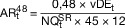
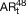

SGB 6
Ausfertigungsdatum: 18.12.1989
Vollzitat:
"Das Sechste Buch Sozialgesetzbuch – Gesetzliche Rentenversicherung – in der Fassung der Bekanntmachung vom 19. Februar 2002 (BGBl. I S. 754, 1404, 3384), das zuletzt durch Artikel 11 des Gesetzes vom 18. Dezember 2024 (BGBl. 2024 I Nr. 423) geändert worden ist"
| Stand: | Neugefasst durch Bek. v. 19.2.2002 I 754, 1404, 3384; |
| zuletzt geändert durch Art. 11 G v. 18.12.2024 I Nr. 423 | |
| Hinweis: | Mittelbare Änderung durch Art. 15 Nr. 3 G v. 18.12.2024 I Nr. 423 ist berücksichtigt |
| Ergänzung aufgrund der Sozialversicherungsrechengrößen-Verordnung 2025 v. 25.11.2024 I Nr. 365 ist berücksichtigt | |
(+++ Textnachweis ab: 1.1.1991 +++)Das G ist gem. Art. 85 Abs. 1 am 1.1.1992 in Kraft getreten; abweichend hiervon ist § 69 Abs. 2, §§ 120, 152, 160, 178, 180, 188, 195, 196 Abs. 3, §§ 222, 226, 275, 287 Abs. 3 und 4, §§ 288, 292 und 310 am 1.1.1991 in Kraft getreten gem. Art. 85 Abs. 7 G v. 18.12.1989 I 2261 (RRG 1992).
(+++ Zur Anwendung vgl. §§ 108, 276, 277, 287a, 302, 309, 314, 314a +++)
(+++ Zur Anwendung vgl. § 26 Abs. 3 HZvG 2002 F. 2016-11-11 +++)
(+++ Maßgaben aufgrund EinigVtr vgl. SGB 6 Anhang EV bzw. RRG 1992
Anhang EV +++)
| Sozialgesetzbuch (SGB) | |
| Sechstes Buch (VI) | |
| Gesetzliche Rentenversicherung | |
| Erstes Kapitel | |
| Versicherter Personenkreis | |
| Erster Abschnitt | |
| Versicherung kraft Gesetzes | |
| § 1 | Beschäftigte |
| § 2 | Selbständig Tätige |
| § 3 | Sonstige Versicherte |
| § 4 | Versicherungspflicht auf Antrag |
| § 5 | Versicherungsfreiheit |
| § 6 | Befreiung von der Versicherungspflicht |
| Zweiter Abschnitt | |
| Freiwillige Versicherung | |
| § 7 | Freiwillige Versicherung |
| Dritter Abschnitt | |
| Nachversicherung, Versorgungsausgleich und Rentensplitting | |
| § 8 | Nachversicherung, Versorgungsausgleich und Rentensplitting |
| Zweites Kapitel | |
| Leistungen | |
| Erster Abschnitt | |
| Leistungen zur Teilhabe | |
| Erster Unterabschnitt | |
| Voraussetzungen für die Leistungen | |
| § 9 | Aufgabe der Leistungen zur Teilhabe |
| § 10 | Persönliche Voraussetzungen |
| § 11 | Versicherungsrechtliche Voraussetzungen |
| § 12 | Ausschluss von Leistungen |
| Zweiter Unterabschnitt | |
| Umfang der Leistungen | |
| Erster Titel | |
| Allgemeines | |
| § 13 | Leistungsumfang |
| Zweiter Titel | |
| Leistungen zur Prävention, zur medizinischen Rehabilitation, zur Teilhabe am Arbeitsleben und zur Nachsorge | |
| § 14 | Leistungen zur Prävention |
| § 15 | Leistungen zur medizinischen Rehabilitation |
| § 15a | Leistungen zur Kinderrehabilitation |
| § 16 | Leistungen zur Teilhabe am Arbeitsleben |
| § 17 | Leistungen zur Nachsorge |
| § 18 | (weggefallen) |
| § 19 | (weggefallen) |
| Dritter Titel | |
| Übergangsgeld | |
| § 20 | Anspruch |
| § 21 | Höhe und Berechnung |
| § 22 | (weggefallen) |
| § 23 | (weggefallen) |
| § 24 | (weggefallen) |
| § 25 | (weggefallen) |
| § 26 | (weggefallen) |
| § 27 | (weggefallen) |
| Vierter Titel | |
| Ergänzende Leistungen | |
| § 28 | Ergänzende Leistungen |
| § 29 | (weggefallen) |
| § 30 | (weggefallen) |
| Fünfter Titel | |
| Sonstige Leistungen | |
| § 31 | Sonstige Leistungen |
| Sechster Titel | |
| Zuzahlung bei Leistungen zur medizinischen Rehabilitation und bei sonstigen Leistungen | |
| § 32 | Zuzahlung bei Leistungen zur medizinischen Rehabilitation und bei sonstigen Leistungen |
| Zweiter Abschnitt | |
| Renten | |
| Erster Unterabschnitt | |
| Rentenarten und Voraussetzungen für einen Rentenanspruch | |
| § 33 | Rentenarten |
| § 34 | Voraussetzungen für einen Rentenanspruch |
| Zweiter Unterabschnitt | |
| Anspruchsvoraussetzungen für einzelne Renten | |
| Erster Titel | |
| Renten wegen Alters | |
| § 35 | Regelaltersrente |
| § 36 | Altersrente für langjährig Versicherte |
| § 37 | Altersrente für schwerbehinderte Menschen |
| § 38 | (weggefallen) |
| § 39 | (weggefallen) |
| § 40 | Altersrente für langjährig unter Tage beschäftigte Bergleute |
| § 41 | Altersrente und Ende des Arbeitsverhältnisses |
| § 42 | Vollrente und Teilrente |
| Zweiter Titel | |
| Renten wegen verminderter Erwerbsfähigkeit | |
| § 43 | Rente wegen Erwerbsminderung |
| § 44 | (weggefallen) |
| § 45 | Rente für Bergleute |
| Dritter Titel | |
| Renten wegen Todes | |
| § 46 | Witwenrente und Witwerrente |
| § 47 | Erziehungsrente |
| § 48 | Waisenrente |
| § 49 | Renten wegen Todes bei Verschollenheit |
| Vierter Titel | |
| Wartezeiterfüllung | |
| § 50 | Wartezeiten |
| § 51 | Anrechenbare Zeiten |
| § 52 | Wartezeiterfüllung durch Versorgungsausgleich, Rentensplitting und Zuschläge an Entgeltpunkten für Arbeitsentgelt aus geringfügiger Beschäftigung |
| § 53 | Vorzeitige Wartezeiterfüllung |
| Fünfter Titel | |
| Rentenrechtliche Zeiten | |
| § 54 | Begriffsbestimmungen |
| § 55 | Beitragszeiten |
| § 56 | Kindererziehungszeiten |
| § 57 | Berücksichtigungszeiten |
| § 58 | Anrechnungszeiten |
| § 59 | Zurechnungszeit |
| § 60 | Zuordnung beitragsfreier Zeiten zur knappschaftlichen Rentenversicherung |
| § 61 | Ständige Arbeiten unter Tage |
| § 62 | Schadenersatz bei rentenrechtlichen Zeiten |
| Dritter Unterabschnitt | |
| Rentenhöhe und Rentenanpassung | |
| Erster Titel | |
| Grundsätze | |
| § 63 | Grundsätze |
| Zweiter Titel | |
| Berechnung und Anpassung der Renten | |
| § 64 | Rentenformel für Monatsbetrag der Rente |
| § 65 | Anpassung der Renten |
| § 66 | Persönliche Entgeltpunkte |
| § 67 | Rentenartfaktor |
| § 68 | Aktueller Rentenwert |
| § 68a | Schutzklausel |
| § 69 | Verordnungsermächtigung |
| Dritter Titel | |
| Ermittlung der persönlichen Entgeltpunkte | |
| § 70 | Entgeltpunkte für Beitragszeiten |
| § 71 | Entgeltpunkte für beitragsfreie und beitragsgeminderte Zeiten (Gesamtleistungsbewertung) |
| § 72 | Grundbewertung |
| § 73 | Vergleichsbewertung |
| § 74 | Begrenzte Gesamtleistungsbewertung |
| § 75 | Entgeltpunkte für Zeiten nach Rentenbeginn |
| § 76 | Zuschläge oder Abschläge beim Versorgungsausgleich |
| § 76a | Zuschläge an Entgeltpunkten aus Zahlung von Beiträgen bei vorzeitiger Inanspruchnahme einer Rente wegen Alters oder bei Abfindungen einer Anwartschaft auf betriebliche Altersversorgung oder von Anrechten bei der Versorgungsausgleichskasse |
| § 76b | Zuschläge an Entgeltpunkten für Arbeitsentgelt aus geringfügiger Beschäftigung |
| § 76c | Zuschläge oder Abschläge bei Rentensplitting |
| § 76d | Zuschläge an Entgeltpunkten aus Beiträgen nach Beginn einer Rente wegen Alters |
| § 76e | Zuschläge an Entgeltpunkten für Zeiten einer besonderen Auslandsverwendung |
| § 76f | Zuschläge an Entgeltpunkten für nachversicherte Soldaten auf Zeit |
| § 76g | Zuschlag an Entgeltpunkten für langjährige Versicherung |
| § 77 | Zugangsfaktor |
| § 78 | Zuschlag bei Waisenrenten |
| § 78a | Zuschlag bei Witwenrenten und Witwerrenten |
| Vierter Titel | |
| Knappschaftliche Besonderheiten | |
| § 79 | Grundsatz |
| § 80 | Monatsbetrag der Rente |
| § 81 | Persönliche Entgeltpunkte |
| § 82 | Rentenartfaktor |
| § 83 | Entgeltpunkte für Beitragszeiten |
| § 84 | Entgeltpunkte für beitragsfreie und beitragsgeminderte Zeiten (Gesamtleistungsbewertung) |
| § 85 | Entgeltpunkte für ständige Arbeiten unter Tage (Leistungszuschlag) |
| § 86 | (weggefallen) |
| § 86a | Zugangsfaktor |
| § 87 | Zuschlag bei Waisenrenten |
| Fünfter Titel | |
| Ermittlung des Monatsbetrags der Rente in Sonderfällen | |
| § 88 | Persönliche Entgeltpunkte bei Folgerenten |
| § 88a | Höchstbetrag bei Witwenrenten und Witwerrenten |
| Vierter Unterabschnitt | |
| Zusammentreffen von Renten und Einkommen | |
| § 89 | Mehrere Rentenansprüche |
| § 90 | Witwenrente und Witwerrente nach dem vorletzten Ehegatten und Ansprüche infolge Auflösung der letzten Ehe |
| § 91 | Aufteilung von Witwenrenten und Witwerrenten auf mehrere Berechtigte |
| § 92 | Waisenrente und andere Leistungen an Waisen |
| § 93 | Rente und Leistungen aus der Unfallversicherung |
| § 94 | (weggefallen) |
| § 95 | (weggefallen) |
| § 96 | Nachversicherte Versorgungsbezieher |
| § 96a | Rente wegen verminderter Erwerbsfähigkeit und Hinzuverdienst |
| § 97 | Einkommensanrechnung auf Renten wegen Todes |
| § 97a | Einkommensanrechnung beim Zuschlag an Entgeltpunkten für langjährige Versicherung |
| § 98 | Reihenfolge bei der Anwendung von Berechnungsvorschriften |
| Fünfter Unterabschnitt | |
| Beginn, Änderung und Ende von Renten | |
| § 99 | Beginn |
| § 100 | Änderung und Ende |
| § 101 | Beginn und Änderung in Sonderfällen |
| § 102 | Befristung und Tod |
| Sechster Unterabschnitt | |
| Ausschluss und Minderung von Renten | |
| § 103 | Absichtliche Minderung der Erwerbsfähigkeit |
| § 104 | Minderung der Erwerbsfähigkeit bei einer Straftat |
| § 105 | Tötung eines Angehörigen |
| Dritter Abschnitt | |
| Zusatzleistungen | |
| § 106 | Zuschuss zur Krankenversicherung |
| § 107 | Rentenabfindung |
| § 108 | Beginn, Änderung und Ende von Zusatzleistungen |
| Vierter Abschnitt | |
| Serviceleistungen | |
| § 109 | Renteninformation und Rentenauskunft |
| § 109a | Hilfen in Angelegenheiten der Grundsicherung |
| Fünfter Abschnitt | |
| Leistungen an Berechtigte im Ausland | |
| § 110 | Grundsatz |
| § 111 | Rehabilitationsleistungen und Krankenversicherungszuschuss |
| § 112 | Renten bei verminderter Erwerbsfähigkeit |
| § 113 | Höhe der Rente |
| § 114 | Besonderheiten |
| Sechster Abschnitt | |
| Durchführung | |
| Erster Unterabschnitt | |
| Beginn und Abschluss des Verfahrens | |
| § 115 | Beginn |
| § 116 | Besonderheiten bei Leistungen zur Teilhabe |
| § 117 | Abschluss |
| § 117a | Besonderheiten beim Zuschlag an Entgeltpunkten für langjährige Versicherung |
| Zweiter Unterabschnitt | |
| Auszahlung und Anpassung | |
| § 118 | Fälligkeit und Auszahlung |
| § 118a | Anpassungsmitteilung |
| § 119 | Wahrnehmung von Aufgaben durch die Deutsche Post AG |
| § 120 | Verordnungsermächtigung |
| Dritter Unterabschnitt | |
| Rentensplitting | |
| § 120a | Grundsätze für das Rentensplitting unter Ehegatten |
| § 120b | Tod eines Ehegatten vor Empfang angemessener Leistungen |
| § 120c | Abänderung des Rentensplittings unter Ehegatten |
| § 120d | Verfahren und Zuständigkeit |
| § 120e | Rentensplitting unter Lebenspartnern |
| Vierter Unterabschnitt | |
| Besonderheiten beim Versorgungsausgleich | |
| § 120f | Interne Teilung und Verrechnung von Anrechten |
| § 120g | Externe Teilung |
| § 120h | Abzuschmelzende Anrechte |
| Fünfter Unterabschnitt | |
| Berechnungsgrundsätze | |
| § 121 | Allgemeine Berechnungsgrundsätze |
| § 122 | Berechnung von Zeiten |
| § 123 | Berechnung von Geldbeträgen |
| § 124 | Berechnung von Durchschnittswerten und Rententeilen |
| Drittes Kapitel | |
| Organisation, Datenschutz und Datensicherheit | |
| Erster Abschnitt | |
| Organisation | |
| Erster Unterabschnitt | |
| Deutsche Rentenversicherung | |
| § 125 | Träger der gesetzlichen Rentenversicherung |
| Zweiter Unterabschnitt | |
| Zuständigkeit in der allgemeinen Rentenversicherung | |
| § 126 | Zuständigkeit der Träger der Rentenversicherung |
| § 127 | Zuständigkeit für Versicherte und Hinterbliebene |
| § 127a | Verbindungsstelle für Leistungen bei Invalidität, bei Alter und an Hinterbliebene sowie für Vorruhestandsleistungen |
| § 128 | Örtliche Zuständigkeit der Regionalträger |
| § 128a | Sonderzuständigkeit der Deutschen Rentenversicherung Saarland |
| § 129 | Zuständigkeit der Deutschen Rentenversicherung Knappschaft-Bahn-See für Versicherte |
| § 130 | Sonderzuständigkeit der Deutschen Rentenversicherung Knappschaft-Bahn-See |
| § 131 | Auskunfts- und Beratungsstellen |
| Dritter Unterabschnitt | |
| Zuständigkeit in der knappschaftlichen Rentenversicherung | |
| § 132 | Versicherungsträger |
| § 133 | Zuständigkeit der Deutschen Rentenversicherung Knappschaft-Bahn-See für Beschäftigte |
| § 134 | Knappschaftliche Betriebe und Arbeiten |
| § 135 | Nachversicherung |
| § 136 | Sonderzuständigkeit der Deutschen Rentenversicherung Knappschaft-Bahn-See |
| § 136a | Verbindungsstelle für Leistungen bei Invalidität, bei Alter und an Hinterbliebene der knappschaftlichen Rentenversicherung |
| § 137 | Besonderheit bei der Durchführung der Versicherung und bei den Leistungen |
| Unterabschnitt 3a | |
| Zuständigkeit der Deutschen Rentenversicherung Knappschaft-Bahn-See für die Seemannskasse | |
| § 137a | Zuständigkeit der Deutschen Rentenversicherung Knappschaft-Bahn-See für die Seemannskasse |
| § 137b | Besonderheiten bei den Leistungen und bei der Durchführung der Versicherung |
| § 137c | Vermögen, Haftung |
| § 137d | Organe |
| § 137e | Beirat |
| Vierter Unterabschnitt | |
| Grundsatz- und Querschnittsaufgaben der Deutschen Rentenversicherung, Erweitertes Direktorium | |
| § 138 | Grundsatz- und Querschnittsaufgaben der Deutschen Rentenversicherung |
| § 139 | Erweitertes Direktorium |
| § 140 | Arbeitsgruppe Personalvertretung der Deutschen Rentenversicherung |
| Fünfter Unterabschnitt | |
| Vereinigung von Regionalträgern | |
| § 141 | Vereinigung von Regionalträgern auf Beschluss ihrer Vertreterversammlungen |
| § 142 | Vereinigung von Regionalträgern durch Rechtsverordnung |
| Sechster Unterabschnitt | |
| Beschäftigte der Versicherungsträger | |
| § 143 | Bundesunmittelbare Versicherungsträger |
| § 144 | Landesunmittelbare Versicherungsträger |
| Siebter Unterabschnitt | |
| Datenstelle der Rentenversicherung | |
| § 145 | Aufgaben der Datenstelle der Rentenversicherung |
| § 146 | (weggefallen) |
| Zweiter Abschnitt | |
| Datenschutz und Datensicherheit | |
| § 147 | Versicherungsnummer |
| § 148 | Datenverarbeitung beim Rentenversicherungsträger |
| § 149 | Versicherungskonto |
| § 150 | Dateisysteme bei der Datenstelle |
| § 151 | Auskünfte der Deutschen Post AG |
| § 151a | Antragstellung im automatisierten Verfahren beim Versicherungsamt |
| § 151b | Automatisiertes Abrufverfahren beim Zuschlag an Entgeltpunkten für langjährige Versicherung |
| § 152 | Verordnungsermächtigung |
| Viertes Kapitel | |
| Finanzierung | |
| Erster Abschnitt | |
| Finanzierungsgrundsatz und Rentenversicherungsbericht | |
| Erster Unterabschnitt | |
| Umlageverfahren | |
| § 153 | Umlageverfahren |
| Zweiter Unterabschnitt | |
| Rentenversicherungsbericht und Sozialbeirat | |
| § 154 | Rentenversicherungsbericht, Stabilisierung des Beitragssatzes und Sicherung des Rentenniveaus |
| § 155 | Aufgabe des Sozialbeirats |
| § 156 | Zusammensetzung des Sozialbeirats |
| Zweiter Abschnitt | |
| Beiträge und Verfahren | |
| Erster Unterabschnitt | |
| Beiträge | |
| Erster Titel | |
| Allgemeines | |
| § 157 | Grundsatz |
| § 158 | Beitragssätze |
| § 159 | Beitragsbemessungsgrenzen |
| § 160 | Verordnungsermächtigung |
| Zweiter Titel | |
| Beitragsbemessungsgrundlagen | |
| § 161 | Grundsatz |
| § 162 | Beitragspflichtige Einnahmen Beschäftigter |
| § 163 | Sonderregelung für beitragspflichtige Einnahmen Beschäftigter |
| § 164 | (weggefallen) |
| § 165 | Beitragspflichtige Einnahmen selbständig Tätiger |
| § 166 | Beitragspflichtige Einnahmen sonstiger Versicherter |
| § 167 | Freiwillig Versicherte |
| Dritter Titel | |
| Verteilung der Beitragslast | |
| § 168 | Beitragstragung bei Beschäftigten |
| § 169 | Beitragstragung bei selbständig Tätigen |
| § 170 | Beitragstragung bei sonstigen Versicherten |
| § 171 | Freiwillig Versicherte |
| § 172 | Arbeitgeberanteil bei Versicherungsfreiheit und Befreiung von der Versicherungspflicht |
| § 172a | Beitragszuschüsse des Arbeitgebers für Mitglieder berufsständischer Versorgungseinrichtungen |
| Vierter Titel | |
| Zahlung der Beiträge | |
| § 173 | Grundsatz |
| § 174 | Beitragszahlung aus dem Arbeitsentgelt und Arbeitseinkommen |
| § 175 | Beitragszahlung bei Künstlern und Publizisten |
| § 176 | Beitragszahlung und Abrechnung bei Bezug von Sozialleistungen, bei Leistungen im Eingangsverfahren und im Berufsbildungsbereich anerkannter Werkstätten für behinderte Menschen |
| § 176a | Beitragszahlung und Abrechnung bei Pflegepersonen |
| § 176b | Beitragszahlung und Abrechnung für Bezieher von Übergangsgebührnissen |
| § 176c | Beitragszahlung und Abrechnung für Bezieher von Erwerbsschadensausgleich |
| § 177 | Beitragszahlung für Kindererziehungszeiten |
| § 178 | Verordnungsermächtigung |
| Fünfter Titel | |
| Erstattungen | |
| § 179 | Erstattung von Aufwendungen |
| § 180 | Verordnungsermächtigung |
| Sechster Titel | |
| Nachversicherung | |
| § 181 | Berechnung und Tragung der Beiträge |
| § 182 | Zusammentreffen mit vorhandenen Beiträgen |
| § 183 | Erhöhung und Minderung der Beiträge beim Versorgungsausgleich |
| § 184 | Fälligkeit der Beiträge und Aufschub |
| § 185 | Zahlung der Beiträge und Wirkung der Beitragszahlung |
| § 186 | Zahlung an eine berufsständische Versorgungseinrichtung |
| § 186a | Zeiten einer besonderen Auslandsverwendung im Nachversicherungszeitraum |
| Siebter Titel | |
| Zahlung von Beiträgen in besonderen Fällen | |
| § 187 | Zahlung von Beiträgen und Ermittlung von Entgeltpunkten aus Beiträgen beim Versorgungsausgleich |
| § 187a | Zahlung von Beiträgen bei vorzeitiger Inanspruchnahme einer Rente wegen Alters |
| § 187b | Zahlung von Beiträgen bei Abfindungen von Anwartschaften auf betriebliche Altersversorgung oder von Anrechten bei der Versorgungsausgleichskasse |
| § 188 | Beitragszahlung für Zeiten einer besonderen Auslandsverwendung |
| Achter Titel | |
| Berechnungsgrundsätze | |
| § 189 | Berechnungsgrundsätze |
| Zweiter Unterabschnitt | |
| Verfahren | |
| Erster Titel | |
| Meldungen | |
| § 190 | Meldepflichten bei Beschäftigten und Hausgewerbetreibenden |
| § 190a | Meldepflicht von versicherungspflichtigen selbständig Tätigen |
| § 191 | Meldepflichten bei sonstigen versicherungspflichtigen Personen |
| § 192 | Meldepflichten bei Einberufung zum Wehrdienst oder Zivildienst |
| § 192a | Meldepflicht für Zeiten einer besonderen Auslandsverwendung |
| § 192b | Meldepflichten bei Bezug von Übergangsgebührnissen |
| § 192c | Meldepflichten bei Bezug von Erwerbsschadensausgleich |
| § 193 | Meldung von sonstigen rechtserheblichen Zeiten |
| § 194 | Gesonderte Meldung und Hochrechnung |
| § 195 | Verordnungsermächtigung |
| Zweiter Titel | |
| Auskunfts- und Mitteilungspflichten | |
| § 196 | Auskunfts- und Mitteilungspflichten |
| § 196a | (weggefallen) |
| Dritter Titel | |
| Wirksamkeit der Beitragszahlung | |
| § 197 | Wirksamkeit von Beiträgen |
| § 198 | Neubeginn und Hemmung von Fristen |
| § 199 | Vermutung der Beitragszahlung |
| § 200 | Änderung der Beitragsberechnungsgrundlagen |
| § 201 | Beiträge an nicht zuständige Träger der Rentenversicherung |
| § 202 | Irrtümliche Pflichtbeitragszahlung |
| § 203 | Glaubhaftmachung der Beitragszahlung |
| Vierter Titel | |
| Nachzahlung | |
| § 204 | Nachzahlung von Beiträgen bei Ausscheiden aus einer internationalen Organisation |
| § 205 | Nachzahlung bei Strafverfolgungsmaßnahmen |
| § 206 | Nachzahlung für Geistliche und Ordensleute |
| § 207 | Nachzahlung für Ausbildungszeiten |
| § 208 | (weggefallen) |
| § 209 | Berechtigung und Beitragsberechnung zur Nachzahlung |
| Fünfter Titel | |
| Beitragserstattung und Beitragsüberwachung | |
| § 210 | Beitragserstattung |
| § 211 | Sonderregelung bei der Zuständigkeit zu Unrecht gezahlter Beiträge |
| § 212 | Beitragsüberwachung |
| § 212a | Prüfung der Beitragszahlungen und Meldungen für sonstige Versicherte, Nachversicherte und für Zeiten einer besonderen Auslandsverwendung |
| § 212b | Prüfung der Beitragszahlung bei versicherungspflichtigen Selbständigen |
| Dritter Abschnitt | |
| Beteiligung des Bundes, Finanzbeziehungen und Erstattungen | |
| Erster Unterabschnitt | |
| Beteiligung des Bundes | |
| § 213 | Zuschüsse des Bundes |
| § 214 | Liquiditätssicherung |
| § 214a | Liquiditätserfassung |
| § 215 | Beteiligung des Bundes in der knappschaftlichen Rentenversicherung |
| Zweiter Unterabschnitt | |
| Nachhaltigkeitsrücklage und Finanzausgleich | |
| § 216 | Nachhaltigkeitsrücklage |
| § 217 | Anlage der Nachhaltigkeitsrücklage |
| § 218 | (weggefallen) |
| § 219 | Finanzverbund in der allgemeinen Rentenversicherung |
| § 220 | Aufwendungen für Leistungen zur Teilhabe, Verwaltung und Verfahren |
| § 221 | Ausgaben für das Verwaltungsvermögen |
| § 222 | Ermächtigung |
| Dritter Unterabschnitt | |
| Erstattungen | |
| § 223 | Wanderversicherungsausgleich und Wanderungsausgleich |
| § 224 | Erstattung durch die Bundesagentur für Arbeit |
| § 224a | Tragung pauschalierter Beiträge für Renten wegen voller Erwerbsminderung |
| § 224b | Erstattung für Begutachtung in Angelegenheiten der Grundsicherung |
| § 225 | Erstattung durch den Träger der Versorgungslast |
| § 226 | Verordnungsermächtigung |
| Vierter Unterabschnitt | |
| Abrechnung der Aufwendungen | |
| § 227 | Abrechnung der Aufwendungen |
| Fünftes Kapitel | |
| Sonderregelungen | |
| Erster Abschnitt | |
| Ergänzungen für Sonderfälle | |
| Erster Unterabschnitt | |
| Grundsatz | |
| § 228 | Grundsatz |
| § 228a | (weggefallen) |
| § 228b | Maßgebende Werte in der Anpassungsphase |
| Zweiter Unterabschnitt | |
| Versicherter Personenkreis | |
| § 229 | Versicherungspflicht |
| § 229a | Versicherungspflicht im Beitrittsgebiet |
| § 230 | Versicherungsfreiheit |
| § 231 | Befreiung von der Versicherungspflicht |
| § 231a | Befreiung von der Versicherungspflicht im Beitrittsgebiet |
| § 232 | Freiwillige Versicherung |
| § 233 | Nachversicherung |
| § 233a | Nachversicherung im Beitrittsgebiet |
| Dritter Unterabschnitt | |
| Teilhabe | |
| § 234 | Übergangsgeldanspruch und -berechnung bei Arbeitslosenhilfe |
| § 234a | Übergangsgeldanspruch und -berechnung bei Unterhaltsgeldbezug |
| Vierter Unterabschnitt | |
| Anspruchsvoraussetzungen für einzelne Renten | |
| § 235 | Regelaltersrente |
| § 236 | Altersrente für langjährig Versicherte |
| § 236a | Altersrente für schwerbehinderte Menschen |
| § 236b | Altersrente für besonders langjährig Versicherte |
| § 237 | Altersrente wegen Arbeitslosigkeit oder nach Altersteilzeitarbeit |
| § 237a | Altersrente für Frauen |
| § 238 | Altersrente für langjährig unter Tage beschäftigte Bergleute |
| § 239 | Knappschaftsausgleichsleistung |
| § 240 | Rente wegen teilweiser Erwerbsminderung bei Berufsunfähigkeit |
| § 241 | Rente wegen Erwerbsminderung |
| § 242 | Rente für Bergleute |
| § 242a | Witwenrente und Witwerrente |
| § 243 | Witwenrente und Witwerrente an vor dem 1. Juli 1977 geschiedene Ehegatten |
| § 243a | Rente wegen Todes an vor dem 1. Juli 1977 geschiedene Ehegatten im Beitrittsgebiet |
| § 243b | Wartezeit |
| § 244 | Anrechenbare Zeiten |
| § 244a | Wartezeiterfüllung durch Zuschläge an Entgeltpunkten für Arbeitsentgelt aus geringfügiger versicherungsfreier Beschäftigung |
| § 245 | Vorzeitige Wartezeiterfüllung |
| § 245a | Wartezeiterfüllung bei früherem Anspruch auf Hinterbliebenenrente im Beitrittsgebiet |
| § 246 | Beitragsgeminderte Zeiten |
| § 247 | Beitragszeiten |
| § 248 | Beitragszeiten im Beitrittsgebiet und im Saarland |
| § 249 | Beitragszeiten wegen Kindererziehung |
| § 249a | Beitragszeiten wegen Kindererziehung im Beitrittsgebiet |
| § 249b | Berücksichtigungszeiten wegen Pflege |
| § 250 | Ersatzzeiten |
| § 251 | Ersatzzeiten bei Handwerkern |
| § 252 | Anrechnungszeiten |
| § 252a | Anrechnungszeiten im Beitrittsgebiet |
| § 253 | Pauschale Anrechnungszeit |
| § 253a | Zurechnungszeit |
| § 254 | Zuordnung beitragsfreier Zeiten zur knappschaftlichen Rentenversicherung |
| § 254a | Ständige Arbeiten unter Tage im Beitrittsgebiet |
| Fünfter Unterabschnitt | |
| Rentenhöhe und Rentenanpassung | |
| § 254b | (weggefallen) |
| § 254c | (weggefallen) |
| § 254d | Umbenennung in Entgeltpunkte |
| § 255 | Rentenartfaktor |
| § 255a | (weggefallen) |
| § 255b | (weggefallen) |
| § 255c | Anwendung des aktuellen Rentenwerts zum 1. Juli 2024 |
| § 255d | Bestimmung des aktuellen Rentenwerts für die Zeit vom 1. Juli 2018 bis zum 1. Juli 2026 |
| § 255e | Niveauschutzklausel für die Zeit vom 1. Juli 2019 bis zum 1. Juli 2025 |
| § 255f | Verordnungsermächtigung |
| § 255g | Ausgleichsbedarf ab dem 1. Juli 2021 |
| § 255h | Schutzklausel in der Zeit vom 1. Juli 2022 bis zum Ablauf des 1. Juli 2025 |
| § 255i | Anpassung nach Mindestsicherungsniveau bis zum Ablauf des 1. Juli 2025 |
| § 255j | Bestimmung des aktuellen Rentenwerts zum 1. Juli 2022 |
| § 256 | Entgeltpunkte für Beitragszeiten |
| § 256a | Entgeltpunkte für Beitragszeiten im Beitrittsgebiet |
| § 256b | Entgeltpunkte für glaubhaft gemachte Beitragszeiten |
| § 256c | Entgeltpunkte für nachgewiesene Beitragszeiten ohne Beitragsbemessungsgrundlage |
| § 256d | (weggefallen) |
| § 257 | Entgeltpunkte für Berliner Beitragszeiten |
| § 258 | Entgeltpunkte für saarländische Beitragszeiten |
| § 259 | Entgeltpunkte für Beitragszeiten mit Sachbezug |
| § 259a | Besonderheiten für Versicherte der Geburtsjahrgänge vor 1937 |
| § 259b | Besonderheiten bei Zugehörigkeit zu einem Zusatz- oder Sonderversorgungssystem |
| § 259c | (weggefallen) |
| § 260 | Beitragsbemessungsgrenzen |
| § 261 | Beitragszeiten ohne Entgeltpunkte |
| § 262 | Mindestentgeltpunkte bei geringem Arbeitsentgelt |
| § 263 | Gesamtleistungsbewertung für beitragsfreie und beitragsgeminderte Zeiten |
| § 263a | (weggefallen) |
| § 264 | Zuschläge oder Abschläge beim Versorgungsausgleich |
| § 264a | (weggefallen) |
| § 264b | Zuschläge an Entgeltpunkten für Arbeitsentgelt aus geringfügiger versicherungsfreier Beschäftigung |
| § 264c | Zuschlag bei Hinterbliebenenrenten |
| § 264d | Zugangsfaktor |
| § 265 | Knappschaftliche Besonderheiten |
| § 265a | (weggefallen) |
| § 265b | (weggefallen) |
| Sechster Unterabschnitt | |
| Zusammentreffen von Renten und Einkommen | |
| § 265c | Mehrere Rentenansprüche |
| § 266 | Erhöhung des Grenzbetrags |
| § 267 | Rente und Leistungen aus der Unfallversicherung |
| Siebter Unterabschnitt | |
| Beginn von Witwenrenten und Witwerrenten an vor dem 1. Juli 1977 geschiedene Ehegatten und Änderung von Renten beim Versorgungsausgleich | |
| § 268 | Beginn von Witwenrenten und Witwerrenten an vor dem 1. Juli 1977 geschiedene Ehegatten |
| § 268a | Änderung von Renten beim Versorgungsausgleich |
| Achter Unterabschnitt | |
| Zusatzleistungen | |
| § 269 | Steigerungsbeträge |
| § 269a | (weggefallen) |
| § 269b | Rentenabfindung bei Wiederheirat von Witwen und Witwern |
| § 270 | (weggefallen) |
| § 270a | (weggefallen) |
| Neunter Unterabschnitt | |
| Leistungen an Berechtigte im Ausland und Auszahlung | |
| § 270b | Rente wegen teilweiser Erwerbsminderung bei Berufsunfähigkeit |
| § 271 | Höhe der Rente |
| § 272 | Besonderheiten |
| § 272a | Fälligkeit und Auszahlung laufender Geldleistungen bei Beginn vor dem 1. April 2004 |
| Zehnter Unterabschnitt | |
| Organisation, Datenverarbeitung und Datenschutz | |
| Erster Titel | |
| Organisation | |
| § 273 | Zuständigkeit der Deutschen Rentenversicherung Knappschaft-Bahn-See |
| § 273a | Zuständigkeit in Zweifelsfällen |
| § 273b | (weggefallen) |
| Zweiter Titel | |
| Datenverarbeitung und Datenschutz | |
| § 274 | Dateisysteme bei der Datenstelle hinsichtlich der Verordnung (EWG) Nr. 1408/71 des Rates vom 14. Juni 1971 |
| § 274a | Verarbeitung von Sozialdaten im Zusammenhang mit dem Anpassungsgeld nach § 57 des Kohleverstromungsbeendigungsgesetzes |
| § 274b | Verarbeitung von Daten aufgrund des Gesetzes zur Zahlung einer Energiepreispauschale für Rentnerinnen und Rentner |
| Dritter Titel | |
| Übergangsvorschriften zur Zuständigkeit der Rentenversicherungsträger | |
| § 274c | Ausgleichsverfahren |
| § 274d | (weggefallen) |
| Elfter Unterabschnitt | |
| Finanzierung | |
| Erster Titel | |
| (weggefallen) | |
| § 275 | (weggefallen) |
| Zweiter Titel | |
| Beiträge | |
| § 275a | (weggefallen) |
| § 275b | (weggefallen) |
| § 275c | (weggefallen) |
| § 276 | Übergangsregelung für Auszubildende in einer außerbetrieblichen Einrichtung |
| § 276a | Arbeitgeberanteil bei Versicherungsfreiheit |
| § 276b | Übergangsregelung für Beschäftigte in Privathaushalten im Übergangsbereich |
| § 276c | (weggefallen) |
| § 277 | Beitragsrecht bei Nachversicherung |
| § 277a | Durchführung der Nachversicherung im Beitrittsgebiet |
| § 278 | Mindestbeitragsbemessungsgrundlage für die Nachversicherung |
| § 278a | Mindestbeitragsbemessungsgrundlage für die Nachversicherung im Beitrittsgebiet |
| § 279 | Beitragspflichtige Einnahmen bei Hebammen und Handwerkern |
| § 279a | Beitragspflichtige Einnahmen mitarbeitender Ehegatten im Beitrittsgebiet |
| § 279b | (weggefallen) |
| § 279c | Beitragstragung im Beitrittsgebiet |
| § 279d | Beitragszahlung im Beitrittsgebiet |
| § 279e | (weggefallen) |
| § 279f | (weggefallen) |
| § 279g | Sonderregelungen bei Altersteilzeitbeschäftigten |
| § 280 | Höherversicherung für Zeiten vor 1998 |
| § 281 | Nachversicherung |
| § 281a | (weggefallen) |
| § 281b | Verordnungsermächtigung |
| Dritter Titel | |
| Verfahren | |
| § 281c | Meldepflichten im Beitrittsgebiet |
| § 282 | Nachzahlung nach Erreichen der Regelaltersgrenze |
| § 283 | (weggefallen) |
| § 284 | Nachzahlung für Vertriebene, Flüchtlinge und Evakuierte |
| § 284a | (weggefallen) |
| § 284b | (weggefallen) |
| § 285 | Nachzahlung bei Nachversicherung |
| § 286 | Versicherungskarten |
| § 286a | Glaubhaftmachung der Beitragszahlung und Aufteilung von Beiträgen |
| § 286b | Glaubhaftmachung der Beitragszahlung im Beitrittsgebiet |
| § 286c | Vermutung der Beitragszahlung im Beitrittsgebiet |
| § 286d | Beitragserstattung |
| § 286e | Ausweis für Arbeit und Sozialversicherung |
| § 286f | Erstattung zu Unrecht gezahlter Pflichtbeiträge an die berufsständische Versorgungseinrichtung |
| § 286g | Erstattung von nach dem 21. Juli 2009 gezahlten freiwilligen Beiträgen |
| § 286h | Erstattung zu Unrecht gezahlter Beiträge für Bezieher von Übergangsgebührnissen |
| Vierter Titel | |
| Berechnungsgrundlagen | |
| § 287 | Beitragssatzgarantie bis 2025 |
| § 287a | Veränderung des allgemeinen Bundeszuschusses für das Jahr 2025 |
| § 287b | Ausgaben für Leistungen zur Teilhabe |
| § 287c | Förderung für sonstige Leistungen der Teilhabe |
| § 287d | Erstattungen in besonderen Fällen |
| § 287e | Veränderung des Bundeszuschusses im Beitrittsgebiet |
| § 287f | Getrennte Abrechnung |
| § 287g | Minderung des Erhöhungsbetrages des zusätzlichen Bundeszuschusses in den Jahren 2024 bis 2027 |
| § 288 | (weggefallen) |
| Fünfter Titel | |
| Erstattungen | |
| § 289 | Wanderversicherungsausgleich |
| § 289a | Besonderheiten beim Wanderversicherungsausgleich |
| § 290 | Erstattung durch den Träger der Versorgungslast |
| § 290a | Erstattung durch den Träger der Versorgungslast im Beitrittsgebiet |
| § 291 | Erstattungen für Anrechnungszeiten für den Bezug von Anpassungsgeld |
| § 291a | Erstattung von Invalidenrenten und Aufwendungen für Pflichtbeitragszeiten bei Erwerbsunfähigkeit |
| § 291b | Erstattung nicht beitragsgedeckter Leistungen |
| § 291c | Anschubfinanzierung |
| § 292 | Verordnungsermächtigung |
| § 292a | Verordnungsermächtigung für das Beitrittsgebiet |
| Sechster Titel | |
| Vermögensanlagen | |
| § 293 | Vermögensanlagen |
| Zwölfter Unterabschnitt | |
| Leistungen für Kindererziehung an Mütter der Geburtsjahrgänge vor 1921 | |
| § 294 | Anspruchsvoraussetzungen |
| § 294a | Besonderheiten für das Beitrittsgebiet |
| § 295 | Höhe der Leistung |
| § 295a | (weggefallen) |
| § 296 | Beginn und Ende |
| § 296a | (weggefallen) |
| § 297 | Zuständigkeit |
| § 298 | Durchführung |
| § 299 | Anrechnungsfreiheit |
| Zweiter Abschnitt | |
| Ausnahmen von der Anwendung neuen Rechts | |
| Erster Unterabschnitt | |
| Grundsatz | |
| § 300 | Grundsatz |
| Zweiter Unterabschnitt | |
| Leistungen zur Teilhabe | |
| § 301 | Leistungen zur Teilhabe |
| § 301a | Einmalzahlungs-Neuregelungsgesetz |
| Dritter Unterabschnitt | |
| Anspruchsvoraussetzungen für einzelne Renten | |
| § 302 | Anspruch auf Altersrente in Sonderfällen |
| § 302a | Renten wegen verminderter Erwerbsfähigkeit und Bergmannsvollrenten |
| § 302b | Renten wegen verminderter Erwerbsfähigkeit |
| § 303 | Witwerrente |
| § 303a | Große Witwenrente und große Witwerrente wegen Berufsunfähigkeit oder Erwerbsunfähigkeit |
| § 304 | Waisenrente |
| § 305 | Wartezeit und sonstige zeitliche Voraussetzungen |
| Vierter Unterabschnitt | |
| Rentenhöhe | |
| § 306 | Grundsatz |
| § 307 | Umwertung in persönliche Entgeltpunkte |
| § 307a | Persönliche Entgeltpunkte aus Bestandsrenten des Beitrittsgebiets |
| § 307b | Bestandsrenten aus überführten Renten des Beitrittsgebiets |
| § 307c | Durchführung der Neuberechnung von Bestandsrenten nach § 307b |
| § 307d | Zuschlag an persönlichen Entgeltpunkten für Kindererziehung |
| § 307e | Zuschlag an Entgeltpunkten für langjährige Versicherung bei Rentenbeginn in den Jahren 1992 bis 2020 |
| § 307f | Zuschlag an Entgeltpunkten für langjährige Versicherung bei Rentenbeginn vor dem 1. Januar 1992 |
| § 307g | Prüfung des Zuschlags an Entgeltpunkten für langjährige Versicherung |
| § 307h | Evaluierung |
| § 307i | Zuschlag an persönlichen Entgeltpunkten bei Renten wegen Erwerbsminderung und bei Renten wegen Todes |
| § 307j | Rentenzuschlag bei Renten wegen Erwerbsminderung und Renten wegen Todes für die Zeit von Juli 2024 bis November 2025 |
| § 308 | Umstellungsrenten |
| § 309 | Neufeststellung auf Antrag |
| § 310 | Erneute Neufeststellung von Renten |
| § 310a | Neufeststellung von Renten mit Zeiten der Beschäftigung bei der Deutschen Reichsbahn oder bei der Deutschen Post |
| § 310b | Neufeststellung von Renten mit überführten Zeiten nach dem Anspruchs- und Anwartschaftsüberführungsgesetz |
| § 310c | Neufeststellung von Renten wegen Beschäftigungszeiten während des Bezugs einer Invalidenrente |
| Fünfter Unterabschnitt | |
| Zusammentreffen von Renten und Einkommen | |
| § 311 | Rente und Leistungen aus der Unfallversicherung |
| § 312 | Mindestgrenzbetrag bei Versicherungsfällen vor dem 1. Januar 1979 |
| § 313 | Hinzuverdienst bei Renten wegen verminderter Erwerbsfähigkeit |
| § 313a | (weggefallen) |
| § 314 | Einkommensanrechnung auf Renten wegen Todes |
| § 314a | Einkommensanrechnung auf Renten wegen Todes aus dem Beitrittsgebiet |
| § 314b | (weggefallen) |
| Sechster Unterabschnitt | |
| Zusatzleistungen | |
| § 315 | Zuschuss zur Krankenversicherung |
| § 315a | Auffüllbetrag |
| § 315b | Renten aus freiwilligen Beiträgen des Beitrittsgebiets |
| § 316 | (weggefallen) |
| Siebter Unterabschnitt | |
| Leistungen an Berechtigte im Ausland | |
| § 317 | Grundsatz |
| § 317a | Neufeststellung |
| § 318 | (weggefallen) |
| § 319 | Zusatzleistungen |
| Achter Unterabschnitt | |
| Zusatzleistungen bei gleichzeitigem Anspruch auf Renten nach dem Übergangsrecht für Renten nach den Vorschriften des Beitrittsgebiets | |
| § 319a | Rentenzuschlag bei Rentenbeginn in den Jahren 1992 und 1993 |
| Neunter Unterabschnitt | |
| Leistungen bei gleichzeitigem Anspruch auf Renten nach dem Übergangsrecht für Renten nach den Vorschriften des Beitrittsgebiets | |
| § 319b | Übergangszuschlag |
| Zehnter Unterabschnitt | |
| (weggefallen) | |
| § 319c | (weggefallen) |
| Elfter Unterabschnitt | |
| Gesetz zur Regelung des Sozialen Entschädigungsrechts | |
| § 319d | Berücksichtigung von Versorgungskrankengeld |
| Sechstes Kapitel | |
| Bußgeldvorschriften | |
| § 320 | Bußgeldvorschriften |
| § 321 | Zusammenarbeit zur Verfolgung und Ahndung von Ordnungswidrigkeiten |
| § 322 | (weggefallen) |
| Anlagen | |
| Anlage 1 | Durchschnittsentgelt in Euro/DM/RM |
| Anlage 2 | Jährliche Beitragsbemessungsgrenzen in Euro/DM/RM |
| Anlage 2a | Jährliche Beitragsbemessungsgrenzen des Beitrittsgebiets in Euro/DM |
| Anlage 2b | Jährliche Höchstwerte an Entgeltpunkten |
| Anlage 3 | Entgeltpunkte für Beiträge nach Lohn-, Beitrags- oder Gehaltsklassen |
| Anlage 4 | Beitragsbemessungsgrundlage für Beitragsklassen |
| Anlage 5 | Entgeltpunkte für Berliner Beiträge |
| Anlage 6 | Werte zur Umrechnung der Beitragsbemessungsgrundlagen von Franken in Deutsche Mark |
| Anlage 7 | Entgeltpunkte für saarländische Beiträge |
| Anlage 8 | Lohn-, Beitrags- oder Gehaltsklassen und Beitragsbemessungsgrundlagen in RM/DM für Sachbezugszeiten, in denen der Versicherte nicht Lehrling oder Anlernling war |
| Anlage 9 | Hauerarbeiten |
| Anlage 10 | Werte zur Umrechnung der Beitragsbemessungsgrundlagen des Beitrittsgebiets |
| Anlage 11 | Verdienst für freiwillige Beiträge im Beitrittsgebiet |
| Anlage 12 | Gesamtdurchschnittseinkommen zur Umwertung der anpassungsfähigen Bestandsrenten des Beitrittsgebiets |
| Anlage 13 | Definition der Qualifikationsgruppen |
| Anlage 14 | Bereich |
| Anlage 15 | Entgeltpunkte für glaubhaft gemachte Beitragszeiten mit freiwilligen Beiträgen |
| Anlage 16 | Höchstverdienste bei glaubhaft gemachten Beitragszeiten ohne freiwillige Zusatzrentenversicherung |
| Anlage 17 | (weggefallen) |
| Anlage 18 | (weggefallen) |
| Anlage 19 | Anhebung der Altersgrenze bei Altersrente wegen Arbeitslosigkeit oder nach Altersteilzeitarbeit |
| Anlage 20 | Anhebung der Altersgrenze bei der Altersrente für Frauen |
| Anlage 21 bis 23 | (weggefallen) |
| 1. | Renten wegen Alters | 1,0 |
| 2. | Renten wegen teilweiser Erwerbsminderung | 0,5 |
| 3. | Renten wegen voller Erwerbsminderung | 1,0 |
| 4. | Erziehungsrenten | 1,0 |
| 5. | kleinen Witwenrenten und kleinen Witwerrenten bis zum Ende des dritten Kalendermonats nach Ablauf des Monats, in dem der Ehegatte verstorben ist, | 1,0 |
| anschließend | 0,25 | |
| 6. | großen Witwenrenten und großen Witwerrenten bis zum Ende des dritten Kalendermonats nach Ablauf des Monats, in dem der Ehegatte verstorben ist, | 1,0 |
| anschließend | 0,55 | |
| 7. | Halbwaisenrenten | 0,1 |
| 8. | Vollwaisenrenten | 0,2. |
| BE(tief)t-1 | 100 - AVA(tief)2012 - RVB(tief)t-1 | (( | (RQ(tief)t-1 | ) | ) | ||||
| ARt=ARt-1 x | ----------- | x --------------------------------- | x | (( | 1 - | ------------ | ) | x alpha + 1 | ) |
| BE(tief)t-2 | 100 - AVA(tief)2012 - RVB(tief)t-2 | (( | (RQ(tief)t-2 | ) | ) | ||||
| Dabei sind: | |||||||||
| AR(tief)t | = | zu bestimmender aktueller Rentenwert ab dem 1. Juli, | |||||||
| AR(tief)t-1 | = | bisheriger aktueller Rentenwert, | |||||||
| BE(tief)t-1 | = | Bruttolöhne und -gehälter je Arbeitnehmer im vergangenen Kalenderjahr, | |||||||
| BE(tief)t-2 | = | Bruttolöhne und -gehälter je Arbeitnehmer im vorvergangenen Kalenderjahr unter Berücksichtigung der Veränderung der beitragspflichtigen Bruttolöhne und -gehälter je Arbeitnehmer ohne Beamte einschließlich der Bezieher von Arbeitslosengeld, | |||||||
| AVA(tief)t-1 | = | Altersvorsorgeanteil für das Jahr 2012 in Höhe von 4 vom Hundert, | |||||||
| RVB(tief)t-1 | = | durchschnittlicher Beitragssatz in der allgemeinen Rentenversicherung im vergangenen Kalenderjahr, | |||||||
| RVB(tief)t-2 | = | durchschnittlicher Beitragssatz in der allgemeinen Rentenversicherung im vorvergangenen Kalenderjahr, | |||||||
| RQ(tief)t-1 | = | Rentnerquotient im vergangenen Kalenderjahr, | |||||||
| RQ(tief)t-2 | = | Rentnerquotient im vorvergangenen Kalenderjahr. | |||||||
| 1. | Renten wegen Alters | 1,3333 | |
| 2. | Renten wegen teilweiser Erwerbsminderung | ||
| a) | solange eine in der knappschaftlichen Rentenversicherung versicherte Beschäftigung ausgeübt wird | 0,6 | |
| b) | in den übrigen Fällen | 0,9 | |
| 3. | Renten wegen voller Erwerbsminderung | 1,3333 | |
| 4. | Renten für Bergleute | 0,5333 | |
| 5. | Erziehungsrenten | 1,3333 | |
| 6. | kleinen Witwenrenten und kleinen Witwerrenten bis zum Ablauf des dritten Kalendermonats nach Ablauf des Monats, in dem der Ehegatte verstorben ist, | 1,3333 | |
| anschließend | 0,3333 | ||
| 7. | großen Witwenrenten und großen Witwerrenten bis zum Ablauf des dritten Kalendermonats nach Ablauf des Monats, in dem der Ehegatte verstorben ist, | 1,3333 | |
| anschließend | 0,7333 | ||
| 8. | Halbwaisenrenten | 0,1333 | |
| 9. | Vollwaisenrenten | 0,2667. | |
| 1. | Renten wegen teilweiser Erwerbsminderung | 1,3333 |
| 2. | Renten für Bergleute | 1,3333 |
| 3. | kleinen Witwenrenten und kleinen Witwerrenten bis zum Ablauf des dritten Kalendermonats nach Ablauf des Monats, in dem der Ehegatte verstorben ist, | 1,3333 |
| anschließend | 0,7333. |
| vom sechsten bis zum zehnten Jahr | 0,125 |
| vom elften bis zum zwanzigsten Jahr | 0,25 |
| für jedes weitere Jahr | 0,375 |
| 1. | bei einer Halbwaisenrente | 0,0625 Entgeltpunkte, |
| 2. | bei einer Vollwaisenrente | 0,0563 Entgeltpunkte |
| Belgien | Deutsche Rentenversicherung Rheinland, |
| Bulgarien | Deutsche Rentenversicherung Mitteldeutschland, |
| Dänemark | Deutsche Rentenversicherung Nord, |
| Estland | Deutsche Rentenversicherung Nord, |
| Finnland | Deutsche Rentenversicherung Nord, |
| Frankreich | Deutsche Rentenversicherung Rheinland-Pfalz, |
| Griechenland | Deutsche Rentenversicherung Baden-Württemberg, |
| Großbritannien | Deutsche Rentenversicherung Nord, |
| Irland | Deutsche Rentenversicherung Nord, |
| Island | Deutsche Rentenversicherung Westfalen, |
| Italien | Deutsche Rentenversicherung Schwaben, |
| Kroatien | Deutsche Rentenversicherung Bayern Süd, |
| Lettland | Deutsche Rentenversicherung Nord, |
| Liechtenstein | Deutsche Rentenversicherung Baden-Württemberg, |
| Litauen | Deutsche Rentenversicherung Nord, |
| Luxemburg | Deutsche Rentenversicherung Rheinland-Pfalz, |
| Malta | Deutsche Rentenversicherung Schwaben, |
| Niederlande | Deutsche Rentenversicherung Westfalen, |
| Norwegen | Deutsche Rentenversicherung Nord, |
| Österreich | Deutsche Rentenversicherung Bayern Süd, |
| Polen | Deutsche Rentenversicherung Berlin-Brandenburg; in Fällen, in denen allein das Abkommen vom 9. Oktober 1975 über Renten- und Unfallversicherung anzuwenden ist, der nach § 128 Absatz 1 örtlich zuständige Regionalträger, |
| Portugal | Deutsche Rentenversicherung Nordbayern, |
| Rumänien | Deutsche Rentenversicherung Nordbayern, |
| Schweden | Deutsche Rentenversicherung Nord, |
| Schweiz | Deutsche Rentenversicherung Baden-Württemberg, |
| Slowakei | Deutsche Rentenversicherung Bayern Süd, |
| Slowenien | Deutsche Rentenversicherung Bayern Süd, |
| Spanien | Deutsche Rentenversicherung Rheinland, |
| Tschechische Republik | Deutsche Rentenversicherung Bayern Süd, |
| Ungarn | Deutsche Rentenversicherung Mitteldeutschland, |
| Zypern | Deutsche Rentenversicherung Baden-Württemberg. |
| Versicherte Geburtsjahr | Anhebung um Monate | auf Alter | |
| Jahr | Monat | ||
| 1947 | 1 | 65 | 1 |
| 1948 | 2 | 65 | 2 |
| 1949 | 3 | 65 | 3 |
| 1950 | 4 | 65 | 4 |
| 1951 | 5 | 65 | 5 |
| 1952 | 6 | 65 | 6 |
| 1953 | 7 | 65 | 7 |
| 1954 | 8 | 65 | 8 |
| 1955 | 9 | 65 | 9 |
| 1956 | 10 | 65 | 10 |
| 1957 | 11 | 65 | 11 |
| 1958 | 12 | 66 | 0 |
| 1959 | 14 | 66 | 2 |
| 1960 | 16 | 66 | 4 |
| 1961 | 18 | 66 | 6 |
| 1962 | 20 | 66 | 8 |
| 1963 | 22 | 66 | 10. |
| Versicherte Geburtsjahr Geburtsmonat | Anhebung um Monate | auf Alter | |
| Jahr | Monat | ||
| 1949 | |||
| Januar | 1 | 65 | 1 |
| Februar | 2 | 65 | 2 |
| März – Dezember | 3 | 65 | 3 |
| 1950 | 4 | 65 | 4 |
| 1951 | 5 | 65 | 5 |
| 1952 | 6 | 65 | 6 |
| 1953 | 7 | 65 | 7 |
| 1954 | 8 | 65 | 8 |
| 1955 | 9 | 65 | 9 |
| 1956 | 10 | 65 | 10 |
| 1957 | 11 | 65 | 11 |
| 1958 | 12 | 66 | 0 |
| 1959 | 14 | 66 | 2 |
| 1960 | 16 | 66 | 4 |
| 1961 | 18 | 66 | 6 |
| 1962 | 20 | 66 | 8 |
| 1963 | 22 | 66 | 10. |
| Versicherte Geburtsjahr Geburtsmonat | Vorzeitige Inanspruchnahme möglich ab Alter | |
| Jahr | Monat | |
| 1948 | ||
| Januar – Februar | 62 | 11 |
| März – April | 62 | 10 |
| Mai – Juni | 62 | 9 |
| Juli – August | 62 | 8 |
| September – Oktober | 62 | 7 |
| November – Dezember | 62 | 6 |
| 1949 | ||
| Januar – Februar | 62 | 5 |
| März – April | 62 | 4 |
| Mai – Juni | 62 | 3 |
| Juli – August | 62 | 2 |
| September – Oktober | 62 | 1 |
| November – Dezember | 62 | 0 |
| 1950 – 1963 | 62 | 0. |
| Versicherte Geburtsjahr Geburtsmonat | Anhebung um Monate | auf Alter | vorzeitige Inanspruchnahme möglich ab Alter | ||
| Jahr | Monat | Jahr | Monat | ||
| 1952 | |||||
| Januar | 1 | 63 | 1 | 60 | 1 |
| Februar | 2 | 63 | 2 | 60 | 2 |
| März | 3 | 63 | 3 | 60 | 3 |
| April | 4 | 63 | 4 | 60 | 4 |
| Mai | 5 | 63 | 5 | 60 | 5 |
| Juni – Dezember | 6 | 63 | 6 | 60 | 6 |
| 1953 | 7 | 63 | 7 | 60 | 7 |
| 1954 | 8 | 63 | 8 | 60 | 8 |
| 1955 | 9 | 63 | 9 | 60 | 9 |
| 1956 | 10 | 63 | 10 | 60 | 10 |
| 1957 | 11 | 63 | 11 | 60 | 11 |
| 1958 | 12 | 64 | 0 | 61 | 0 |
| 1959 | 14 | 64 | 2 | 61 | 2 |
| 1960 | 16 | 64 | 4 | 61 | 4 |
| 1961 | 18 | 64 | 6 | 61 | 6 |
| 1962 | 20 | 64 | 8 | 61 | 8 |
| 1963 | 22 | 64 | 10 | 61 | 10. |
| Versicherte Geburtsjahr | Anhebung um Monate | auf Alter | |
|---|---|---|---|
| Jahr | Monat | ||
| 1953 | 2 | 63 | 2 |
| 1954 | 4 | 63 | 4 |
| 1955 | 6 | 63 | 6 |
| 1956 | 8 | 63 | 8 |
| 1957 | 10 | 63 | 10 |
| 1958 | 12 | 64 | 0 |
| 1959 | 14 | 64 | 2 |
| 1960 | 16 | 64 | 4 |
| 1961 | 18 | 64 | 6 |
| 1962 | 20 | 64 | 8 |
| 1963 | 22 | 64 | 10. |
| Versicherte Geburtsjahr Geburtsmonat | Anhebung um Monate | auf Alter | vorzeitige Inanspruchnahme möglich ab Alter | ||
| Jahr | Monat | Jahr | Monat | ||
| vor 1941 | 0 | 60 | 0 | 60 | 0 |
| 1941 | |||||
| Januar-April | 1 | 60 | 1 | 60 | 0 |
| Mai-August | 2 | 60 | 2 | 60 | 0 |
| September-Dezember | 3 | 60 | 3 | 60 | 0 |
| 1942 | |||||
| Januar-April | 4 | 60 | 4 | 60 | 0 |
| Mai-August | 5 | 60 | 5 | 60 | 0 |
| September-Dezember | 6 | 60 | 6 | 60 | 0 |
| 1943 | |||||
| Januar-April | 7 | 60 | 7 | 60 | 0 |
| Mai-August | 8 | 60 | 8 | 60 | 0 |
| September-Dezember | 9 | 60 | 9 | 60 | 0 |
| 1944 | |||||
| Januar-Februar | 10 | 60 | 10 | 60 | 0 |
| Versicherte Geburtsjahr Geburtsmonat | Anhebung um Monate | auf Alter | vorzeitige Inanspruchnahme möglich ab Alter | ||
|---|---|---|---|---|---|
| Jahr | Monat | Jahr | Monat | ||
| vor 1941 | 0 | 60 | 0 | 60 | 0 |
| 1941 | |||||
| Januar-April | 1 | 60 | 1 | 60 | 0 |
| Mai-August | 2 | 60 | 2 | 60 | 0 |
| September-Dezember | 3 | 60 | 3 | 60 | 0 |
| 1942 | |||||
| Januar-April | 4 | 60 | 4 | 60 | 0 |
| Mai-August | 5 | 60 | 5 | 60 | 0 |
| September-Dezember | 6 | 60 | 6 | 60 | 0 |
| 1943 | |||||
| Januar-April | 7 | 60 | 7 | 60 | 0 |
| Mai-August | 8 | 60 | 8 | 60 | 0 |
| September-Dezember | 9 | 60 | 9 | 60 | 0 |
| 1944 | |||||
| Januar-April | 10 | 60 | 10 | 60 | 0 |
| Mai | 11 | 60 | 11 | 60 | 0 |
| Versicherte Geburtsjahr Geburtsmonat | Anhebung um Monate | auf Alter | |
| Jahr | Monat | ||
| 1952 | |||
| Januar | 1 | 60 | 1 |
| Februar | 2 | 60 | 2 |
| März | 3 | 60 | 3 |
| April | 4 | 60 | 4 |
| Mai | 5 | 60 | 5 |
| Juni – Dezember | 6 | 60 | 6 |
| 1953 | 7 | 60 | 7 |
| 1954 | 8 | 60 | 8 |
| 1955 | 9 | 60 | 9 |
| 1956 | 10 | 60 | 10 |
| 1957 | 11 | 60 | 11 |
| 1958 | 12 | 61 | 0 |
| 1959 | 14 | 61 | 2 |
| 1960 | 16 | 61 | 4 |
| 1961 | 18 | 61 | 6 |
| 1962 | 20 | 61 | 8 |
| 1963 | 22 | 61 | 10. |
| Todesjahr des Versicherten | Anhebung um Monate | auf Alter | |
| Jahr | Monat | ||
| 2012 | 1 | 45 | 1 |
| 2013 | 2 | 45 | 2 |
| 2014 | 3 | 45 | 3 |
| 2015 | 4 | 45 | 4 |
| 2016 | 5 | 45 | 5 |
| 2017 | 6 | 45 | 6 |
| 2018 | 7 | 45 | 7 |
| 2019 | 8 | 45 | 8 |
| 2020 | 9 | 45 | 9 |
| 2021 | 10 | 45 | 10 |
| 2022 | 11 | 45 | 11 |
| 2023 | 12 | 46 | 0 |
| 2024 | 14 | 46 | 2 |
| 2025 | 16 | 46 | 4 |
| 2026 | 18 | 46 | 6 |
| 2027 | 20 | 46 | 8 |
| 2028 | 22 | 46 | 10 |
| ab 2029 | 24 | 47 | 0. |
| Todesjahr des Versicherten | Anhebung um Monate | auf Alter | |
| Jahr | Monat | ||
| 2012 | 1 | 60 | 1 |
| 2013 | 2 | 60 | 2 |
| 2014 | 3 | 60 | 3 |
| 2015 | 4 | 60 | 4 |
| 2016 | 5 | 60 | 5 |
| 2017 | 6 | 60 | 6 |
| 2018 | 7 | 60 | 7 |
| 2019 | 8 | 60 | 8 |
| 2020 | 9 | 60 | 9 |
| 2021 | 10 | 60 | 10 |
| 2022 | 11 | 60 | 11 |
| 2023 | 12 | 61 | 0 |
| 2024 | 14 | 61 | 2 |
| 2025 | 16 | 61 | 4 |
| 2026 | 18 | 61 | 6 |
| 2027 | 20 | 61 | 8 |
| 2028 | 22 | 61 | 10 |
| ab 2029 | 24 | 62 | 0. |
| Bei Beginn der Rente oder bei Tod der Versicherten im Jahr | Anhebung um Monate | auf Alter | |
|---|---|---|---|
| Jahre | Monate | ||
| 2020 | 1 | 65 | 9 |
| 2021 | 2 | 65 | 10 |
| 2022 | 3 | 65 | 11 |
| 2023 | 4 | 66 | 0 |
| 2024 | 5 | 66 | 1 |
| 2025 | 6 | 66 | 2 |
| 2026 | 7 | 66 | 3 |
| 2027 | 8 | 66 | 4 |
| 2028 | 10 | 66 | 6 |
| 2029 | 12 | 66 | 8 |
| 2030 | 14 | 66 | 10 |
|  |
|  | = | aktueller Rentenwert des laufenden Kalenderjahres, der für die Einhaltung des Mindestsicherungsniveaus mindestens erforderlich ist, |
| = | verfügbares Durchschnittsentgelt nach § 154 Absatz 3a Satz 5 des laufenden Kalenderjahres, | |
| = | = Nettoquote der Standardrente für das laufende Kalenderjahr, die sich ermittelt, indem vom Wert 100 Prozent die Summe des von den Rentnerinnen und Rentnern zu tragenden Anteils des allgemeinen Beitragssatzes sowie des durchschnittlichen Zusatzbeitragssatzes zur gesetzlichen Krankenversicherung und des Beitragssatzes zur sozialen Pflegeversicherung des laufenden Kalenderjahres abgezogen wird, deren jeweilige Höhe der Bekanntmachung des Gesamtsozialversicherungsbeitragssatzes nach § 20 Absatz 2a Satz 5 des Vierten Buches im Bundesanzeiger zu entnehmen ist. |
| bei Beginn der Rente im | der Werte | ||
| 75 vom Hundert | 0,0625 Entgeltpunkte | ||
| Jahr | Monat | die Werte | |
| 2005 | Januar | 75,00 | 0,0625 |
| Februar | 73,44 | 0,0612 | |
| März | 71,88 | 0,0599 | |
| April | 70,31 | 0,0586 | |
| Mai | 68,75 | 0,0573 | |
| Juni | 67,19 | 0,0560 | |
| Juli | 65,63 | 0,0547 | |
| August | 64,06 | 0,0534 | |
| September | 62,50 | 0,0521 | |
| Oktober | 60,94 | 0,0508 | |
| November | 59,38 | 0,0495 | |
| Dezember | 57,81 | 0,0482 | |
| 2006 | Januar | 56,25 | 0,0469 |
| Februar | 54,69 | 0,0456 | |
| März | 53,13 | 0,0443 | |
| April | 51,56 | 0,0430 | |
| Mai | 50,00 | 0,0417 | |
| Juni | 48,44 | 0,0404 | |
| Juli | 46,88 | 0,0391 | |
| August | 45,31 | 0,0378 | |
| September | 43,75 | 0,0365 | |
| Oktober | 42,19 | 0,0352 | |
| November | 40,63 | 0,0339 | |
| Dezember | 39,06 | 0,0326 | |
| 2007 | Januar | 37,50 | 0,0313 |
| Februar | 35,94 | 0,0299 | |
| März | 34,38 | 0,0286 | |
| April | 32,81 | 0,0273 | |
| Mai | 31,25 | 0,0260 | |
| Juni | 29,69 | 0,0247 | |
| Juli | 28,13 | 0,0234 | |
| August | 26,56 | 0,0221 | |
| September | 25,00 | 0,0208 | |
| Oktober | 23,44 | 0,0195 | |
| November | 21,88 | 0,0182 | |
| Dezember | 20,31 | 0,0169 | |
| 2008 | Januar | 18,75 | 0,0156 |
| Februar | 17,19 | 0,0143 | |
| März | 15,63 | 0,0130 | |
| April | 14,06 | 0,0117 | |
| Mai | 12,50 | 0,0104 | |
| Juni | 10,94 | 0,0091 | |
| Juli | 9,38 | 0,0078 | |
| August | 7,81 | 0,0065 | |
| September | 6,25 | 0,0052 | |
| Oktober | 4,69 | 0,0039 | |
| November | 3,13 | 0,0026 | |
| Dezember | 1,56 | 0,0013 | |
| 2009 | Januar | 0,00 | 0,0000 |
| Bei Beginn der Rente oder bei Tod des Versicherten im | tritt an die Stelle des Lebensalters | ||||
| 65 Jahre das Lebensalter | 62 Jahre das Lebensalter | ||||
| Jahr | Monat | Jahre | Monate | Jahre | Monate |
| vor 2012 | 63 | 0 | 60 | 0 | |
| 2012 | Januar | 63 | 1 | 60 | 1 |
| 2012 | Februar | 63 | 2 | 60 | 2 |
| 2012 | März | 63 | 3 | 60 | 3 |
| 2012 | April | 63 | 4 | 60 | 4 |
| 2012 | Mai | 63 | 5 | 60 | 5 |
| 2012 | Juni – Dezember | 63 | 6 | 60 | 6 |
| 2013 | 63 | 7 | 60 | 7 | |
| 2014 | 63 | 8 | 60 | 8 | |
| 2015 | 63 | 9 | 60 | 9 | |
| 2016 | 63 | 10 | 60 | 10 | |
| 2017 | 63 | 11 | 60 | 11 | |
| 2018 | 64 | 0 | 61 | 0 | |
| 2019 | 64 | 2 | 61 | 2 | |
| 2020 | 64 | 4 | 61 | 4 | |
| 2021 | 64 | 6 | 61 | 6 | |
| 2022 | 64 | 8 | 61 | 8 | |
| 2023 | 64 | 10 | 61 | 10. | |
| Bei Beginn der Rente im | tritt an die Stelle des Lebensalters 64 Jahre das Lebensalter | ||
| Jahr | Monat | Jahre | Monate |
| 2012 | Januar | 62 | 1 |
| 2012 | Februar | 62 | 2 |
| 2012 | März | 62 | 3 |
| 2012 | April | 62 | 4 |
| 2012 | Mai | 62 | 5 |
| 2012 | Juni – Dezember | 62 | 6 |
| 2013 | 62 | 7 | |
| 2014 | 62 | 8 | |
| 2015 | 62 | 9 | |
| 2016 | 62 | 10 | |
| 2017 | 62 | 11 | |
| 2018 | 63 | 0 | |
| 2019 | 63 | 2 | |
| 2020 | 63 | 4 | |
| 2021 | 63 | 6 | |
| 2022 | 63 | 8 | |
| 2023 | 63 | 10. | |
| bis zu 30 Jahren | 1,6667 vom Hundert, |
| von 31 bis 35 Jahren | 1,5 vom Hundert, |
| von 36 bis 40 Jahren | 1,3333 vom Hundert, |
| von 41 bis 45 Jahren | 1,1667 vom Hundert, |
| von 46 bis 50 Jahren | 1,0 vom Hundert, |
| von 51 bis 55 Jahren | 0,9167 vom Hundert, |
| von 56 und mehr Jahren | 0,8333 vom Hundert |
| Jahr | Demografiekomponente |
|---|---|
| 2014 2015 2016 2017 | 1,0192 1,0126 1,0073 1,0026 |
| 2018 2019 2020 2021 2022 | 0,9975 0,9946 0,9938 0,9936 0,9935 |
| 2023 2024 2025 2026 2027 | 0,9938 0,9931 0,9929 0,9943 0,9919 |
| 2028 2029 2030 2031 2032 | 0,9907 0,9887 0,9878 0,9863 0,9875 |
| 2033 2034 2035 2036 2037 | 0,9893 0,9907 0,9914 0,9934 0,9924 |
| 2038 2039 2040 2041 2042 | 0,9948 0,9963 0,9997 1,0033 1,0051 |
| 2043 2044 2045 2046 2047 2048 2049 2050 | 1,0063 1,0044 1,0032 1,0028 1,0009 0,9981 0,9979 0,9978. |
| a) | bei Renten aus eigener Versicherung | 80 vom Hundert, |
| b) | bei Witwenrenten oder Witwerrenten | 48 vom Hundert, |
| a) | bei Renten aus eigener Versicherung | 95 vom Hundert, |
| b) | bei Witwenrenten oder Witwerrenten | 57 vom Hundert |
| 1. | bei einer Rente aus eigener Versicherung | 85 vom Hundert, |
| 2. | bei einer Witwenrente oder Witwerrente | 51 vom Hundert |
| 1. | bei einer Rente aus eigener Versicherung | 100 vom Hundert, |
| 2. | bei einer Witwenrente oder Witwerrente | 60 vom Hundert |
| Jahr | Durchschnittsentgelt | |
| 1891 | 700 | |
| 92 | 700 | |
| 93 | 709 | |
| 94 | 714 | |
| 95 | 714 | |
| 96 | 728 | |
| 97 | 741 | |
| 98 | 755 | |
| 99 | 773 | |
| 1900 | 796 | |
| 01 | 814 | |
| 02 | 841 | |
| 03 | 855 | |
| 04 | 887 | |
| 05 | 910 | |
| 06 | 946 | |
| 07 | 987 | |
| 08 | 1 019 | |
| 09 | 1 046 | |
| 1910 | 1 078 | |
| 11 | 1 119 | |
| 12 | 1 164 | |
| 13 | 1 182 | |
| 14 | 1 219 | |
| 15 | 1 178 | |
| 16 | 1 233 | |
| 17 | 1 446 | |
| 18 | 1 706 | |
| 19 | 2 010 | |
| 1920 | 3 729 | |
| 21 | 9 974 | |
| 24 | 1 233 | |
| 25 | 1 469 | |
| 26 | 1 642 | |
| 27 | 1 742 | |
| 28 | 1 983 | |
| 29 | 2 110 | |
| 1930 | 2 074 | |
| 31 | 1 924 | |
| 32 | 1 651 | |
| 33 | 1 583 | |
| 34 | 1 605 | |
| 35 | 1 692 | |
| 36 | 1 783 | |
| 37 | 1 856 | |
| 38 | 1 947 | |
| 39 | 2 092 | |
| 1940 | 2 156 | |
| 41 | 2 297 | |
| 42 | 2 310 | |
| 43 | 2 324 | |
| 44 | 2 292 | |
| 45 | 1 778 | |
| 46 | 1 778 | |
| 47 | 1 833 | |
| 48 | 2 219 | |
| 49 | 2 838 | |
| 1950 | 3 161 | |
| 51 | 3 579 | |
| 52 | 3 852 | |
| 53 | 4 061 | |
| 54 | 4 234 | |
| 55 | 4 548 | |
| 56 | 4 844 | |
| 57 | 5 043 | |
| 58 | 5 330 | |
| 59 | 5 602 | |
| 1960 | 6 101 | |
| 61 | 6 723 | |
| 62 | 7 328 | |
| 63 | 7 775 | |
| 64 | 8 467 | |
| 65 | 9 229 | |
| 66 | 9 893 | |
| 67 | 10 219 | |
| 68 | 10 842 | |
| 69 | 11 839 | |
| 1970 | 13 343 | |
| 71 | 14 931 | |
| 72 | 16 335 | |
| 73 | 18 295 | |
| 74 | 20 381 | |
| 75 | 21 808 | |
| 76 | 23 335 | |
| 77 | 24 945 | |
| 78 | 26 242 | |
| 79 | 27 685 | |
| 1980 | 29 485 | |
| 81 | 30 900 | |
| 82 | 32 198 | |
| 83 | 33 293 | |
| 84 | 34 292 | |
| 85 | 35 286 | |
| 86 | 36 627 | |
| 87 | 37 726 | |
| 88 | 38 896 | |
| 89 | 40 063 | |
| 1990 | 41 946 | |
| 91 | 44 421 | |
| 92 | 46 820 | |
| 93 | 48 178 | |
| 94 | 49 142 | |
| 95 | 50 665 | |
| 96 | 51 678 | |
| 97 | 52 143 | |
| 98 | 52 925 | |
| 99 | 53 507 | |
| 2000 | 54 256 | |
| 01 | 55 216 | |
| 02 | 28 626 | |
| 03 | 28 938 | |
| 04 | 29 060 | |
| 05 | 29 202 | |
| 06 | 29 494 | |
| 07 | 29 951 | |
| 08 | 30 625 | |
| 09 | 30 506 | |
| 2010 | 31 144 | |
| 11 | 32 100 | |
| 12 | 33 002 | |
| 13 | 33 659 | |
| 14 | 34 514 | |
| 15 | 35 363 | |
| 16 | 36 187 | |
| 17 | 37 077 | |
| 18 | 38 212 | |
| 19 | 39 301 | |
| 2020 | 39 167 | |
| 21 | 40 463 | |
| 22 | 42 053 | |
| 23 | 44 732 | |
| 24 | 45 358*) | |
| 25 | 50 493*) | |
| Zeitraum | Allgemeine Rentenversicherung | Knappschaftliche Rentenversicherung | |
| Arbeiter | Angestellten | ||
| 1.1.1924-31.12.1924 | 1 056 | 4 080 | |
| 1.1.1925-30. 4.1925 | 1 380 | 4 080 | |
| 1.5.1925-31.12.1925 | 1 380 | 6 000 | |
| 1.1.1926-31.12.1926 | 1 908 | 6 000 | |
| 1.1.1927-31.12.1927 | 2 016 | 6 000 | |
| 1.1.1928-31. 8.1928 | 2 748 | 6 000 | |
| 1.9.1928-31.12.1928 | 2 748 | 8 400 | |
| 1.1.1929-31.12.1929 | 2 928 | 8 400 | |
| 1.1.1930-31.12.1930 | 2 880 | 8 400 | |
| 1.1.1931-31.12.1931 | 2 676 | 8 400 | |
| 1.1.1932-31.12.1932 | 2 292 | 8 400 | |
| 1.1.1933-31.12.1933 | 2 196 | 8 400 | |
| 1.1.1934-31.12.1934 | 2 004 | 7 200 | |
| 1.1.1935-31.12.1935 | 2 112 | 7 200 | |
| 1.1.1936-31.12.1936 | 2 220 | 7 200 | |
| 1.1.1937-31.12.1937 | 2 316 | 7 200 | |
| 1.1.1938-31.12.1938 | 2 700 | 7 200 | |
| 1.1.1939-31.12.1939 | 3 000 | 7 200 | |
| 1.1.1940-31.12.1940 | 3 096 | 7 200 | |
| 1.1.1941-31.12.1941 | 3 300 | 7 200 | |
| 1.1.1942-30.6.1942 | 3 312 | 7 200 | |
| 1.7.1942-31.12.1942 | 3 600 | 7 200 | |
| 1.1.1943-28.2.1947 | 3 600 | 7 200 | 4 800 |
| 1.3.1947-31.5.1949 | 3 600 | 7 200 | 7 200 |
| 1.6.1949-31.8.1952 | 7 200 | 8 400 | |
| 1.9.1952-31.12.1958 | 9 000 | 12 000 | |
| 1.1.1959-31.12.1959 | 9 600 | 12 000 | |
| 1.1.1960-31.12.1960 | 10 200 | 12 000 | |
| 1.1.1961-31.12.1961 | 10 800 | 13 200 | |
| 1.1.1962-31.12.1962 | 11 400 | 13 200 | |
| 1.1.1963-31.12.1963 | 12 000 | 14 400 | |
| 1.1.1964-31.12.1964 | 13 200 | 16 800 | |
| 1.1.1965-31.12.1965 | 14 400 | 18 000 | |
| 1.1.1966-31.12.1966 | 15 600 | 19 200 | |
| 1.1.1967-31.12.1967 | 16 800 | 20 400 | |
| 1.1.1968-31.12.1968 | 19 200 | 22 800 | |
| 1.1.1969-31.12.1969 | 20 400 | 24 000 | |
| 1.1.1970-31.12.1970 | 21 600 | 25 200 | |
| 1.1.1971-31.12.1971 | 22 800 | 27 600 | |
| 1.1.1972-31.12.1972 | 25 200 | 30 000 | |
| 1.1.1973-31.12.1973 | 27 600 | 33 600 | |
| 1.1.1974-31.12.1974 | 30 000 | 37 200 | |
| 1.1.1975-31.12.1975 | 33 600 | 40 800 | |
| 1.1.1976-31.12.1976 | 37 200 | 45 600 | |
| 1.1.1977-31.12.1977 | 40 800 | 50 400 | |
| 1.1.1978-31.12.1978 | 44 400 | 55 200 | |
| 1.1.1979-31.12.1979 | 48 000 | 57 600 | |
| 1.1.1980-31.12.1980 | 50 400 | 61 200 | |
| 1.1.1981-31.12.1981 | 52 800 | 64 800 | |
| 1.1.1982-31.12.1982 | 56 400 | 69 600 | |
| 1.1.1983-31.12.1983 | 60 000 | 73 200 | |
| 1.1.1984-31.12.1984 | 62 400 | 76 800 | |
| 1.1.1985-31.12.1985 | 64 800 | 80 400 | |
| 1.1.1986-31.12.1986 | 67 200 | 82 800 | |
| 1.1.1987-31.12.1987 | 68 400 | 85 200 | |
| 1.1.1988-31.12.1988 | 72 000 | 87 600 | |
| 1.1.1989-31.12.1989 | 73 200 | 90 000 | |
| 1.1.1990-31.12.1990 | 75 600 | 93 600 | |
| 1.1.1991-31.12.1991 | 78 000 | 96 000 | |
| 1.1.1992-31.12.1992 | 81 600 | 100 800 | |
| 1.1.1993-31.12.1993 | 86 400 | 106 800 | |
| 1.1.1994-31.12.1994 | 91 200 | 112 800 | |
| 1.1.1995-31.12.1995 | 93 600 | 115 200 | |
| 1.1.1996-31.12.1996 | 96 000 | 117 600 | |
| 1.1.1997-31.12.1997 | 98 400 | 121 200 | |
| 1.1.1998-31.12.1998 | 100 800 | 123 600 | |
| 1.1.1999-31.12.1999 | 102 000 | 124 800 | |
| 1.1.2000-31.12.2000 | 103 200 | 127 200 | |
| 1.1.2001-31.12.2001 | 104 400 | 128 400 | |
| 1.1.2002-31.12.2002 | 54 000 | 66 600 | |
| 1.1.2003-31.12.2003 | 61 200 | 75 000 | |
| 1.1.2004-31.12.2004 | 61 800 | 76 200 | |
| 1.1.2005-31.12.2005 | 62 400 | 76 800 | |
| 1.1.2006-31.12.2006 | 63 000 | 77 400 | |
| 1.1.2007-31.12.2007 | 63 000 | 77 400 | |
| 1.1.2008-31.12.2008 | 63 600 | 78 600 | |
| 1.1.2009-31.12.2009 | 64 800 | 79 800 | |
| 1.1.2010-31.12.2010 | 66 000 | 81 600 | |
| 1.1.2011-31.12.2011 | 66 000 | 81 000 | |
| 1.1.2012-31.12.2012 | 67 200 | 82 800 | |
| 1.1.2013-31.12.2013 | 69 600 | 85 200 | |
| 1.1.2014-31.12.2014 | 71 400 | 87 600 | |
| 1.1.2015-31.12.2015 | 72 600 | 89 400 | |
| 1.1.2016-31.12.2016 | 74 400 | 91 800 | |
| 1.1.2017-31.12.2017 | 76 200 | 94 200 | |
| 1.1.2018-31.12.2018 | 78 000 | 96 000 | |
| 1.1.2019 - 31.12.2019 | 80 400 | 98 400 | |
| 1.1.2020 - 31.12.2020 | 82 800 | 101 400 | |
| 1.1.2021 - 31.12.2021 | 85 200 | 104 400 | |
| 1.1.2022 - 31.12.2022 | 84 600 | 103 800 | |
| 1.1.2023 - 31.12.2023 | 87 600 | 107 400 | |
| 1.1.2024 - 31.12.2024 | 90 600 | 111 600 | |
| 1.1.2025 - 31.12.2025 | 96 600 | 118 800 | |
| Zeitraum | Allgemeine Rentenversicherung | Knappschaftliche Rentenversicherung |
| 1.7.1990 - 31.12.1990 | 32 400 | 32 400 |
| 1.1.1991 - 30. 6.1991 | 36 000 | 36 000 |
| 1.7.1991 - 31.12.1991 | 40 800 | 40 800 |
| 1.1.1992 - 31.12.1992 | 57 600 | 70 800 |
| 1.1.1993 - 31.12.1993 | 63 600 | 78 000 |
| 1.1.1994 - 31.12.1994 | 70 800 | 87 600 |
| 1.1.1995 - 31.12.1995 | 76 800 | 93 600 |
| 1.1.1996 - 31.12.1996 | 81 600 | 100 800 |
| 1.1.1997 - 31.12.1997 | 85 200 | 104 400 |
| 1.1.1998 - 31.12.1998 | 84 000 | 103 200 |
| 1.1.1999 - 31.12.1999 | 86 400 | 105 600 |
| 1.1.2000 - 31.12.2000 | 85 200 | 104 400 |
| 1.1.2001 - 31.12.2001 | 87 600 | 108 000 |
| 1.1.2002 - 31.12.2002 | 45 000 | 55 800 |
| 1.1.2003 - 31.12.2003 | 51 000 | 63 000 |
| 1.1.2004 - 31.12.2004 | 52 200 | 64 200 |
| 1.1.2005 - 31.12.2005 | 52 800 | 64 800 |
| 1.1.2006 - 31.12.2006 | 52 800 | 64 800 |
| 1.1.2007 - 31.12.2007 | 54 600 | 66 600 |
| 1.1.2008 - 31.12.2008 | 54 000 | 66 600 |
| 1.1.2009 - 31.12.2009 | 54 600 | 67 200 |
| 1.1.2010 - 31.12.2010 | 55 800 | 68 400 |
| 1.1.2011 - 31.12.2011 | 57 600 | 70 800 |
| 1.1.2012 - 31.12.2012 | 57 600 | 70 800 |
| 1.1.2013 - 31.12.2013 | 58 800 | 72 600 |
| 1.1.2014 - 31.12.2014 | 60 000 | 73 800 |
| 1.1.2015 - 31.12.2015 | 62 400 | 76 200 |
| 1.1.2016 - 31.12.2016 | 64 800 | 79 800 |
| 1.1.2017 - 31.12.2017 | 68 400 | 84 000 |
| 1.1.2018 - 31.12.2018 | 69 600 | 85 800 |
| 1.1.2019 - 31.12.2019 | 73 800 | 91 200 |
| 1.1.2020 - 31.12.2020 | 77 400 | 94 800 |
| 1.1.2021 - 31.12.2021 | 80 400 | 99 000 |
| 1.1.2022 - 31.12.2022 | 81 000 | 100 200 |
| 1.1.2023 - 31.12.2023 | 85 200 | 104 400 |
| 1.1.2024 - 31.12.2024 | 89 400 | 110 400 |
| Zeitraum | Allgemeine Rentenversicherung | Knappschaftliche Rentenversicherung | |
| Arbeiter | Angestellten | ||
| 1.1.1935 - 31.12.1935 | 1,2482 | 4,2553 | |
| 1.1.1936 - 31.12.1936 | 1,2451 | 4,0381 | |
| 1.1.1937 - 31.12.1937 | 1,2478 | 3,8793 | |
| 1.1.1938 - 31.12.1938 | 1,3867 | 3,6980 | |
| 1.1.1939 - 31.12.1939 | 1,4340 | 3,4417 | |
| 1.1.1940 - 31.12.1940 | 1,4360 | 3,3395 | |
| 1.1.1941 - 31.12.1941 | 1,4367 | 3,1345 | |
| 1.1.1942 - 30.06.1942 | 1,4338 | 3,1169 | |
| 1.7.1942 - 31.12.1942 | 1,5584 | 3,1169 | |
| 1.1.1943 - 31.12.1943 | 1,5491 | 3,0981 | 2,0654 |
| 1.1.1944 - 31.12.1944 | 1,5707 | 3,1414 | 2,0942 |
| 1.1.1945 - 31.12.1945 | 2,0247 | 4,0495 | 2,6997 |
| 1.1.1946 - 31.12.1946 | 2,0247 | 4,0495 | 2,6997 |
| 1.1.1947 - 28.02.1947 | 1,9640 | 3,9280 | 2,6187 |
| 1.3.1947 - 31.12.1947 | 1,9640 | 3,9280 | 3,9280 |
| 1.1.1948 - 31.12.1948 | 1,6224 | 3,2447 | 3,2447 |
| 1.1.1949 - 31.05.1949 | 1,2685 | 2,5370 | 2,5370 |
| 1.6.1949 - 31.12.1949 | 2,5370 | 2,9598 | |
| 1.1.1950 - 31.12.1950 | 2,2778 | 2,6574 | |
| 1.1.1951 - 31.12.1951 | 2,0117 | 2,3470 | |
| 1.1.1952 - 31.08.1952 | 1,8692 | 2,1807 | |
| 1.9.1952 - 31.12.1952 | 2,3364 | 3,1153 | |
| 1.1.1953 - 31.12.1953 | 2,2162 | 2,9549 | |
| 1.1.1954 - 31.12.1954 | 2,1256 | 2,8342 | |
| 1.1.1955 - 31.12.1955 | 1,9789 | 2,6385 | |
| 1.1.1956 - 31.12.1956 | 1,8580 | 2,4773 | |
| 1.1.1957 - 31.12.1957 | 1,7847 | 2,3795 | |
| 1.1.1958 - 31.12.1958 | 1,6886 | 2,2514 | |
| 1.1.1959 - 31.12.1959 | 1,7137 | 2,1421 | |
| 1.1.1960 - 31.12.1960 | 1,6719 | 1,9669 | |
| 1.1.1961 - 31.12.1961 | 1,6064 | 1,9634 | |
| 1.1.1962 - 31.12.1962 | 1,5557 | 1,8013 | |
| 1.1.1963 - 31.12.1963 | 1,5434 | 1,8521 | |
| 1.1.1964 - 31.12.1964 | 1,5590 | 1,9842 | |
| 1.1.1965 - 31.12.1965 | 1,5603 | 1,9504 | |
| 1.1.1966 - 31.12.1966 | 1,5769 | 1,9408 | |
| 1.1.1967 - 31.12.1967 | 1,6440 | 1,9963 | |
| 1.1.1968 - 31.12.1968 | 1,7709 | 2,1029 | |
| 1.1.1969 - 31.12.1969 | 1,7231 | 2,0272 | |
| 1.1.1970 - 31.12.1970 | 1,6188 | 1,8886 | |
| 1.1.1971 - 31.12.1971 | 1,5270 | 1,8485 | |
| 1.1.1972 - 31.12.1972 | 1,5427 | 1,8365 | |
| 1.1.1973 - 31.12.1973 | 1,5086 | 1,8366 | |
| 1.1.1974 - 31.12.1974 | 1,4720 | 1,8252 | |
| 1.1.1975 - 31.12.1975 | 1,5407 | 1,8709 | |
| 1.1.1976 - 31.12.1976 | 1,5942 | 1,9541 | |
| 1.1.1977 - 31.12.1977 | 1,6356 | 2,0204 | |
| 1.1.1978 - 31.12.1978 | 1,6919 | 2,1035 | |
| 1.1.1979 - 31.12.1979 | 1,7338 | 2,0805 | |
| 1.1.1980 - 31.12.1980 | 1,7093 | 2,0756 | |
| 1.1.1981 - 31.12.1981 | 1,7087 | 2,0971 | |
| 1.1.1982 - 31.12.1982 | 1,7517 | 2,1616 | |
| 1.1.1983 - 31.12.1983 | 1,8022 | 2,1987 | |
| 1.1.1984 - 31.12.1984 | 1,8197 | 2,2396 | |
| 1.1.1985 - 31.12.1985 | 1,8364 | 2,2785 | |
| 1.1.1986 - 31.12.1986 | 1,8347 | 2,2606 | |
| 1.1.1987 - 31.12.1987 | 1,8131 | 2,2584 | |
| 1.1.1988 - 31.12.1988 | 1,8511 | 2,2522 | |
| 1.1.1989 - 31.12.1989 | 1,8271 | 2,2465 | |
| 1.1.1990 - 31.12.1990 | 1,8023 | 2,2314 | |
| Jährliche Höchstwerte an Entgeltpunkten |
| Zeitraum | Allgemeine Rentenversicherung | Knappschaftliche Rentenversicherung | ||
| endgültige | vorläufige | endgültige | vorläufige | |
| 1.1.1991 - 31.12.1991 | 1,7559 | 1,7761 | 2,1611 | 2,1859 |
| 1.1.1992 - 31.12.1992 | 1,7428 | 1,7782 | 2,1529 | 2,1966 |
| 1.1.1993 - 31.12.1993 | 1,7933 | 1,7397 | 2,2168 | 2,1505 |
| 1.1.1994 - 31.12.1994 | 1,8558 | 1,7580 | 2,2954 | 2,1744 |
| 1.1.1995 - 31.12.1995 | 1,8474 | 1,8363 | 2,2738 | 2,2601 |
| 1.1.1996 - 31.12.1996 | 1,8577 | 1,8784 | 2,2756 | 2,3010 |
| 1.1.1997 - 31.12.1997 | 1,8871 | 1,8288 | 2,3244 | 2,2525 |
| 1.1.1998 - 31.12.1998 | 1,9046 | 1,8755 | 2,3354 | 2,2997 |
| 1.1.1999 - 31.12.1999 | 1,9063 | 1,9216 | 2,3324 | 2,3511 |
| 1.1.2000 - 31.12.2000 | 1,9021 | 1,8931 | 2,3444 | 2,3334 |
| 1.1.2001 - 31.12.2001 | 1,9092 | 2,3480 | ||
| 1.1.2002 - 31.12.2002 | 1,8935 | 2,3354 | ||
| 1. Rentenversicherung der Arbeiter | ||||||
| Zeitraum | Lohn- oder Beitragsklassen (Wochenbeiträge) | |||||
| I | II | III | IV | V | VI | |
| (1) | (2) | (3) | (4) | (5) | (6) | |
| 1.1.1891-31.12.1899 | 0,0071 | 0,0118 | 0,0178 | 0,0305 | ||
| 1.1.1900-31.12.1906 | 0,0061 | 0,0099 | 0,0152 | 0,0220 | 0,0306 | |
| 1.1.1907-30. 9.1921 | 0,0044 | 0,0070 | 0,0108 | 0,0155 | 0,0263 | |
| 1.1.1924-31.12.1933 | 0,0029 | 0,0055 | 0,0089 | 0,0122 | 0,0164 | 0,0223 |
| 1.1.1934-27. 6.1942 | 0,0026 | 0,0045 | 0,0076 | 0,0108 | 0,0138 | 0,0169 |
| 28.6.1942-29. 5.1949 | 0,0024 | 0,0043 | 0,0071 | 0,0100 | 0,0128 | 0,0157 |
| 30.5.1949-31.12.1954 | 0,0014 | 0,0024 | 0,0041 | 0,0057 | 0,0082 | 0,0114 |
| 1.1.1955-31.12.1955 | 0,0011 | 0,0020 | 0,0033 | 0,0046 | 0,0066 | 0,0092 |
| 1.1.1956-31.12.1956 | 0,0010 | 0,0019 | 0,0031 | 0,0043 | 0,0062 | 0,0087 |
| 1.1.1957-28. 2.1957 | 0,0010 | 0,0018 | 0,0030 | 0,0042 | 0,0059 | 0,0083 |
| 1. Rentenversicherung der Arbeiter | ||||||
| Zeitraum | Lohn- oder Beitragsklassen (Wochenbeiträge) | |||||
| VII | VIII | IX | X | XI | XII | |
| 1.1.1891-31.12.1899 | ||||||
| 1.1.1900-31.12.1906 | ||||||
| 1.1.1907-30. 9.1921 | ||||||
| 1.1.1924-31.12.1933 | 0,0267 | |||||
| 1.1.1934-27. 6.1942 | 0,0200 | 0,0240 | 0,0276 | 0,0292 | ||
| 28.6.1942-29. 5.1949 | 0,0185 | 0,0214 | 0,0244 | 0,0271 | ||
| 30.5.1949-31.12.1954 | 0,0163 | 0,0228 | 0,0294 | 0,0359 | 0,0424 | 0,0534 |
| 1.1.1955-31.12.1955 | 0,0132 | 0,0185 | 0,0237 | 0,0290 | 0,0343 | |
| 1.1.1956-31.12.1956 | 0,0124 | 0,0173 | 0,0223 | 0,0273 | 0,0322 | |
| 1.1.1957-28. 2.1957 | 0,0119 | 0,0167 | 0,0214 | 0,0262 | 0,0309 | |
| 2. Rentenversicherung der Angestellten | ||||||
| Zeitraum | Gehalts- oder Beitragsklassen (Monatsbeiträge) | |||||
| I | II | III | IV | V | VI | |
| (A) | (B) | (C) | (D) | (E) | (F) | |
| 1.1.1913-31. 7.1921 | 0,0254 | 0,0443 | 0,0632 | 0,0824 | 0,1085 | 0,1400 |
| 1.1.1924-31.12.1933 | 0,0151 | 0,0421 | 0,0835 | 0,1380 | 0,1975 | 0,2441 |
| 1.1.1934-30. 6.1942 | 0,0136 | 0,0389 | 0,0761 | 0,1265 | 0,1776 | 0,2291 |
| 1.7.1942-31. 5.1949 | 0,0119 | 0,0360 | 0,0716 | 0,1188 | 0,1663 | 0,2143 |
| 1.6.1949-31.12.1954 | 0,0034 | 0,0102 | 0,0170 | 0,0238 | 0,0340 | 0,0476 |
| 1.1.1955-31.12.1955 | 0,0027 | 0,0082 | 0,0137 | 0,0192 | 0,0275 | 0,0385 |
| 1.1.1956-31.12.1956 | 0,0026 | 0,0077 | 0,0129 | 0,0181 | 0,0258 | 0,0361 |
| 1.1.1957-28. 2.1957 | 0,0025 | 0,0074 | 0,0124 | 0,0174 | 0,0248 | 0,0347 |
| 2. Rentenversicherung der Angestellten | ||||||
| Zeitraum | Gehalts- oder Beitragsklassen (Monatsbeiträge) | |||||
| VII | VIII | IX | X | XI | XII | |
| (G) | (H) | (J) | (K) | |||
| 1.1.1913-31. 7.1921 | 0,1714 | 0,2159 | 0,2824 | |||
| 1.1.1924-31.12.1933 | 0,2996 | 0,3575 | 0,3982 | 0,4513 | ||
| 1.1.1934-30. 6.1942 | 0,2816 | 0,3332 | 0,3844 | 0,4357 | ||
| 1.7.1942-31. 5.1949 | 0,2617 | 0,3087 | 0,3562 | 0,4037 | ||
| 1.6.1949-31.12.1954 | 0,0679 | 0,0951 | 0,1223 | 0,1509 | 0,1809 | 0,2223 |
| 1.1.1955-31.12.1955 | 0,0550 | 0,0770 | 0,0989 | 0,1237 | 0,1512 | |
| 1.1.1956-31.12.1956 | 0,0516 | 0,0723 | 0,0929 | 0,1161 | 0,1419 | |
| 1.1.1957-28. 2.1957 | 0,0496 | 0,0694 | 0,0892 | 0,1115 | 0,1363 | |
| 3. Knappschaftliche Rentenversicherung Arbeiter | ||||||
| Zeitraum | Beitragsklassen | |||||
| I | II | III | IV | V | VI | |
| bis 31. 9.1921 | 0,0446 | 0,0595 | 0,0743 | 0,0892 | 0,1040 | 0,1189 |
| 1.1.1924-30. 6.1926 | 0,0446 | 0,0595 | 0,0743 | 0,0892 | 0,1040 | 0,1189 |
| 1.7.1926-31.12.1938 | 0,0405 | 0,0541 | 0,0676 | 0,0811 | 0,0946 | 0,1081 |
| 1.1.1939-31.12.1942 | 0,0279 | 0,0391 | 0,0503 | 0,0615 | 0,0726 | 0,0838 |
| 3. Knappschaftliche Rentenversicherung Arbeiter | ||||||
| Zeitraum | Beitragsklassen | |||||
| VII | VIII | IX | X | |||
| bis 30. 9.1921 | 0,1338 | |||||
| 1.1.1924-30. 6.1926 | 0,1338 | |||||
| 1.7.1926-31.12.1938 | 0,1216 | 0,1387 | 0,1533 | 0,1705 | ||
| 1.1.1939-31.12.1942 | 0,0950 | 0,1062 | 0,1173 | |||
| Angestellte | ||||||
| Zeitraum | Gehaltsklasse | |||||
| A | B | C | D | E | F | |
| bis 31. 7.1921 | 0,0223 | 0,0446 | 0,0892 | 0,1486 | 0,2081 | 0,2378 |
| 1.1.1924-30. 6.1926 | 0,0223 | 0,0446 | 0,0892 | 0,1486 | 0,2081 | 0,2378 |
| 1.7.1926-31.12.1938 | 0,0203 | 0,0405 | 0,0811 | 0,1351 | 0,1892 | 0,2162 |
| 1.1.1939-31.12.1942 | 0,0168 | 0,0335 | 0,0671 | 0,1118 | 0,1565 | 0,1788 |
| Angestellte | ||||||
| Zeitraum | Gehaltsklasse | |||||
| G | H | J | K | |||
| bis 31. 7.1921 | 0,2378 | 0,2378 | ||||
| 1.1.1924-30. 6.1926 | 0,2378 | 0,2378 | ||||
| 1.7.1926-31.12.1938 | 0,2162 | 0,2175 | 0,2173 | 0,2173 | ||
| 1.1.1939-31.12.1942 | 0,1788 | |||||
| Doppelversicherung *) | ||||||
| 1.1.1924-30. 6.1926 | 0,0297 | 0,0595 | 0,1189 | 0,1982 | 0,2774 | 0,3171 |
| Doppelversicherung *) | ||||||
| 1.1.1924-30. 6.1926 | 0,3171 | 0,3171 | ||||
| ----- | ||||||
| ||||||
| Bezeichnung der Beitragsklasse | Beitragsbemessungsgrundlage DM | ||
|---|---|---|---|
| I | 12,50 | ||
| II | 50 | ||
| III | A | 100 | 100 |
| IV | 150 | ||
| V | B | 200 | 200 |
| VI | 250 | ||
| VII | C | 300 | 300 |
| VIII | 350 | ||
| IX | D | 400 | 400 |
| X | 450 | ||
| XI | E | 500 | 500 |
| XII | 550 | ||
| XIII | F | 600 | 600 |
| XIV | 650 | ||
| XV | G | 700 | 700 |
| XVI | H | 750 | |
| XVII | J | 800 | 800 |
| XVIII | K | 850 | |
| XIX | L | 900 | 900 |
| XX | M | 950 | |
| XXI | N | 1.000 | 1.000 |
| XXII | O | 1.050 | |
| XXIII | P | 1.100 | 1.100 |
| XXIV | Q | 1.150 | |
| XXV | R | 1.200 | 1.200 |
| XXVI | S | 1.250 | |
| XXVII | T | 1.300 | 1.300 |
| XXVIII | U | 1.350 | |
| XXIX | V | 1.400 | 1.400 |
| 1.500 | 1.500 | ||
| 1.600 | 1.600 | ||
| 1.700 | 1.700 | ||
| 1.800 | 1.800 | ||
| 1.900 | 1.900 | ||
| 2.000 | 2.000 | ||
| 2.100 | 2.100 | ||
| 2.200 | 2.200 | ||
| 2.300 | 2.300 | ||
| 2.400 | 2.400 | ||
| 2.500 | 2.500 | ||
| 2.600 | 2.600 | ||
| 2.800 | 2.800 | ||
| 3.100 | 3.100 | ||
| Zeitraum | Beitragswert zur Rentenversicherung (Gesamtbeitragswert zur Kranken- und Rentenversicherung) | |
| 6 (12) RM/DM | 12 (20) RM/DM | |
| 1.7.1945-31. 5.1949 | 0,0360 | 0,1188 |
| 1.6.1949-31.12.1950 | 0,0170 | 0,0340 |
| Zeitraum | I/II | III | IV | V | VI | VII | VIII |
| 1.6.1949-31.12.1954 | Monatsbeiträge | ||||||
| 0,0102 | 0,0170 | 0,0238 | 0,0340 | 0,0476 | 0,0679 | 0,0951 | |
| 1.6.1949-31.12.1954 | Wochenbeiträge | ||||||
| 0,0024 | 0,0041 | 0,0057 | 0,0082 | 0,0114 | 0,0163 | 0,0228 | |
| Zeitraum | IX | X | XI | XII |
| 1.6.1949-31.12.1954 | Monatsbeiträge | |||
| 0,1223 | 0,1509 | 0,1809 | 0,2223 | |
| Wochenbeiträge | ||||
| 0,0294 | 0,0359 | 0,0424 | 0,0534 | |
| Jahr | Umrechnungswert |
| 1947 | 0,0143 |
| 1948 | 0,0143 |
| 1949 | 0,0147 |
| 1950 | 0,0148 |
| 1951 | 0,0127 |
| 1952 | 0,0113 |
| 1953 | 0,0112 |
| 1954 | 0,0113 |
| 1955 | 0,0113 |
| 1956 | 0,0108 |
| 1957 | 0,0103 |
| 1958 | 0,0093 |
| 1959 | 0,0091 |
| 1. Rentenversicherung der Arbeiter Beitragsklassen/Beitragswert in Franken | ||||||
| (Wochenbeiträge) | ||||||
| Zeitraum | Lohn- oder Beitragsklassen | |||||
| I | II | III | IV | V | VI | |
| 20.11.1947-30. 4.1948 | 0,0027 | 0,0054 | 0,0080 | 0,0107 | 0,0134 | 0,0161 |
| 1. 5.1948-31.12.1950 | 0,0021 | 0,0041 | 0,0062 | 0,0082 | 0,0103 | 0,0123 |
| 1. 1.1951-31. 8.1951 | 0,0014 | 0,0028 | 0,0042 | 0,0056 | 0,0070 | 0,0083 |
| 1. 9.1951-31.12.1951 | 0,0015 | 0,0030 | 0,0045 | 0,0067 | 0,0097 | 0,0126 |
| Zeitraum | Lohn- oder Beitragsklassen | |||||
| VII | VIII | IX | X | XI | XII | |
| 20.11.1947-30. 4.1948 | 0,0188 | 0,0215 | 0,0241 | 0,0268 | ||
| 1. 5.1948-31.12.1950 | 0,0144 | 0,0164 | 0,0185 | 0,0205 | 0,0226 | 0,0247 |
| 1. 1.1951-31. 8.1951 | 0,0097 | 0,0111 | 0,0125 | 0,0139 | 0,0153 | 0,0167 |
| 1. 9.1951-31.12.1951 | 0,0156 | 0,0186 | 0,0215 | 0,0245 | 0,0275 | 0,0304 |
| Zeitraum | Lohn- oder Beitragsklassen | |||||
| XIII | XIV | XV | XVI | XVII | XVIII | |
| 20.11.1947-30. 4.1948 | ||||||
| 1. 5.1948-31.12.1950 | 0,0267 | 0,0288 | 0,0308 | |||
| 1. 1.1951-31. 8.1951 | 0,0181 | 0,0195 | 0,0208 | 0,0232 | 0,0236 | 0,0250 |
| 1. 9.1951-31.12.1951 | 0,0371 | 0,0436 | 0,0516 | |||
| Zeitraum | Lohn- oder Beitragsklassen | |||||
| XIX | XX | |||||
| 20.11.1947-30. 4.1948 | ||||||
| 1. 5.1948-31.12.1950 | ||||||
| 1. 1.1951-31. 8.1951 | 0,0355 | 0,0436 | ||||
| 1. 9.1951-31.12.1951 | ||||||
| (Monatsbeiträge) | ||||||
| Zeitraum | Lohn- oder Beitragsklassen | |||||
| 1 | 2 | 3 | 4 | 5 | 6 | |
| 1. 1.1952-31.12.1955 | 0,0098 | 0,0197 | 0,0394 | 0,0591 | 0,0788 | 0,0984 |
| 1. 1.1956-31.12.1956 | 0,0078 | 0,0155 | 0,0310 | 0,0465 | 0,0620 | 0,0776 |
| 1. 1.1957-31. 8.1957 | 0,0071 | 0,0142 | 0,0284 | 0,0426 | 0,0568 | 0,0710 |
| Zeitraum | Lohn- oder Beitragsklassen | |||||
| 7 | 8 | 9 | 10 | 11 | 12 | |
| 1. 1.1952-31.12.1955 | 0,1181 | 0,1575 | 0,1969 | 0,2363 | ||
| 1. 1.1956-31.12.1956 | 0,0931 | 0,1008 | 0,1241 | 0,1551 | 0,1861 | 0,2482 |
| 1. 1.1957-31. 8.1957 | 0,0852 | 0,0924 | 0,1137 | 0,1421 | 0,1705 | 0,2273 |
| 2. Rentenversicherung der Angestellten Beitragsklassen/Beitragswert in Franken | ||||||
| (Monatsbeiträge) | ||||||
| Zeitraum | Gehalts- oder Beitragsklassen | |||||
| A | B | C | D | E | F | |
| (1) | (2) | (3) | (4) | (5) | (6) | |
| 1.12.1947-30. 4.1948 | 0,0112 | 0,0224 | 0,0336 | 0,0449 | 0,0561 | 0,0673 |
| 1. 5.1948-31.12.1950 | 0,0088 | 0,0176 | 0,0264 | 0,0352 | 0,0440 | 0,0528 |
| 1. 1.1951-31. 8.1951 | 0,0060 | 0,0119 | 0,0179 | 0,0238 | 0,0298 | 0,0358 |
| 1. 9.1951-31.12.1951 | 0,0064 | 0,0128 | 0,0193 | 0,0289 | 0,0418 | 0,0547 |
| 1. 1.1952-31.12.1955 | 0,0098 | 0,0197 | 0,0394 | 0,0591 | 0,0788 | 0,0984 |
| 1. 1.1956-31.12.1956 | 0,0078 | 0,0155 | 0,0310 | 0,0465 | 0,0620 | 0,0776 |
| 1. 1.1957-31. 8.1957 | 0,0071 | 0,0142 | 0,0284 | 0,0426 | 0,0568 | 0,0710 |
| Zeitraum | Gehalts- oder Beitragsklassen | |||||
| G | H | J | K | L | M | |
| (7) | (8) | (9) | (10) | (11) | (12) | |
| 1.12.1947-30. 4.1948 | 0,0785 | 0,0897 | 0,1009 | 0,1122 | 0,1335 | 0,1669 |
| 1. 5.1948-31.12.1950 | 0,0617 | 0,0705 | 0,0793 | 0,0881 | 0,0969 | 0,1057 |
| 1. 1.1951-31. 8.1951 | 0,0417 | 0,0477 | 0,0537 | 0,0596 | 0,0656 | 0,0715 |
| 1. 9.1951-31.12.1951 | 0,0676 | 0,0805 | 0,0934 | 0,1063 | 0,1193 | 0,1322 |
| 1. 1.1952-31.12.1955 | 0,1181 | 0,1575 | 0,1969 | 0,2363 | ||
| 1. 1.1956-31.12.1956 | 0,0931 | 0,1008 | 0,1241 | 0,1551 | 0,1861 | 0,2482 |
| 1. 1.1957-31. 8.1957 | 0,0852 | 0,0924 | 0,1137 | 0,1421 | 0,1705 | 0,2273 |
| Zeitraum | Gehalts- oder Beitragsklassen | |||||
| N | O | P | Q | R | S | |
| 1.12.1947-30. 4.1948 | 0,2003 | |||||
| 1. 5.1948-31.12.1950 | 0,1145 | 0,1233 | 0,1321 | 0,1573 | 0,1835 | 0,2097 |
| 1. 1.1951-31. 8.1951 | 0,0775 | 0,0835 | 0,0894 | 0,0954 | 0,1013 | 0,1129 |
| 1. 9.1951-31.12.1951 | 0,1613 | 0,1936 | 0,2258 | |||
| 1. 1.1952-31.12.1955 | ||||||
| 1. 1.1956-31.12.1956 | ||||||
| 1. 1.1957-31. 8.1957 | ||||||
| Zeitraum | Gehalts- oder Beitragsklassen | |||||
| T | U | |||||
| 1.12.1947-30. 4.1948 | ||||||
| 1. 5.1948-31.12.1950 | ||||||
| 1. 1.1951-31. 8.1951 | 0,1290 | 0,1452 | ||||
| 1. 9.1951-31.12.1951 | ||||||
| 1. 1.1952-31.12.1955 | ||||||
| 1. 1.1956-31.12.1956 | ||||||
| 1. 1.1957-31. 8.1957 | ||||||
| 3. Landwirteversorgung | ||||||
| Zeitraum | Lohn- oder Beitragsklassen | |||||
| 2 | 3 | 4 | 5 | 6 | 7 | |
| 1.1.1954-31.12.1955 | 0,0197 | 0,0394 | 0,0591 | 0,0788 | 0,0984 | 0,1181 |
| 1.1.1956-31.12.1956 | 0,0155 | 0,0310 | 0,0465 | 0,0620 | 0,0776 | 0,0931 |
| 1.1.1957-31. 8.1957 | 0,0142 | 0,0284 | 0,0426 | 0,0568 | 0,0710 | 0,0852 |
| 1.9.1957-31.12.1957 | 0,0142 | 0,0284 | 0,0426 | 0,0568 | 0,0710 | 0,0852 |
| 1.1.1958-31.12.1958 | 0,0121 | 0,0243 | 0,0364 | 0,0486 | 0,0607 | 0,0728 |
| 1.1.1959-31.12.1959 | 0,0113 | 0,0226 | 0,0339 | 0,0452 | 0,0565 | 0,0678 |
| 1.1.1960-31.12.1960 | 0,0097 | 0,0194 | 0,0291 | 0,0388 | 0,0485 | 0,0582 |
| 1.1.1961-31.12.1961 | 0,0088 | 0,0176 | 0,0264 | 0,0352 | 0,0440 | 0,0528 |
| 1.1.1962-31.12.1962 | 0,0081 | 0,0162 | 0,0242 | 0,0323 | 0,0404 | 0,0485 |
| 1.1.1963-31. 3.1963 | 0,0076 | 0,0152 | 0,0228 | 0,0304 | 0,0381 | 0,0457 |
| Zeitraum | Lohn- oder Beitragsklassen | |||||
| 8 | 9 | 10 | 11 | 12 | ||
| 1.1.1954-31.12.1955 | 0,1575 | 0,1969 | 0,2363 | |||
| 1.1.1956-31.12.1956 | 0,1008 | 0,1241 | 0,1551 | 0,1861 | 0,2482 | |
| 1.1.1957-31. 8.1957 | 0,0924 | 0,1137 | 0,1421 | 0,1705 | 0,2273 | |
| 1.9.1957-31.12.1957 | 0,0924 | 0,1137 | 0,1421 | 0,1705 | 0,2273 | |
| 1.1.1958-31.12.1958 | 0,0789 | 0,0971 | 0,1214 | 0,1457 | 0,1942 | |
| 1.1.1959-31.12.1959 | 0,0735 | 0,0904 | 0,1130 | 0,1356 | 0,1808 | |
| 1.1.1960-31.12.1960 | 0,0630 | 0,0776 | 0,0970 | 0,1164 | 0,1552 | |
| 1.1.1961-31.12.1961 | 0,0572 | 0,0704 | 0,0880 | 0,1056 | 0,1408 | |
| 1.1.1962-31.12.1962 | 0,0525 | 0,0646 | 0,0808 | 0,0969 | 0,1292 | |
| 1.1.1963-31. 3.1963 | 0,0495 | 0,0609 | 0,0761 | 0,0913 | 0,1218 | |
Zeitraum | Rentenversicherung der Arbeiter | Rentenversicherung der Angestellten | |||||
| Arbeiter *) Arbeiterinnen ++) in der Gruppe | Angestellte | ||||||
| 1 | 2 | 3 | 1 | 2 | männlich | weiblich | |
| 1.1.1891-31.12.1899 | IV | III | III | III | II | D | B |
| 1.1.1900-31.12.1906 | IV | IV | III | III | III | D | C |
| 1.1.1907-31. 7.1921 | V | V | IV | III | III | E | C |
| 1.8.1921-30. 9.1921 | V | V | IV | III | III | - | - |
| 1.1.1924-31.12.1925 | V | V | IV | IV | III | C | B |
| 1.1.1926-31.12.1927 | VI | V | V | IV | IV | C | C |
| 1.1.1928-31.12.1933 | VII | VI | V | IV | IV | C | C |
| 1.1.1934-31.12.1938 | VI | V | V | IV | IV | C | C |
| 1.1.1939-28./30.6.1942 | VII | VI | V | V | IV | D | C |
| 1942 | 2 124 | 1 824 | 1 500 | 1 428 | 1 176 | 2 604 | 1 776 |
| 1943 | 2 160 | 1 860 | 1 536 | 1 440 | 1 188 | 2 628 | 1 788 |
| 1944 | 2 160 | 1 860 | 1 548 | 1 452 | 1 200 | 2 604 | 1 764 |
| 1945 | 1 872 | 1 608 | 1 368 | 1 272 | 1 068 | 2 028 | 1 368 |
| 1946 | 1 992 | 1 716 | 1 452 | 1 308 | 1 116 | 2 016 | 1 332 |
| 1947 | 2 088 | 1 788 | 1 536 | 1 344 | 1 152 | 2 088 | 1 380 |
| 1948 | 2 424 | 2 076 | 1 776 | 1 584 | 1 344 | 2 544 | 1 668 |
| 1949 | 2 916 | 2 508 | 2 124 | 1 896 | 1 620 | 3 264 | 2 136 |
| 1950 | 2 976 | 2 556 | 2 124 | 1 992 | 1 668 | 3 612 | 2 604 |
| 1951 | 3 396 | 2 916 | 2 412 | 2 280 | 1 908 | 4 092 | 2 940 |
| 1952 | 3 672 | 3 156 | 2 592 | 2 460 | 2 052 | 4 380 | 3 156 |
| 1953 | 3 828 | 3 300 | 2 688 | 2 568 | 2 100 | 4 584 | 3 324 |
| 1954 | 3 972 | 3 420 | 2 772 | 2 664 | 2 148 | 4 740 | 3 456 |
| 1955 | 4 308 | 3 708 | 2 976 | 2 844 | 2 328 | 4 848 | 3 528 |
| 1956 | 4 596 | 3 948 | 3 144 | 3 048 | 2 484 | 5 124 | 3 744 |
| Angestellte | ||
| Zeitraum | männlich | weiblich |
| 1.1.1891-31.12.1899 | IV | II |
| 1.1.1900-31.12.1906 | IV | III |
| 1.1.1907-31.12.1912 | V | III |
| Folgende im Gebiet der Bundesrepublik Deutschland ohne das Beitrittsgebiet ausgeübte Arbeiten vor dem 1. Januar 1969 sind | ||
| I. Hauerarbeiten: | ||
| 1. | Bezeichnung des Versicherten und erforderliche Beschäftigungsmerkmale | |
| Übliche Bezeichnung: | Erforderliche Merkmale der Beschäftigung | |
| Abdämmer | Bohr- und Schießarbeiten im Steinkohlenbergbau Saar | |
| Abteilungssteiger | Nummer 8 | |
| Anlernhauer | ||
| Anschläger unter Tage | Auffahren beladener Förderwagen ohne mechanische Hilfe in knappschaftlichen Betrieben der Industrie der Steine und Erden und Nummer 1 | |
| Aufsichtshauer | Nummern 1, 3 und 4 | |
| Ausbildungshauer | überwiegender Einsatz unter Tage | |
| Ausbildungssteiger | überwiegende Beschäftigung unter Tage in der Berufsausbildung | |
| Bandmeister | im Streb- oder Streckenvortrieb | |
| Bandverleger | Nummern 1 und 3 | |
| Bediener von Gewinnungs-, Streckenvortriebs- oder Lademaschinen | Nummern 1, 3 und 4; 1 und 3 | |
| Berauber | im Kali- oder Steinsalzbergbau und Nummer 4 | |
| Betriebsführer unter Tage | Nummer 8 | |
| Blaser | Nummern 1 und 3 | |
| Blindschachtreparaturhauer | ständige Reparaturarbeiten in Blind- oder Schrägschächten und Nummern 2 und 4 | |
| Bohrer | Nummern 1, 3 und 4 oder 1 und 3 | |
| Bohrmeister | Nummer 5 (einschließlich Streckenvortrieb) oder 6 oder 7 | |
| Drittelführer | Nummern 1, 3 und 4 | |
| Elektrohauer | Nummern 1, 5 oder 6 oder beim Streckenvortrieb | |
| Elektrosteiger | Nummer 8 | |
| Fahrer von Gewinnungs-, Streckenvortriebs- oder Lademaschinen | Nummern 1, 3 und 4; 1 und 3 | |
| Fahrhauer | Nummern 1, 3 und 4; 8 | |
| Fahrsteiger | Nummer 8 | |
| Firstankernagler | im Erz-, Kali- oder Steinsalzbergbau | |
| Firstankerrauber | im Erz-, Kali- oder Steinsalzbergbau | |
| Gedingeschlepper | Nummern 1 und 3 | |
| Grubensteiger | Nummer 8 | |
| Hauer | Nummern 1, 3 und 4 | |
| Kastler | Raub- oder Umsetzarbeiten in unter starkem Druck stehenden abzuwerfenden Strecken in Abbauen oder in Blindschächten und Nummer 2 | |
| Knappe | Nummern 1 und 3 | |
| Kohlenstoßtränker | Nummern 1, 3 und 4 | |
| Lehrhauer | Nummern 1 und 3 | |
| Maschinenhauer | Nummern 1, 5 oder 6 oder beim Streckenvortrieb | |
| Maschinensteiger | Nummer 8 | |
| Maurer | in knappschaftlichen Betrieben der Industrie der Steine und Erden und Nummer 1 | |
| Meister im Elektro- oder Maschinenbetrieb | im Steinkohlenbergbau Saar, Nummer 5 oder 6 oder beim Streckenvortrieb | |
| Meisterhauer | überwiegender Einsatz unter Tage | |
| Neubergmann | Nummern 1 und 3 | |
| Oberhauer | ||
| Obersteiger unter Tage | Nummer 8 | |
| Partiemann | ||
| Pfeilerrücker | Nummern 1 und 3 | |
| Rauber | Nummern 1, 3 und 4; 1 und 3; 2 und Raub- oder Umsetzarbeiten in unter starkem Druck stehenden abzuwerfenden Strecken, in Abbauen oder Blindschächten | |
| Reviersteiger | Nummer 8 | |
| Rohrleger | Nummern 1 und 3 | |
| Rutschenverleger | Nummern 1 und 3 | |
| Rolllochmaurer | im Erzbergbau oder in knappschaftlichen Betrieben der Industrie der Steine und Erden und Nummer 1 | |
| Rutschenmeister | ||
| Schachthauer | ständige Reparaturarbeiten im Schacht und Nummer 4 | |
| Schachtsteiger | Nummer 8 | |
| Schießmeister | ||
| Schießsteiger | überwiegende Beaufsichtigung der durchzuführenden Schießarbeiten | |
| Schrapperfahrer | im Kali- oder Steinsalzbergbau und Nummer 1 | |
| Stapelreparaturhauer | ständige Reparaturarbeiten in Blind- oder Schrägschächten und Nummern 2 und 4 | |
| Stempelwart | ||
| Stückenschießer | im Kali- oder Steinsalzbergbau und Nummer 4 | |
| Umsetzer | Nummern 1 und 3 | |
| Vermessungssteiger | überwiegend unter Tage | |
| Versetzer | Nummern 1 und 3 | |
| Wettermann | im Pech- oder Steinkohlenbergbau | |
| Wettersteiger | im Pech- oder Steinkohlenbergbau | |
| ohne Bezeichnung: | ständige Reparaturarbeiten im Schacht; | |
| ständige Reparaturarbeiten in Blind- oder Schrägschächten und Nummer 2; | ||
| Zimmer-, Reparatur- oder sonstige Instandsetzungsarbeiten im Abbau, beim Streckenvortrieb oder in der Aus- und Vorrichtung und Nummer 2; | ||
| Aufwältigungs- und Gewältigungsarbeiten und Nummer 2; | ||
| Erweitern von Strecken und Nummer 2; | ||
| Nachreißarbeiten und Nummer 2 | ||
| Jahr | Umrechnungswert | vorläufiger Umrechnungswert |
| 1945 | 1,0000 | |
| 1946 | 1,0000 | |
| 1947 | 1,0000 | |
| 1948 | 1,0000 | |
| 1949 | 1,0000 | |
| 1950 | 0,9931 | |
| 1951 | 1,0502 | |
| 1952 | 1,0617 | |
| 1953 | 1,0458 | |
| 1954 | 1,0185 | |
| 1955 | 1,0656 | |
| 1956 | 1,1029 | |
| 1957 | 1,1081 | |
| 1958 | 1,0992 | |
| 1959 | 1,0838 | |
| 1960 | 1,1451 | |
| 1961 | 1,2374 | |
| 1962 | 1,3156 | |
| 1963 | 1,3667 | |
| 1964 | 1,4568 | |
| 1965 | 1,5462 | |
| 1966 | 1,6018 | |
| 1967 | 1,5927 | |
| 1968 | 1,6405 | |
| 1969 | 1,7321 | |
| 1970 | 1,8875 | |
| 1971 | 2,0490 | |
| 1972 | 2,1705 | |
| 1973 | 2,3637 | |
| 1974 | 2,5451 | |
| 1975 | 2,6272 | |
| 1976 | 2,7344 | |
| 1977 | 2,8343 | |
| 1978 | 2,8923 | |
| 1979 | 2,9734 | |
| 1980 | 3,1208 | |
| 1981 | 3,1634 | |
| 1982 | 3,2147 | |
| 1983 | 3,2627 | |
| 1984 | 3,2885 | |
| 1985 | 3,3129 | |
| 1986 | 3,2968 | |
| 1987 | 3,2548 | |
| 1988 | 3,2381 | |
| 1989 | 3,2330 | |
| 1. Halbjahr 1990 | 3,0707 | |
| 2. Halbjahr 1990 | 2,3473 | |
| 1991 | 1,7235 | |
| 1992 | 1,4393 | |
| 1993 | 1,3197 | |
| 1994 | 1,2687 | |
| 1995 | 1,2317 | |
| 1996 | 1,2209 | |
| 1997 | 1,2089 | |
| 1998 | 1,2113 | |
| 1999 | 1,2054 | |
| 2000 | 1,2030 | |
| 2001 | 1,2003 | |
| 2002 | 1,1972 | |
| 2003 | 1,1943 | |
| 2004 | 1,1932 | |
| 2005 | 1,1827 | |
| 2006 | 1,1827 | |
| 2007 | 1,1841 | |
| 2008 | 1,1857 | |
| 2009 | 1,1712 | |
| 2010 | 1,1726 | |
| 2011 | 1,1740 | |
| 2012 | 1,1785 | |
| 2013 | 1,1762 | |
| 2014 | 1,1665 | |
| 2015 | 1,1502 | |
| 2016 | 1,1415 | |
| 2017 | 1,1374 | |
| 2018 | 1,1339 | 1,1248 |
| 2019 | 1,0840 | – |
| 2020 | 1,0700 | – |
| 2021 | 1,0560 | – |
| 2022 | 1,0420 | – |
| 2023 | 1,0280 | – |
| 2024 | 1,0140 | – |
| Monatsbeitrag in Mark | entsprechender Verdienst im Zeitraum | |
|---|---|---|
| 1. Februar 1947 bis 31. Dezember 1961 | 1. Januar 1962 bis 31. Dezember 1990 | |
| 3 | 15 | keine Beitragszeit nach § 248 |
| 6 | 30 | |
| 9 | 45 | |
| 12 | 60 | |
| 15 | 75 | 75 |
| 18 | 90 | 90 |
| 21 | 105 | 105 |
| 24 | 120 | 120 |
| 27 | 135 | 135 |
| 30 | 150 | 150 |
| 36 | 180 | 180 |
| 42 | 210 | 210 |
| 48 | 240 | 240 |
| 54 | 270 | 270 |
| 60 | 300 | 300 |
| Ende des 20-Jahreszeitraums | Gesamtdurchschnittseinkommen | |
|---|---|---|
| Jahr | Monat | |
| 1991 | 2. Halbjahr | 205.278 |
| 1991 | 1. Halbjahr | 197.966 |
| 1990 | 2. Halbjahr | 192.565 |
| 1989 | 189.270 | |
| 1988 | 183.713 | |
| 1987 | 178.310 | |
| 1986 | 173.135 | |
| 1985 | 168.201 | |
| 1984 | 163.519 | |
| 1983 | 158.903 | |
| 1982 | 154.388 | |
| 1981 | 149.942 | |
| 1980 | 145.607 | |
| 1979 | 141.487 | |
| 1978 | 137.345 | |
| 1977 | 133.121 | |
| 1976 | 128.871 | |
| 1975 | 124.729 | |
| 1974 | 120.696 | |
| 1973 | 116.845 | |
| 1972 | 112.988 | |
| 1971 | 109.090 | |
| 1970 | 105.211 | |
| 1969 | 101.325 | |
| 1968 | 97.328 | |
| 1967 | 92.938 | |
| 1966 | 88.355 | |
| 1965 | 83.957 | |
| 1964 | 82.093 | |
| 1963 | 80.195 | |
| 1962 | 78.220 | |
| 1961 | 76.146 | |
| 1960 | 73.979 | |
| 1959 | 71.651 | |
| 1958 | 69.211 | |
| 1957 | 66.897 | |
| 1956 | 64.704 | |
| 1955 | 62.390 | |
| 1954 | 59.838 | |
| 1953 | 56.925 | |
| 1952 | 53.963 | |
| 1951 | 50.863 | |
| 1950 | 47.404 | |
| 1949 | 43.340 | |
| 1948 | 38.867 | |
| 1947 | 36.110 | |
| 1946 und früher | 35.560 | |
| Versicherte sind in eine der nachstehenden Qualifikationsgruppen einzustufen, wenn sie deren Qualifikationsmerkmale erfüllen und eine entsprechende Tätigkeit ausgeübt haben. Haben Versicherte aufgrund langjähriger Berufserfahrung Fähigkeiten erworben, die üblicherweise denen von Versicherten einer höheren Qualifikationsgruppe entsprechen, sind sie in diese Qualifikationsgruppe einzustufen. | |
| Qualifikationsgruppe 1 | |
| Hochschulabsolventen | |
| 1. | Personen, die in Form eines Direkt-, Fern-, Abend- oder externen Studiums an einer Universität, Hochschule, Ingenieurhochschule, Akademie oder an einem Institut mit Hochschulcharakter ein Diplom erworben oder ein Staatsexamen abgelegt haben. |
| 2. | Personen, denen aufgrund gesetzlicher Bestimmungen oder wissenschaftlicher Leistungen ein wissenschaftlicher Grad oder Titel zuerkannt worden ist (z.B. Attestation im Bereich Volksbildung, Dr. h.c., Professor). |
| 3. | Inhaber gleichwertiger Abschlusszeugnisse staatlich anerkannter höherer Schulen und Universitäten. |
| Hierzu zählen nicht Teilnehmer an einem verkürzten Sonderstudium (z.B. Teilstudium), das nicht mit dem Erwerb eines Diploms oder Staatsexamens abschloss. | |
| Qualifikationsgruppe 2 | |
| Fachschulabsolventen | |
| 1. | Personen, die an einer Ingenieur- oder Fachschule in einer beliebigen Studienform oder extern den Fachschulabschluss entsprechend den geltenden Rechtsvorschriften erworben haben und denen eine Berufsbezeichnung der Fachschulausbildung erteilt worden ist. |
| 2. | Personen, denen aufgrund gesetzlicher Bestimmungen im Beitrittsgebiet der Fachschulabschluss bzw. eine Berufsbezeichnung der Fachschulausbildung zuerkannt worden ist. |
| 3. | Personen, die an staatlich anerkannten mittleren und höheren Fachschulen außerhalb des Beitrittsgebiets eine Ausbildung abgeschlossen haben, die der Anforderung des Fachschulabschlusses im Beitrittsgebiet entsprach, und ein entsprechendes Zeugnis besitzen. |
| 4. | Technische Fachkräfte, die berechtigt die Berufsbezeichnung "Techniker" führten, sowie Fachkräfte, die berechtigt eine dem "Techniker" gleichwertige Berufsbezeichnung entsprechend der Systematik der Berufe im Beitrittsgebiet (z.B. Topograph, Grubensteiger) führten. |
| Hierzu zählen nicht Teilnehmer an einem Fachschulstudium, das nicht zum Fachschulabschluss führte, und Meister, auch wenn die Ausbildung an einer Ingenieur- oder Fachschule erfolgte. | |
| Qualifikationsgruppe 3 | |
| Meister | |
| Personen, die einen urkundlichen Nachweis über eine abgeschlossene Qualifikation als Meister bzw. als Meister des Handwerks besitzen bzw. denen aufgrund langjähriger Berufserfahrung entsprechend den gesetzlichen Bestimmungen im Beitrittsgebiet die Qualifikation als Meister zuerkannt wurde. | |
| Hierzu zählen nicht in Meisterfunktion eingesetzte oder den Begriff "Meister" als Tätigkeitsbezeichnung führende Personen, die einen Meisterabschluss nicht haben (z.B. Platzmeister, Wagenmeister). | |
| Qualifikationsgruppe 4 | |
| Facharbeiter | |
| Personen, die über die Berufsausbildung oder im Rahmen der Erwachsenenqualifizierung nach abgeschlossener Ausbildung in einem Ausbildungsberuf die Facharbeiterprüfung bestanden haben und im Besitz eines Facharbeiterzeugnisses (Facharbeiterbrief) sind oder denen aufgrund langjähriger Berufserfahrung entsprechend den gesetzlichen Bestimmungen im Beitrittsgebiet die Facharbeiterqualifikation zuerkannt worden ist. | |
| Hierzu zählen nicht Personen, die im Rahmen der Berufsausbildung oder der Erwachsenenqualifizierung auf Teilgebieten eines Ausbildungsberufes entsprechend der Systematik der Ausbildungsberufe im Beitrittsgebiet ausgebildet worden sind. | |
| Qualifikationsgruppe 5 | |
| Angelernte und ungelernte Tätigkeiten | |
| 1. | Personen, die in der Berufsausbildung oder im Rahmen der Erwachsenenqualifizierung eine Ausbildung auf Teilgebieten eines Ausbildungsberufes abgeschlossen haben und im Besitz eines entsprechenden Zeugnisses sind. |
| 2. | Personen, die in einer produktionstechnischen oder anderen speziellen Schulung für eine bestimmte Tätigkeit angelernt worden sind. |
| 3. | Personen ohne Ausbildung oder spezielle Schulung für die ausgeübte Tätigkeit. |
| Energie- und Brennstoffindustrie | Tabelle 1 |
| Chemische Industrie | Tabelle 2 |
| Metallurgie | Tabelle 3 |
| Baumaterialienindustrie | Tabelle 4 |
| Wasserwirtschaft | Tabelle 5 |
| Maschinen- und Fahrzeugbau | Tabelle 6 |
| Elektrotechnik/Elektronik/Gerätebau | Tabelle 7 |
| Leichtindustrie (ohne Textilindustrie) | Tabelle 8 |
| Textilindustrie | Tabelle 9 |
| Lebensmittelindustrie | Tabelle 10 |
| Bauwirtschaft | Tabelle 11 |
| Sonstige produzierende Bereiche | Tabelle 12 |
| Produzierendes Handwerk | Tabelle 13 |
| Land- und Forstwirtschaft | Tabelle 14 |
| Verkehr | Tabelle 15 |
| Post- und Fernmeldewesen | Tabelle 16 |
| Handel | Tabelle 17 |
| Bildung, Gesundheitswesen, Kultur und Sozialwesen | Tabelle 18 |
| Wissenschaft, Hoch- und Fachschulwesen | Tabelle 19 |
| Staatliche Verwaltung und Gesellschaftliche Organisationen | Tabelle 20 |
| Sonstige nichtproduzierende Bereiche | Tabelle 21 |
| Landwirtschaftliche Produktionsgenossenschaften | Tabelle 22 |
| Produktionsgenossenschaften des Handwerks | Tabelle 23 |
| Tabelle 1 | |||||
| Bereich: Energie- und Brennstoffindustrie | |||||
| Qualifikationsgruppe | |||||
| Jahr | 1 | 2 | 3 | 4 | 5 |
| 1950 | 5.371 | 4.139 | 4.377 | 3.218 | 2.622 |
| 1951 | 5.995 | 4.746 | 4.976 | 3.675 | 3.005 |
| 1952 | 6.404 | 5.178 | 5.386 | 3.995 | 3.278 |
| 1953 | 6.745 | 5.550 | 5.728 | 4.267 | 3.513 |
| 1954 | 7.028 | 5.866 | 6.011 | 4.495 | 3.712 |
| 1955 | 7.582 | 6.406 | 6.518 | 4.892 | 4.052 |
| 1956 | 7.861 | 6.709 | 6.782 | 5.108 | 4.243 |
| 1957 | 7.981 | 6.872 | 6.902 | 5.216 | 4.343 |
| 1958 | 8.289 | 7.193 | 7.180 | 5.443 | 4.543 |
| 1959 | 8.545 | 7.465 | 7.408 | 5.632 | 4.712 |
| 1960 | 9.290 | 8.163 | 8.056 | 6.142 | 5.150 |
| 1961 | 10.150 | 8.966 | 8.800 | 6.727 | 5.651 |
| 1962 | 10.965 | 9.730 | 9.502 | 7.281 | 6.128 |
| 1963 | 11.689 | 10.415 | 10.120 | 7.773 | 6.553 |
| 1964 | 12.720 | 11.376 | 11.002 | 8.469 | 7.150 |
| 1965 | 13.691 | 12.285 | 11.826 | 9.123 | 7.712 |
| 1966 | 14.484 | 13.036 | 12.494 | 9.657 | 8.173 |
| 1967 | 14.656 | 13.227 | 12.623 | 9.776 | 8.282 |
| 1968 | 15.484 | 14.009 | 13.315 | 10.331 | 8.758 |
| 1969 | 16.593 | 15.046 | 14.244 | 11.071 | 9.392 |
| 1970 | 18.545 | 16.850 | 15.892 | 12.372 | 10.499 |
| 1971 | 20.341 | 18.516 | 17.400 | 13.567 | 11.516 |
| 1972 | 22.349 | 20.379 | 19.082 | 14.902 | 12.649 |
| 1973 | 25.037 | 22.866 | 21.338 | 16.688 | 14.161 |
| 1974 | 27.715 | 25.348 | 23.576 | 18.463 | 15.661 |
| 1975 | 30.138 | 27.149 | 24.314 | 19.244 | 16.560 |
| 1976 | 32.525 | 29.544 | 26.820 | 21.008 | 17.732 |
| 1977 | 35.012 | 32.063 | 29.439 | 22.876 | 18.959 |
| 1978 | 35.781 | 32.839 | 30.225 | 23.890 | 20.255 |
| 1979 | 36.981 | 34.055 | 31.412 | 25.166 | 22.029 |
| 1980 | 40.926 | 37.726 | 34.514 | 27.479 | 23.435 |
| 1981 | 43.557 | 40.222 | 36.538 | 28.911 | 24.049 |
| 1982 | 44.903 | 41.417 | 37.598 | 29.631 | 24.572 |
| 1983 | 46.165 | 42.545 | 38.570 | 30.305 | 25.066 |
| 1984 | 46.455 | 42.785 | 39.320 | 30.926 | 25.773 |
| 1985 | 46.723 | 43.018 | 40.297 | 31.387 | 26.847 |
| 1986 | 47.542 | 43.602 | 41.121 | 32.148 | 26.900 |
| 1987 | 49.929 | 45.662 | 43.249 | 34.009 | 27.929 |
| 1988 | 51.441 | 46.954 | 44.762 | 35.088 | 28.958 |
| 1989 | 52.290 | 47.678 | 45.704 | 35.757 | 29.662 |
| I/90 | 26.612 | 24.265 | 23.261 | 18.199 | 15.097 |
| II/90 | 30.833 | 28.113 | 26.949 | 21.084 | 17.491 |
| Qualifikationsgruppe (endgültige Werte) | |||||
| Jahr | 1 | 2 | 3 | 4 | 5 |
| 1991 | 65.305 | 59.544 | 57.078 | 44.656 | 37.046 |
| 1992 | 68.831 | 62.759 | 60.160 | 47.067 | 39.046 |
| 1993 | 70.827 | 64.579 | 61.905 | 48.432 | 40.178 |
| 1994 | 72.244 | 65.871 | 63.143 | 49.401 | 40.982 |
| 1995 | 74.484 | 67.913 | 65.100 | 50.932 | 42.252 |
| 1996 | 75.974 | 69.271 | 66.402 | 51.951 | 43.097 |
| 1997 | 76.658 | 69.894 | 67.000 | 52.419 | 43.485 |
| 1998 | 77.808 | 70.942 | 68.005 | 53.205 | 44.137 |
| 1999 | 78.664 | 71.722 | 68.753 | 53.790 | 44.623 |
| 2000 | 79.765 | 72.726 | 69.716 | 54.543 | 45.248 |
| 2001 | 81.177 | 74.013 | 70.950 | 55.508 | 46.049 |
| Qualifikationsgruppe (vorläufige Werte) | |||||
| Jahr | 1 | 2 | 3 | 4 | 5 |
| 1991 | 64.564 | 58.868 | 56.431 | 44.149 | 36.626 |
| 1992 | 67.463 | 61.511 | 58.965 | 46.132 | 38.270 |
| 1993 | 73.011 | 66.571 | 63.814 | 49.926 | 41.418 |
| 1994 | 76.265 | 69.537 | 66.657 | 52.150 | 43.263 |
| 1995 | 74.935 | 68.325 | 65.495 | 51.241 | 42.508 |
| 1996 | 75.134 | 68.506 | 65.669 | 51.377 | 42.621 |
| 1997 | 79.102 | 72.124 | 69.136 | 54.090 | 44.872 |
| 1998 | 79.013 | 72.042 | 69.058 | 54.029 | 44.821 |
| 1999 | 78.038 | 71.152 | 68.206 | 53.363 | 44.268 |
| 2000 | 80.142 | 73.070 | 70.045 | 54.801 | 45.461 |
| 2001 | 80.395 | 73.300 | 70.266 | 54.973 | 45.605 |
| Tabelle 2 | |||||
| Bereich: Chemische Industrie | |||||
| Qualifikationsgruppe | |||||
| Jahr | 1 | 2 | 3 | 4 | 5 |
| 1950 | 4.993 | 3.848 | 4.070 | 2.992 | 2.437 |
| 1951 | 5.574 | 4.412 | 4.627 | 3.417 | 2.794 |
| 1952 | 5.954 | 4.814 | 5.008 | 3.715 | 3.048 |
| 1953 | 6.272 | 5.160 | 5.326 | 3.967 | 3.266 |
| 1954 | 6.535 | 5.454 | 5.589 | 4.180 | 3.452 |
| 1955 | 7.046 | 5.952 | 6.056 | 4.546 | 3.765 |
| 1956 | 7.311 | 6.241 | 6.308 | 4.751 | 3.946 |
| 1957 | 7.430 | 6.398 | 6.426 | 4.856 | 4.044 |
| 1958 | 7.725 | 6.703 | 6.691 | 5.072 | 4.234 |
| 1959 | 7.971 | 6.963 | 6.910 | 5.253 | 4.396 |
| 1960 | 8.645 | 7.596 | 7.496 | 5.715 | 4.792 |
| 1961 | 9.332 | 8.242 | 8.090 | 6.184 | 5.195 |
| 1962 | 10.126 | 8.986 | 8.774 | 6.724 | 5.659 |
| 1963 | 10.778 | 9.603 | 9.331 | 7.167 | 6.042 |
| 1964 | 11.837 | 10.587 | 10.238 | 7.881 | 6.654 |
| 1965 | 12.824 | 11.507 | 11.078 | 8.546 | 7.224 |
| 1966 | 13.587 | 12.229 | 11.720 | 9.060 | 7.667 |
| 1967 | 13.723 | 12.385 | 11.819 | 9.154 | 7.754 |
| 1968 | 14.458 | 13.080 | 12.432 | 9.646 | 8.178 |
| 1969 | 15.538 | 14.089 | 13.338 | 10.367 | 8.794 |
| 1970 | 17.476 | 15.879 | 14.976 | 11.659 | 9.894 |
| 1971 | 19.219 | 17.495 | 16.440 | 12.819 | 10.881 |
| 1972 | 20.796 | 18.963 | 17.756 | 13.866 | 11.770 |
| 1973 | 23.306 | 21.285 | 19.863 | 15.534 | 13.182 |
| 1974 | 25.855 | 23.648 | 21.994 | 17.225 | 14.611 |
| 1975 | 28.383 | 25.568 | 22.898 | 18.124 | 15.596 |
| 1976 | 30.050 | 27.296 | 24.780 | 19.410 | 16.382 |
| 1977 | 32.282 | 29.562 | 27.143 | 21.092 | 17.481 |
| 1978 | 33.148 | 30.423 | 28.001 | 22.132 | 18.764 |
| 1979 | 34.345 | 31.627 | 29.173 | 23.373 | 20.459 |
| 1980 | 37.178 | 34.271 | 31.354 | 24.962 | 21.289 |
| 1981 | 39.004 | 36.018 | 32.719 | 25.889 | 21.535 |
| 1982 | 40.315 | 37.185 | 33.756 | 26.604 | 22.062 |
| 1983 | 41.639 | 38.374 | 34.789 | 27.334 | 22.609 |
| 1984 | 42.016 | 38.697 | 35.563 | 27.971 | 23.310 |
| 1985 | 42.427 | 39.063 | 36.592 | 28.501 | 24.379 |
| 1986 | 43.371 | 39.777 | 37.514 | 29.328 | 24.541 |
| 1987 | 44.970 | 41.127 | 38.954 | 30.631 | 25.156 |
| 1988 | 46.006 | 41.993 | 40.033 | 31.381 | 25.898 |
| 1989 | 47.312 | 43.139 | 41.353 | 32.353 | 26.839 |
| I/90 | 24.410 | 22.257 | 21.335 | 16.693 | 13.847 |
| II/90 | 27.059 | 24.673 | 23.651 | 18.504 | 15.350 |
| Qualifikationsgruppe (endgültige Werte) | |||||
| Jahr | 1 | 2 | 3 | 4 | 5 |
| 1991 | 57.311 | 52.258 | 50.093 | 39.192 | 32.511 |
| 1992 | 60.406 | 55.080 | 52.798 | 41.308 | 34.267 |
| 1993 | 62.158 | 56.677 | 54.329 | 42.506 | 35.261 |
| 1994 | 63.401 | 57.811 | 55.416 | 43.356 | 35.966 |
| 1995 | 65.366 | 59.603 | 57.134 | 44.700 | 37.081 |
| 1996 | 66.673 | 60.795 | 58.277 | 45.594 | 37.823 |
| 1997 | 67.273 | 61.342 | 58.801 | 46.004 | 38.163 |
| 1998 | 68.282 | 62.262 | 59.683 | 46.694 | 38.735 |
| 1999 | 69.033 | 62.947 | 60.340 | 47.208 | 39.161 |
| 2000 | 69.999 | 63.828 | 61.185 | 47.869 | 39.709 |
| 2001 | 71.238 | 64.958 | 62.268 | 48.716 | 40.412 |
| Qualifikationsgruppe (vorläufige Werte) | |||||
| Jahr | 1 | 2 | 3 | 4 | 5 |
| 1991 | 56.661 | 51.665 | 49.525 | 38.747 | 32.143 |
| 1992 | 59.205 | 53.985 | 51.748 | 40.487 | 33.586 |
| 1993 | 64.074 | 58.425 | 56.004 | 43.817 | 36.348 |
| 1994 | 66.930 | 61.029 | 58.500 | 45.769 | 37.968 |
| 1995 | 65.763 | 59.964 | 57.480 | 44.971 | 37.306 |
| 1996 | 65.937 | 60.123 | 57.633 | 45.090 | 37.405 |
| 1997 | 69.419 | 63.298 | 60.676 | 47.471 | 39.380 |
| 1998 | 69.340 | 63.227 | 60.608 | 47.418 | 39.336 |
| 1999 | 68.484 | 62.446 | 59.859 | 46.832 | 38.850 |
| 2000 | 70.330 | 64.130 | 61.473 | 48.095 | 39.897 |
| 2001 | 70.552 | 64.332 | 61.667 | 48.247 | 40.023 |
| Tabelle 3 | |||||
| Bereich: Metallurgie | |||||
| Qualifikationsgruppe | |||||
| Jahr | 1 | 2 | 3 | 4 | 5 |
| 1950 | 5.963 | 4.596 | 4.861 | 3.573 | 2.911 |
| 1951 | 6.660 | 5.272 | 5.528 | 4.083 | 3.338 |
| 1952 | 7.117 | 5.755 | 5.986 | 4.440 | 3.644 |
| 1953 | 7.500 | 6.171 | 6.369 | 4.745 | 3.906 |
| 1954 | 7.819 | 6.526 | 6.687 | 5.001 | 4.130 |
| 1955 | 8.430 | 7.122 | 7.247 | 5.440 | 4.505 |
| 1956 | 8.656 | 7.388 | 7.467 | 5.625 | 4.672 |
| 1957 | 8.703 | 7.494 | 7.526 | 5.688 | 4.736 |
| 1958 | 8.952 | 7.768 | 7.754 | 5.878 | 4.907 |
| 1959 | 9.139 | 7.984 | 7.923 | 6.023 | 5.040 |
| 1960 | 9.800 | 8.611 | 8.498 | 6.478 | 5.432 |
| 1961 | 10.578 | 9.343 | 9.171 | 7.010 | 5.889 |
| 1962 | 11.366 | 10.086 | 9.849 | 7.547 | 6.352 |
| 1963 | 12.026 | 10.716 | 10.412 | 7.997 | 6.742 |
| 1964 | 13.225 | 11.828 | 11.438 | 8.805 | 7.434 |
| 1965 | 14.202 | 12.744 | 12.268 | 9.464 | 8.000 |
| 1966 | 14.944 | 13.450 | 12.890 | 9.964 | 8.433 |
| 1967 | 15.043 | 13.576 | 12.956 | 10.034 | 8.500 |
| 1968 | 15.787 | 14.283 | 13.575 | 10.533 | 8.930 |
| 1969 | 16.986 | 15.402 | 14.581 | 11.333 | 9.614 |
| 1970 | 18.919 | 17.190 | 16.212 | 12.622 | 10.711 |
| 1971 | 20.773 | 18.909 | 17.769 | 13.855 | 11.760 |
| 1972 | 22.653 | 20.656 | 19.342 | 15.105 | 12.821 |
| 1973 | 25.204 | 23.018 | 21.480 | 16.799 | 14.256 |
| 1974 | 27.751 | 25.381 | 23.607 | 18.487 | 15.682 |
| 1975 | 30.367 | 27.355 | 24.498 | 19.390 | 16.686 |
| 1976 | 32.171 | 29.223 | 26.529 | 20.780 | 17.539 |
| 1977 | 34.249 | 31.364 | 28.798 | 22.377 | 18.546 |
| 1978 | 35.422 | 32.509 | 29.921 | 23.650 | 20.051 |
| 1979 | 36.662 | 33.760 | 31.140 | 24.949 | 21.838 |
| 1980 | 39.861 | 36.744 | 33.616 | 26.764 | 22.826 |
| 1981 | 41.412 | 38.241 | 34.739 | 27.487 | 22.865 |
| 1982 | 42.765 | 39.445 | 35.808 | 28.220 | 23.402 |
| 1983 | 43.947 | 40.501 | 36.718 | 28.849 | 23.862 |
| 1984 | 43.989 | 40.514 | 37.233 | 29.284 | 24.405 |
| 1985 | 44.287 | 40.775 | 38.196 | 29.751 | 25.447 |
| 1986 | 45.478 | 41.710 | 39.336 | 30.752 | 25.733 |
| 1987 | 46.911 | 42.901 | 40.634 | 31.953 | 26.241 |
| 1988 | 47.761 | 43.594 | 41.560 | 32.578 | 26.886 |
| 1989 | 48.503 | 44.225 | 42.394 | 33.168 | 27.514 |
| I/90 | 25.129 | 22.912 | 21.963 | 17.184 | 14.255 |
| II/90 | 25.335 | 23.100 | 22.144 | 17.325 | 14.371 |
| Qualifikationsgruppe (endgültige Werte) | |||||
| Jahr | 1 | 2 | 3 | 4 | 5 |
| 1991 | 53.660 | 48.926 | 46.901 | 36.695 | 30.438 |
| 1992 | 56.558 | 51.568 | 49.434 | 38.677 | 32.082 |
| 1993 | 58.198 | 53.063 | 50.868 | 39.799 | 33.012 |
| 1994 | 59.362 | 54.124 | 51.885 | 40.595 | 33.672 |
| 1995 | 61.202 | 55.802 | 53.493 | 41.853 | 34.716 |
| 1996 | 62.426 | 56.918 | 54.563 | 42.690 | 35.410 |
| 1997 | 62.988 | 57.430 | 55.054 | 43.074 | 35.729 |
| 1998 | 63.933 | 58.291 | 55.880 | 43.720 | 36.265 |
| 1999 | 64.636 | 58.932 | 56.495 | 44.201 | 36.664 |
| 2000 | 65.541 | 59.757 | 57.286 | 44.820 | 37.177 |
| 2001 | 66.701 | 60.815 | 58.300 | 45.613 | 37.835 |
| Qualifikationsgruppe (vorläufige Werte) | |||||
| Jahr | 1 | 2 | 3 | 4 | 5 |
| 1991 | 53.051 | 48.371 | 46.369 | 36.278 | 30.093 |
| 1992 | 55.433 | 50.543 | 48.451 | 37.907 | 31.444 |
| 1993 | 59.992 | 54.700 | 52.436 | 41.025 | 34.030 |
| 1994 | 62.666 | 57.137 | 54.773 | 42.854 | 35.547 |
| 1995 | 61.573 | 56.141 | 53.818 | 42.107 | 34.927 |
| 1996 | 61.736 | 56.289 | 53.960 | 42.219 | 35.019 |
| 1997 | 64.997 | 59.262 | 53.810 | 44.448 | 36.868 |
| 1998 | 64.923 | 59.195 | 56.746 | 44.398 | 36.826 |
| 1999 | 64.122 | 58.464 | 56.045 | 43.032 | 36.372 |
| 2000 | 65.851 | 60.040 | 57.556 | 45.032 | 37.353 |
| 2001 | 66.058 | 60.229 | 57.738 | 45.173 | 37.471 |
| Tabelle 4 | |||||
| Bereich: Baumaterialienindustrie | |||||
| Qualifikationsgruppe | |||||
| Jahr | 1 | 2 | 3 | 4 | 5 |
| 1950 | 4.437 | 3.419 | 3.616 | 2.658 | 2.166 |
| 1951 | 4.955 | 3.922 | 4.113 | 3.037 | 2.484 |
| 1952 | 5.295 | 4.281 | 4.453 | 3.304 | 2.711 |
| 1953 | 5.580 | 4.591 | 4.739 | 3.530 | 2.906 |
| 1954 | 5.817 | 4.855 | 4.975 | 3.720 | 3.072 |
| 1955 | 6.267 | 5.294 | 5.387 | 4.043 | 3.349 |
| 1956 | 6.592 | 5.627 | 5.687 | 4.284 | 3.558 |
| 1957 | 6.791 | 5.848 | 5.873 | 4.438 | 3.696 |
| 1958 | 7.157 | 6.211 | 6.199 | 4.699 | 3.923 |
| 1959 | 7.486 | 6.540 | 6.490 | 4.934 | 4.128 |
| 1960 | 8.237 | 7.238 | 7.143 | 5.445 | 4.566 |
| 1961 | 8.957 | 7.912 | 7.766 | 5.936 | 4.987 |
| 1962 | 9.687 | 8.596 | 8.394 | 6.432 | 5.414 |
| 1963 | 10.362 | 9.233 | 8.971 | 6.891 | 5.809 |
| 1964 | 11.270 | 10.079 | 9.747 | 7.503 | 6.335 |
| 1965 | 12.291 | 11.029 | 10.617 | 8.190 | 6.924 |
| 1966 | 13.082 | 11.774 | 11.284 | 8.722 | 7.382 |
| 1967 | 13.245 | 11.953 | 11.408 | 8.835 | 7.484 |
| 1968 | 14.038 | 12.701 | 12.072 | 9.366 | 7.940 |
| 1969 | 15.980 | 14.489 | 13.717 | 10.662 | 9.044 |
| 1970 | 17.236 | 15.660 | 14.770 | 11.499 | 9.758 |
| 1971 | 19.104 | 17.390 | 16.341 | 12.742 | 10.816 |
| 1972 | 20.613 | 18.796 | 17.600 | 13.745 | 11.666 |
| 1973 | 23.006 | 21.011 | 19.607 | 15.334 | 13.013 |
| 1974 | 25.677 | 23.484 | 21.842 | 17.105 | 14.510 |
| 1975 | 28.116 | 25.328 | 22.683 | 17.953 | 15.449 |
| 1976 | 29.814 | 27.082 | 24.585 | 19.257 | 16.254 |
| 1977 | 31.398 | 28.753 | 26.401 | 20.515 | 17.003 |
| 1978 | 32.071 | 29.434 | 27.091 | 21.413 | 18.155 |
| 1979 | 33.187 | 30.561 | 28.189 | 22.585 | 19.769 |
| 1980 | 35.943 | 33.133 | 30.312 | 24.133 | 20.582 |
| 1981 | 37.691 | 34.805 | 31.618 | 25.017 | 20.810 |
| 1982 | 39.112 | 36.075 | 32.749 | 25.810 | 21.403 |
| 1983 | 40.236 | 37.081 | 33.617 | 26.413 | 21.847 |
| 1984 | 40.626 | 37.416 | 34.386 | 27.045 | 22.539 |
| 1985 | 40.611 | 37.391 | 35.026 | 27.281 | 23.335 |
| 1986 | 41.528 | 38.086 | 35.919 | 28.081 | 23.498 |
| 1987 | 42.642 | 38.998 | 36.937 | 29.046 | 23.853 |
| 1988 | 43.310 | 39.532 | 37.687 | 29.542 | 24.380 |
| 1989 | 44.461 | 40.540 | 38.861 | 30.404 | 25.221 |
| I/90 | 23.515 | 21.442 | 20.554 | 16.081 | 13.340 |
| II/90 | 26.838 | 24.470 | 23.457 | 18.352 | 15.224 |
| Qualifikationsgruppe (endgültige Werte) | |||||
| Jahr | 1 | 2 | 3 | 4 | 5 |
| 1991 | 56.843 | 51.828 | 49.682 | 38.870 | 32.245 |
| 1992 | 59.913 | 54.627 | 52.365 | 40.969 | 33.986 |
| 1993 | 61.650 | 56.211 | 53.884 | 42.157 | 34.972 |
| 1994 | 62.883 | 57.335 | 54.962 | 43.000 | 35.671 |
| 1995 | 64.832 | 59.112 | 56.666 | 44.333 | 36.777 |
| 1996 | 66.129 | 60.294 | 57.799 | 45.220 | 37.513 |
| 1997 | 66.724 | 60.837 | 58.319 | 45.627 | 37.851 |
| 1998 | 67.725 | 61.750 | 59.194 | 46.311 | 38.419 |
| 1999 | 68.470 | 62.429 | 59.845 | 46.820 | 38.842 |
| 2000 | 69.429 | 63.303 | 60.683 | 47.475 | 39.386 |
| 2001 | 70.658 | 64.423 | 61.757 | 48.315 | 40.083 |
| Qualifikationsgruppe (vorläufige Werte) | |||||
| Jahr | 1 | 2 | 3 | 4 | 5 |
| 1991 | 56.198 | 51.240 | 49.118 | 38.429 | 31.879 |
| 1992 | 58.722 | 53.540 | 51.324 | 40.154 | 33.310 |
| 1993 | 63.551 | 57.944 | 55.545 | 43.457 | 36.050 |
| 1994 | 66.384 | 60.527 | 58.020 | 45.394 | 37.656 |
| 1995 | 65.226 | 59.471 | 57.009 | 44.602 | 37.000 |
| 1996 | 65.398 | 59.628 | 57.160 | 44.720 | 37.088 |
| 1997 | 68.852 | 62.777 | 60.179 | 47.082 | 39.057 |
| 1998 | 68.774 | 62.706 | 60.111 | 47.029 | 39.014 |
| 1999 | 67.925 | 61.932 | 59.369 | 46.448 | 38.532 |
| 2000 | 69.757 | 63.603 | 60.970 | 47.700 | 39.572 |
| 2001 | 69.976 | 63.802 | 61.162 | 47.850 | 39.697 |
| Tabelle 5 | |||||
| Bereich: Wasserwirtschaft | |||||
| Qualifikationsgruppe | |||||
| Jahr | 1 | 2 | 3 | 4 | 5 |
| 1950 | 4.491 | 3.461 | 3.660 | 2.690 | 2.192 |
| 1951 | 5.014 | 3.969 | 4.162 | 3.074 | 2.513 |
| 1952 | 5.357 | 4.332 | 4.506 | 3.342 | 2.743 |
| 1953 | 5.645 | 4.644 | 4.794 | 3.571 | 2.940 |
| 1954 | 5.883 | 4.910 | 5.032 | 3.763 | 3.107 |
| 1955 | 6.336 | 5.353 | 5.446 | 4.088 | 3.386 |
| 1956 | 6.632 | 5.661 | 5.722 | 4.310 | 3.579 |
| 1957 | 6.798 | 5.854 | 5.879 | 4.443 | 3.700 |
| 1958 | 7.129 | 6.186 | 6.175 | 4.681 | 3.908 |
| 1959 | 7.420 | 6.482 | 6.433 | 4.891 | 4.092 |
| 1960 | 8.118 | 7.134 | 7.040 | 5.367 | 4.500 |
| 1961 | 8.637 | 7.629 | 7.488 | 5.724 | 4.809 |
| 1962 | 9.268 | 8.224 | 8.031 | 6.154 | 5.179 |
| 1963 | 9.807 | 8.738 | 8.491 | 6.522 | 5.498 |
| 1964 | 10.660 | 9.534 | 9.220 | 7.097 | 5.992 |
| 1965 | 11.735 | 10.530 | 10.137 | 7.820 | 6.611 |
| 1966 | 12.553 | 11.298 | 10.828 | 8.370 | 7.083 |
| 1967 | 12.585 | 11.358 | 10.839 | 8.395 | 7.111 |
| 1968 | 13.362 | 12.089 | 11.490 | 8.915 | 7.558 |
| 1969 | 14.433 | 13.087 | 12.390 | 9.630 | 8.169 |
| 1970 | 16.113 | 14.641 | 13.808 | 10.750 | 9.123 |
| 1971 | 17.895 | 16.290 | 15.308 | 11.936 | 10.132 |
| 1972 | 19.395 | 17.686 | 16.560 | 12.932 | 10.977 |
| 1973 | 22.141 | 20.221 | 18.869 | 14.757 | 12.523 |
| 1974 | 24.532 | 22.437 | 20.869 | 16.343 | 13.863 |
| 1975 | 27.086 | 24.400 | 21.852 | 17.295 | 14.883 |
| 1976 | 28.675 | 26.047 | 23.646 | 18.522 | 15.633 |
| 1977 | 29.592 | 27.099 | 24.881 | 19.334 | 16.024 |
| 1978 | 29.877 | 27.421 | 25.238 | 19.948 | 16.913 |
| 1979 | 30.591 | 28.170 | 25.984 | 20.818 | 18.222 |
| 1980 | 33.218 | 30.620 | 28.014 | 22.303 | 19.021 |
| 1981 | 35.196 | 32.501 | 29.525 | 23.361 | 19.433 |
| 1982 | 36.751 | 33.898 | 30.772 | 24.252 | 20.111 |
| 1983 | 37.611 | 34.662 | 31.424 | 24.690 | 20.422 |
| 1984 | 38.519 | 35.475 | 32.602 | 25.642 | 21.370 |
| 1985 | 38.176 | 35.148 | 32.925 | 25.645 | 21.936 |
| 1986 | 39.464 | 36.194 | 34.134 | 26.686 | 22.330 |
| 1987 | 40.702 | 37.223 | 35.256 | 27.724 | 22.768 |
| 1988 | 42.154 | 38.477 | 36.681 | 28.754 | 23.730 |
| 1989 | 43.397 | 39.570 | 37.932 | 29.676 | 24.618 |
| I/90 | 23.236 | 21.187 | 20.309 | 15.890 | 13.181 |
| II/90 | 25.345 | 23.110 | 22.153 | 17.331 | 14.378 |
| Qualifikationsgruppe (endgültige Werte) | |||||
| Jahr | 1 | 2 | 3 | 4 | 5 |
| 1991 | 53.681 | 48.947 | 46.920 | 36.707 | 30.453 |
| 1992 | 56.580 | 51.590 | 49.454 | 38.689 | 32.097 |
| 1993 | 58.221 | 53.086 | 50.888 | 39.811 | 33.028 |
| 1994 | 59.385 | 54.148 | 51.906 | 40.607 | 33.689 |
| 1995 | 61.226 | 55.827 | 53.515 | 41.866 | 34.733 |
| 1996 | 62.451 | 56.944 | 54.585 | 42.703 | 35.428 |
| 1997 | 63.013 | 57.456 | 55.076 | 43.087 | 35.747 |
| 1998 | 63.958 | 58.318 | 55.902 | 43.733 | 36.283 |
| 1999 | 64.662 | 58.959 | 56.517 | 44.214 | 36.682 |
| 2000 | 65.567 | 59.784 | 57.308 | 44.833 | 37.196 |
| 2001 | 66.728 | 60.842 | 58.322 | 45.627 | 37.854 |
| Qualifikationsgruppe (vorläufige Werte) | |||||
| Jahr | 1 | 2 | 3 | 4 | 5 |
| 1991 | 53.072 | 48.392 | 46.388 | 36.291 | 30.107 |
| 1992 | 55.455 | 50.565 | 48.471 | 37.920 | 31.459 |
| 1993 | 60.016 | 54.723 | 52.457 | 41.039 | 34.047 |
| 1994 | 62.691 | 57.162 | 54.795 | 42.867 | 35.563 |
| 1995 | 61.598 | 56.165 | 53.840 | 42.120 | 34.944 |
| 1996 | 61.760 | 56.314 | 53.982 | 42.231 | 35.037 |
| 1997 | 65.022 | 59.288 | 56.833 | 44.462 | 36.886 |
| 1998 | 64.949 | 59.222 | 56.768 | 44.411 | 36.845 |
| 1999 | 64.147 | 58.490 | 56.067 | 43.863 | 36.390 |
| 2000 | 65.877 | 60.068 | 57.579 | 45.045 | 37.371 |
| 2001 | 66.085 | 60.256 | 57.760 | 45.187 | 37.489 |
| Tabelle 6 | |||||
| Bereich: Maschinen- und Fahrzeugbau | |||||
| Qualifikationsgruppe | |||||
| Jahr | 1 | 2 | 3 | 4 | 5 |
| 1950 | 5.191 | 4.001 | 4.231 | 3.110 | 2.534 |
| 1951 | 5.796 | 4.588 | 4.811 | 3.553 | 2.906 |
| 1952 | 6.193 | 5.008 | 5.209 | 3.864 | 3.171 |
| 1953 | 6.525 | 5.369 | 5.541 | 4.128 | 3.398 |
| 1954 | 6.801 | 5.676 | 5.816 | 4.350 | 3.592 |
| 1955 | 7.340 | 6.201 | 6.309 | 4.736 | 3.923 |
| 1956 | 7.543 | 6.439 | 6.508 | 4.902 | 4.071 |
| 1957 | 7.592 | 6.537 | 6.566 | 4.962 | 4.132 |
| 1958 | 7.817 | 6.783 | 6.771 | 5.132 | 4.285 |
| 1959 | 7.988 | 6.978 | 6.925 | 5.265 | 4.405 |
| 1960 | 8.577 | 7.537 | 7.437 | 5.670 | 4.754 |
| 1961 | 9.368 | 8.274 | 8.122 | 6.208 | 5.215 |
| 1962 | 10.221 | 9.070 | 8.857 | 6.787 | 5.712 |
| 1963 | 10.798 | 9.621 | 9.349 | 7.180 | 6.053 |
| 1964 | 11.732 | 10.493 | 10.147 | 7.811 | 6.595 |
| 1965 | 12.757 | 11.448 | 11.020 | 8.501 | 7.186 |
| 1966 | 13.541 | 12.187 | 11.681 | 9.029 | 7.641 |
| 1967 | 13.723 | 12.385 | 11.819 | 9.154 | 7.754 |
| 1968 | 14.458 | 13.080 | 12.432 | 9.646 | 8.178 |
| 1969 | 15.881 | 14.400 | 13.633 | 10.596 | 8.989 |
| 1970 | 17.690 | 16.073 | 15.159 | 11.802 | 10.015 |
| 1971 | 19.392 | 17.652 | 16.587 | 12.934 | 10.979 |
| 1972 | 21.222 | 19.352 | 18.120 | 14.151 | 12.011 |
| 1973 | 23.705 | 21.650 | 20.203 | 15.800 | 13.408 |
| 1974 | 26.213 | 23.975 | 22.299 | 17.463 | 14.813 |
| 1975 | 28.650 | 25.809 | 23.114 | 18.294 | 15.742 |
| 1976 | 30.561 | 27.760 | 25.201 | 19.739 | 16.661 |
| 1977 | 32.242 | 29.526 | 27.110 | 21.065 | 17.459 |
| 1978 | 33.148 | 30.423 | 28.001 | 22.132 | 18.764 |
| 1979 | 34.265 | 31.554 | 29.105 | 23.318 | 20.411 |
| 1980 | 37.093 | 34.193 | 31.282 | 24.905 | 21.241 |
| 1981 | 39.179 | 36.180 | 32.866 | 26.005 | 21.632 |
| 1982 | 40.671 | 37.513 | 34.055 | 26.839 | 22.257 |
| 1983 | 42.046 | 38.749 | 35.129 | 27.601 | 22.830 |
| 1984 | 42.554 | 39.192 | 36.018 | 28.329 | 23.609 |
| 1985 | 42.914 | 39.511 | 37.012 | 28.828 | 24.659 |
| 1986 | 43.942 | 40.301 | 38.007 | 29.714 | 24.864 |
| 1987 | 45.100 | 41.245 | 39.066 | 30.720 | 25.228 |
| 1988 | 45.920 | 41.915 | 39.958 | 31.323 | 25.850 |
| 1989 | 46.844 | 42.712 | 40.944 | 32.033 | 26.573 |
| I/90 | 23.933 | 21.822 | 20.919 | 16.366 | 13.576 |
| II/90 | 27.354 | 24.942 | 23.909 | 18.705 | 15.517 |
| Qualifikationsgruppe (endgültige Werte) | |||||
| Jahr | 1 | 2 | 3 | 4 | 5 |
| 1991 | 57.936 | 52.827 | 50.639 | 39.617 | 32.865 |
| 1992 | 61.065 | 55.680 | 53.374 | 41.756 | 34.640 |
| 1993 | 62.836 | 57.295 | 54.922 | 42.967 | 35.645 |
| 1994 | 64.093 | 58.441 | 56.020 | 43.826 | 36.358 |
| 1995 | 66.080 | 60.253 | 57.757 | 45.185 | 37.485 |
| 1996 | 67.402 | 61.458 | 58.912 | 46.089 | 38.235 |
| 1997 | 68.009 | 62.011 | 59.442 | 46.504 | 38.579 |
| 1998 | 69.029 | 62.941 | 60.334 | 47.202 | 39.158 |
| 1999 | 69.788 | 63.633 | 60.998 | 47.721 | 39.589 |
| 2000 | 70.765 | 64.524 | 61.852 | 48.389 | 40.143 |
| 2001 | 72.018 | 65.666 | 62.947 | 49.245 | 40.854 |
| Qualifikationsgruppe (vorläufige Werte) | |||||
| Jahr | 1 | 2 | 3 | 4 | 5 |
| 1991 | 57.279 | 52.228 | 50.065 | 39.168 | 32.492 |
| 1992 | 59.851 | 54.573 | 52.313 | 40.927 | 33.951 |
| 1993 | 64.773 | 59.061 | 56.615 | 44.292 | 36.743 |
| 1994 | 67.660 | 61.693 | 59.138 | 46.266 | 38.381 |
| 1995 | 66.480 | 60.618 | 58.107 | 45.459 | 37.712 |
| 1996 | 66.657 | 60.779 | 58.261 | 45.579 | 37.812 |
| 1997 | 70.177 | 63.989 | 61.338 | 47.986 | 39.809 |
| 1998 | 70.098 | 63.916 | 61.268 | 47.933 | 39.764 |
| 1999 | 69.233 | 63.127 | 60.512 | 47.341 | 39.273 |
| 2000 | 71.100 | 64.829 | 62.144 | 48.618 | 40.333 |
| 2001 | 71.323 | 65.033 | 62.340 | 48.771 | 40.460 |
| Tabelle 7 | |||||
| Bereich: Elektrotechnik / Elektronik / Gerätebau | |||||
| Qualifikationsgruppe | |||||
| Jahr | 1 | 2 | 3 | 4 | 5 |
| 1950 | 4.814 | 3.710 | 3.924 | 2.884 | 2.350 |
| 1951 | 5.375 | 4.255 | 4.462 | 3.295 | 2.694 |
| 1952 | 5.743 | 4.644 | 4.830 | 3.583 | 2.940 |
| 1953 | 6.051 | 4.978 | 5.139 | 3.828 | 3.151 |
| 1954 | 6.307 | 5.264 | 5.394 | 4.034 | 3.331 |
| 1955 | 6.803 | 5.747 | 5.848 | 4.390 | 3.636 |
| 1956 | 6.975 | 5.953 | 6.017 | 4.532 | 3.764 |
| 1957 | 7.002 | 6.030 | 6.056 | 4.576 | 3.811 |
| 1958 | 7.192 | 6.241 | 6.230 | 4.722 | 3.942 |
| 1959 | 7.332 | 6.405 | 6.356 | 4.832 | 4.043 |
| 1960 | 7.864 | 6.910 | 6.819 | 5.198 | 4.359 |
| 1961 | 8.584 | 7.582 | 7.442 | 5.688 | 4.779 |
| 1962 | 9.344 | 8.292 | 8.097 | 6.204 | 5.222 |
| 1963 | 9.926 | 8.844 | 8.594 | 6.601 | 5.564 |
| 1964 | 10.891 | 9.740 | 9.420 | 7.251 | 6.122 |
| 1965 | 11.913 | 10.690 | 10.290 | 7.938 | 6.711 |
| 1966 | 12.714 | 11.443 | 10.967 | 8.477 | 7.174 |
| 1967 | 12.881 | 11.625 | 11.094 | 8.592 | 7.279 |
| 1968 | 13.665 | 12.363 | 11.751 | 9.117 | 7.729 |
| 1969 | 15.022 | 13.621 | 12.896 | 10.023 | 8.502 |
| 1970 | 16.781 | 15.248 | 14.381 | 11.196 | 9.501 |
| 1971 | 18.528 | 16.866 | 15.849 | 12.358 | 10.490 |
| 1972 | 20.156 | 18.380 | 17.210 | 13.440 | 11.408 |
| 1973 | 22.707 | 20.738 | 19.352 | 15.134 | 12.843 |
| 1974 | 25.033 | 22.895 | 21.295 | 16.677 | 14.146 |
| 1975 | 27.429 | 24.709 | 22.129 | 17.515 | 15.071 |
| 1976 | 29.068 | 26.404 | 23.970 | 18.775 | 15.847 |
| 1977 | 30.636 | 28.055 | 25.759 | 20.016 | 16.589 |
| 1978 | 31.553 | 28.958 | 26.653 | 21.067 | 17.861 |
| 1979 | 32.868 | 30.267 | 27.918 | 22.367 | 19.578 |
| 1980 | 35.730 | 32.936 | 30.132 | 23.990 | 20.460 |
| 1981 | 37.997 | 35.088 | 31.875 | 25.221 | 20.979 |
| 1982 | 40.003 | 36.897 | 33.495 | 26.398 | 21.891 |
| 1983 | 41.277 | 38.040 | 34.487 | 27.096 | 22.412 |
| 1984 | 41.927 | 38.614 | 35.487 | 27.911 | 23.260 |
| 1985 | 42.206 | 38.859 | 36.401 | 28.352 | 24.251 |
| 1986 | 42.845 | 39.294 | 37.058 | 28.971 | 24.243 |
| 1987 | 43.806 | 40.062 | 37.945 | 29.838 | 24.505 |
| 1988 | 44.722 | 40.821 | 38.916 | 30.505 | 25.175 |
| 1989 | 45.482 | 41.471 | 39.754 | 31.102 | 25.801 |
| I/90 | 23.276 | 21.222 | 20.344 | 15.916 | 13.203 |
| II/90 | 26.886 | 24.515 | 23.500 | 18.385 | 15.251 |
| Qualifikationsgruppe (endgültige Werte) | |||||
| Jahr | 1 | 2 | 3 | 4 | 5 |
| 1991 | 56.945 | 51.923 | 49.773 | 38.940 | 32.302 |
| 1992 | 60.020 | 54.727 | 52.461 | 41.043 | 34.046 |
| 1993 | 61.761 | 56.314 | 53.982 | 42.233 | 35.033 |
| 1994 | 62.996 | 57.440 | 55.062 | 43.078 | 35.734 |
| 1995 | 64.949 | 59.221 | 56.769 | 44.413 | 36.842 |
| 1996 | 66.248 | 60.405 | 57.904 | 45.301 | 37.579 |
| 1997 | 66.844 | 60.949 | 58.425 | 45.709 | 37.917 |
| 1998 | 67.847 | 61.863 | 59.301 | 46.395 | 38.486 |
| 1999 | 68.593 | 62.543 | 59.953 | 46.905 | 38.909 |
| 2000 | 69.553 | 63.419 | 60.792 | 47.562 | 39.454 |
| 2001 | 70.784 | 64.542 | 61.868 | 48.404 | 40.152 |
| Qualifikationsgruppe (vorläufige Werte) | |||||
| Jahr | 1 | 2 | 3 | 4 | 5 |
| 1991 | 56.299 | 51.334 | 49.208 | 38.498 | 31.935 |
| 1992 | 58.827 | 53.639 | 51.418 | 40.226 | 33.369 |
| 1993 | 63.665 | 58.050 | 55.647 | 43.535 | 36.114 |
| 1994 | 66.502 | 60.638 | 58.127 | 45.476 | 37.723 |
| 1995 | 65.343 | 59.580 | 57.113 | 44.683 | 37.065 |
| 1996 | 65.516 | 59.738 | 57.264 | 44.801 | 37.163 |
| 1997 | 68.976 | 62.893 | 60.289 | 47.167 | 39.126 |
| 1998 | 68.898 | 62.821 | 60.220 | 47.113 | 39.082 |
| 1999 | 68.047 | 62.046 | 59.477 | 46.532 | 38.600 |
| 2000 | 69.882 | 63.719 | 61.080 | 47.787 | 39.641 |
| 2001 | 70.102 | 63.919 | 61.272 | 47.937 | 39.765 |
| Tabelle 8 | |||||
| Bereich: Leichtindustrie (ohne Textilindustrie) | |||||
| Qualifikationsgruppe | |||||
| Jahr | 1 | 2 | 3 | 4 | 5 |
| 1950 | 4.024 | 3.101 | 3.279 | 2.410 | 1.964 |
| 1951 | 4.493 | 3.556 | 3.729 | 2.754 | 2.252 |
| 1952 | 4.800 | 3.881 | 4.037 | 2.995 | 2.457 |
| 1953 | 5.058 | 4.161 | 4.295 | 3.199 | 2.634 |
| 1954 | 5.271 | 4.400 | 4.508 | 3.371 | 2.784 |
| 1955 | 5.695 | 4.812 | 4.896 | 3.675 | 3.044 |
| 1956 | 5.930 | 5.062 | 5.116 | 3.854 | 3.201 |
| 1957 | 6.047 | 5.207 | 5.229 | 3.952 | 3.291 |
| 1958 | 6.308 | 5.474 | 5.464 | 4.142 | 3.457 |
| 1959 | 6.531 | 5.705 | 5.662 | 4.304 | 3.601 |
| 1960 | 7.099 | 6.238 | 6.156 | 4.693 | 3.935 |
| 1961 | 7.675 | 6.779 | 6.654 | 5.086 | 4.273 |
| 1962 | 8.314 | 7.378 | 7.205 | 5.521 | 4.646 |
| 1963 | 8.836 | 7.873 | 7.650 | 5.876 | 4.954 |
| 1964 | 9.693 | 8.669 | 8.383 | 6.453 | 5.448 |
| 1965 | 10.468 | 9.393 | 9.043 | 6.976 | 5.897 |
| 1966 | 11.035 | 9.932 | 9.519 | 7.358 | 6.227 |
| 1967 | 11.288 | 10.187 | 9.722 | 7.529 | 6.378 |
| 1968 | 11.916 | 10.781 | 10.247 | 7.950 | 6.740 |
| 1969 | 12.666 | 11.485 | 10.873 | 8.451 | 7.169 |
| 1970 | 14.376 | 13.062 | 12.320 | 9.591 | 8.139 |
| 1971 | 15.939 | 14.509 | 13.634 | 10.631 | 9.024 |
| 1972 | 17.538 | 15.992 | 14.974 | 11.694 | 9.926 |
| 1973 | 19.677 | 17.971 | 16.770 | 13.115 | 11.130 |
| 1974 | 21.850 | 19.984 | 18.587 | 14.556 | 12.347 |
| 1975 | 24.034 | 21.650 | 19.389 | 15.347 | 13.206 |
| 1976 | 25.651 | 23.300 | 21.152 | 16.568 | 13.984 |
| 1977 | 26.982 | 24.709 | 22.687 | 17.629 | 14.611 |
| 1978 | 27.843 | 25.554 | 23.519 | 18.590 | 15.761 |
| 1979 | 28.914 | 26.626 | 24.560 | 19.677 | 17.223 |
| 1980 | 31.429 | 28.972 | 26.505 | 21.102 | 17.997 |
| 1981 | 33.226 | 30.682 | 27.872 | 22.054 | 18.345 |
| 1982 | 34.969 | 32.254 | 29.280 | 23.076 | 19.136 |
| 1983 | 36.298 | 33.452 | 30.327 | 23.828 | 19.709 |
| 1984 | 36.949 | 34.030 | 31.274 | 24.597 | 20.499 |
| 1985 | 37.246 | 34.292 | 32.123 | 25.020 | 21.401 |
| 1986 | 38.367 | 35.188 | 33.185 | 25.944 | 21.709 |
| 1987 | 39.624 | 36.238 | 34.323 | 26.990 | 22.165 |
| 1988 | 40.485 | 36.954 | 35.229 | 27.615 | 22.790 |
| 1989 | 41.610 | 37.940 | 36.370 | 28.454 | 23.604 |
| I/90 | 20.924 | 19.078 | 18.288 | 14.308 | 11.869 |
| II/90 | 22.406 | 20.430 | 19.585 | 15.322 | 12.711 |
| Qualifikationsgruppe (endgültige Werte) | |||||
| Jahr | 1 | 2 | 3 | 4 | 5 |
| 1991 | 47.456 | 43.271 | 41.481 | 32.452 | 26.922 |
| 1992 | 50.019 | 45.608 | 43.721 | 34.204 | 28.376 |
| 1993 | 51.470 | 46.931 | 44.989 | 35.196 | 29.199 |
| 1994 | 52.499 | 47.870 | 45.889 | 35.900 | 29.783 |
| 1995 | 54.126 | 49.354 | 47.312 | 37.013 | 30.706 |
| 1996 | 55.209 | 50.341 | 48.258 | 37.753 | 31.320 |
| 1997 | 55.706 | 50.794 | 48.692 | 38.093 | 31.602 |
| 1998 | 56.542 | 51.556 | 49.422 | 38.664 | 32.076 |
| 1999 | 57.164 | 52.123 | 49.966 | 39.089 | 32.429 |
| 2000 | 57.964 | 52.853 | 50.666 | 39.636 | 32.883 |
| 2001 | 58.990 | 53.788 | 51.563 | 40.338 | 33.465 |
| Qualifikationsgruppe (vorläufige Werte) | |||||
| Jahr | 1 | 2 | 3 | 4 | 5 |
| 1991 | 46.918 | 42.704 | 41.011 | 32.084 | 26.617 |
| 1992 | 49.024 | 44.701 | 42.852 | 33.525 | 27.812 |
| 1993 | 53.056 | 48.377 | 46.376 | 36.282 | 30.099 |
| 1994 | 55.421 | 50.534 | 48.443 | 37.898 | 31.441 |
| 1995 | 54.455 | 49.653 | 47.598 | 37.237 | 30.893 |
| 1996 | 54.599 | 49.785 | 47.725 | 37.336 | 30.974 |
| 1997 | 57.482 | 52.414 | 50.245 | 39.308 | 32.610 |
| 1998 | 57.417 | 52.355 | 50.188 | 39.263 | 32.573 |
| 1999 | 56.709 | 51.708 | 49.568 | 38.779 | 32.171 |
| 2000 | 58.238 | 53.103 | 50.905 | 39.824 | 33.038 |
| 2001 | 58.422 | 53.270 | 51.065 | 39.949 | 33.142 |
| Tabelle 9 | |||||
| Bereich: Textilindustrie | |||||
| Qualifikationsgruppe | |||||
| Jahr | 1 | 2 | 3 | 4 | 5 |
| 1950 | 3.539 | 2.727 | 2.884 | 2.120 | 1.727 |
| 1951 | 3.951 | 3.128 | 3.280 | 2.422 | 1.981 |
| 1952 | 4.221 | 3.413 | 3.551 | 2.634 | 2.161 |
| 1953 | 4.448 | 3.660 | 3.777 | 2.814 | 2.317 |
| 1954 | 4.636 | 3.869 | 3.965 | 2.965 | 2.449 |
| 1955 | 4.986 | 4.212 | 4.286 | 3.217 | 2.664 |
| 1956 | 5.246 | 4.478 | 4.526 | 3.409 | 2.831 |
| 1957 | 5.406 | 4.655 | 4.675 | 3.533 | 2.942 |
| 1958 | 5.699 | 4.945 | 4.936 | 3.742 | 3.124 |
| 1959 | 5.963 | 5.209 | 5.169 | 3.930 | 3.288 |
| 1960 | 6.573 | 5.776 | 5.699 | 4.345 | 3.643 |
| 1961 | 7.123 | 6.292 | 6.176 | 4.721 | 3.966 |
| 1962 | 7.761 | 6.887 | 6.725 | 5.153 | 4.337 |
| 1963 | 8.321 | 7.414 | 7.204 | 5.533 | 4.665 |
| 1964 | 9.041 | 8.086 | 7.819 | 6.019 | 5.082 |
| 1965 | 9.779 | 8.775 | 8.447 | 6.517 | 5.509 |
| 1966 | 10.369 | 9.332 | 8.944 | 6.914 | 5.851 |
| 1967 | 10.537 | 9.509 | 9.075 | 7.029 | 5.954 |
| 1968 | 11.124 | 10.063 | 9.565 | 7.421 | 6.292 |
| 1969 | 12.200 | 11.062 | 10.472 | 8.140 | 6.905 |
| 1970 | 13.441 | 12.213 | 11.518 | 8.967 | 7.610 |
| 1971 | 14.961 | 13.619 | 12.797 | 9.979 | 8.470 |
| 1972 | 16.442 | 14.993 | 14.039 | 10.963 | 9.306 |
| 1973 | 18.545 | 16.937 | 15.805 | 12.360 | 10.489 |
| 1974 | 20.634 | 18.872 | 17.553 | 13.746 | 11.660 |
| 1975 | 22.699 | 20.448 | 18.312 | 14.494 | 12.472 |
| 1976 | 24.237 | 22.015 | 19.986 | 15.654 | 13.213 |
| 1977 | 25.898 | 23.716 | 21.775 | 16.921 | 14.024 |
| 1978 | 26.806 | 24.602 | 22.643 | 17.897 | 15.174 |
| 1979 | 27.756 | 25.559 | 23.576 | 18.888 | 16.533 |
| 1980 | 30.152 | 27.794 | 25.428 | 20.244 | 17.266 |
| 1981 | 32.175 | 29.712 | 26.991 | 21.356 | 17.765 |
| 1982 | 33.588 | 30.980 | 28.124 | 22.165 | 18.381 |
| 1983 | 34.804 | 32.075 | 29.079 | 22.848 | 18.898 |
| 1984 | 35.335 | 32.543 | 29.908 | 23.523 | 19.603 |
| 1985 | 35.651 | 32.824 | 30.748 | 23.949 | 20.485 |
| 1986 | 37.226 | 34.141 | 32.198 | 25.172 | 21.063 |
| 1987 | 38.805 | 35.488 | 33.613 | 26.432 | 21.707 |
| 1988 | 40.357 | 36.836 | 35.117 | 27.528 | 22.718 |
| 1989 | 41.610 | 37.940 | 36.370 | 28.454 | 23.604 |
| I/90 | 20.782 | 18.949 | 18.166 | 14.212 | 11.789 |
| II/90 | 22.546 | 20.557 | 19.706 | 15.417 | 12.790 |
| Qualifikationsgruppe (endgültige Werte) | |||||
| Jahr | 1 | 2 | 3 | 4 | 5 |
| 1991 | 47.753 | 43.540 | 41.737 | 32.653 | 27.089 |
| 1992 | 50.332 | 45.891 | 43.991 | 34.416 | 28.552 |
| 1993 | 51.792 | 47.222 | 45.267 | 35.414 | 29.380 |
| 1994 | 52.828 | 48.166 | 46.172 | 36.122 | 29.968 |
| 1995 | 54.466 | 49.659 | 47.603 | 37.242 | 30.897 |
| 1996 | 55.555 | 50.652 | 48.555 | 37.987 | 31.515 |
| 1997 | 56.055 | 51.108 | 48.992 | 38.329 | 31.799 |
| 1998 | 56.896 | 51.875 | 49.727 | 38.904 | 32.276 |
| 1999 | 57.522 | 52.446 | 50.274 | 39.332 | 32.631 |
| 2000 | 58.327 | 53.180 | 50.978 | 39.883 | 33.088 |
| 2001 | 59.359 | 54.121 | 51.880 | 40.589 | 33.674 |
| Qualifikationsgruppe (vorläufige Werte) | |||||
| Jahr | 1 | 2 | 3 | 4 | 5 |
| 1991 | 47.211 | 43.046 | 41.264 | 32.283 | 26.782 |
| 1992 | 49.331 | 44.979 | 43.117 | 33.731 | 27.985 |
| 1993 | 53.388 | 48.678 | 46.662 | 36.506 | 30.286 |
| 1994 | 55.768 | 50.847 | 48.742 | 38.133 | 31.636 |
| 1995 | 54.796 | 49.961 | 47.892 | 37.468 | 31.084 |
| 1996 | 54.941 | 50.093 | 48.019 | 37.567 | 31.167 |
| 1997 | 57.843 | 52.738 | 50.554 | 39.551 | 32.813 |
| 1998 | 57.777 | 52.678 | 50.497 | 39.506 | 32.776 |
| 1999 | 57.064 | 52.028 | 49.874 | 39.019 | 32.371 |
| 2000 | 58.603 | 53.431 | 51.219 | 40.071 | 33.244 |
| 2001 | 58.787 | 53.600 | 51.380 | 40.197 | 33.349 |
| Tabelle 10 |
| Bereich: Lebensmittelindustrie |
| Qualifikationsgruppe | |||||
| Jahr | 1 | 2 | 3 | 4 | 5 |
| 1950 | 4.095 | 3.156 | 3.338 | 2.454 | 1.999 |
| 1951 | 4.573 | 3.620 | 3.796 | 2.803 | 2.292 |
| 1952 | 4.886 | 3.951 | 4.109 | 3.048 | 2.501 |
| 1953 | 5.148 | 4.235 | 4.372 | 3.257 | 2.681 |
| 1954 | 5.365 | 4.478 | 4.589 | 3.432 | 2.834 |
| 1955 | 5.782 | 4.885 | 4.970 | 3.731 | 3.090 |
| 1956 | 6.053 | 5.167 | 5.222 | 3.934 | 3.267 |
| 1957 | 6.206 | 5.344 | 5.367 | 4.056 | 3.378 |
| 1958 | 6.510 | 5.649 | 5.639 | 4.274 | 3.568 |
| 1959 | 6.777 | 5.920 | 5.875 | 4.466 | 3.737 |
| 1960 | 7.405 | 6.507 | 6.421 | 4.895 | 4.105 |
| 1961 | 7.960 | 7.031 | 6.901 | 5.275 | 4.432 |
| 1962 | 8.620 | 7.649 | 7.469 | 5.723 | 4.817 |
| 1963 | 9.114 | 8.121 | 7.891 | 6.060 | 5.109 |
| 1964 | 9.987 | 8.932 | 8.638 | 6.649 | 5.614 |
| 1965 | 10.824 | 9.712 | 9.350 | 7.213 | 6.097 |
| 1966 | 11.587 | 10.429 | 9.995 | 7.726 | 6.539 |
| 1967 | 11.925 | 10.762 | 10.271 | 7.955 | 6.738 |
| 1968 | 12.523 | 11.329 | 10.768 | 8.355 | 7.083 |
| 1969 | 13.550 | 12.286 | 11.631 | 9.040 | 7.669 |
| 1970 | 15.232 | 13.839 | 13.052 | 10.162 | 8.623 |
| 1971 | 16.946 | 15.426 | 14.496 | 11.303 | 9.594 |
| 1972 | 18.634 | 16.992 | 15.910 | 12.425 | 10.546 |
| 1973 | 20.842 | 19.035 | 17.763 | 13.892 | 11.789 |
| 1974 | 23.209 | 21.227 | 19.743 | 15.462 | 13.115 |
| 1975 | 25.827 | 23.266 | 20.836 | 16.491 | 14.191 |
| 1976 | 27.418 | 24.905 | 22.610 | 17.710 | 14.948 |
| 1977 | 28.989 | 26.547 | 24.375 | 18.941 | 15.698 |
| 1978 | 29.638 | 27.201 | 25.036 | 19.788 | 16.777 |
| 1979 | 30.631 | 28.207 | 26.018 | 20.845 | 18.246 |
| 1980 | 33.218 | 30.620 | 28.014 | 22.303 | 19.021 |
| 1981 | 34.889 | 32.218 | 29.267 | 23.158 | 19.263 |
| 1982 | 36.395 | 33.569 | 30.474 | 24.017 | 19.916 |
| 1983 | 37.837 | 34.870 | 31.613 | 24.838 | 20.544 |
| 1984 | 38.429 | 35.393 | 32.527 | 25.582 | 21.320 |
| 1985 | 38.574 | 35.515 | 33.269 | 25.913 | 22.165 |
| 1986 | 39.464 | 36.194 | 34.134 | 26.686 | 22.330 |
| 1987 | 40.357 | 36.908 | 34.957 | 27.489 | 22.575 |
| 1988 | 41.298 | 37.696 | 35.936 | 28.170 | 23.248 |
| 1989 | 42.674 | 38.910 | 37.299 | 29.182 | 24.208 |
| I/90 | 22.128 | 20.175 | 19.340 | 15.131 | 12.552 |
| II/90 | 23.889 | 21.782 | 20.880 | 16.335 | 13.551 |
| Qualifikationsgruppe (endgültige Werte) | |||||
| Jahr | 1 | 2 | 3 | 4 | 5 |
| 1991 | 50.597 | 46.134 | 44.224 | 34.598 | 28.701 |
| 1992 | 53.329 | 48.625 | 46.612 | 36.466 | 30.251 |
| 1993 | 54.876 | 50.035 | 47.964 | 37.524 | 31.128 |
| 1994 | 55.974 | 51.036 | 48.923 | 38.274 | 31.751 |
| 1995 | 57.709 | 52.618 | 50.440 | 39.460 | 32.735 |
| 1996 | 58.863 | 53.670 | 51.449 | 40.249 | 33.390 |
| 1997 | 59.393 | 54.153 | 51.912 | 40.611 | 33.691 |
| 1998 | 60.284 | 54.965 | 52.691 | 41.220 | 34.196 |
| 1999 | 60.947 | 55.570 | 53.271 | 41.673 | 34.572 |
| 2000 | 61.800 | 56.348 | 54.017 | 42.256 | 35.056 |
| 2001 | 62.894 | 57.345 | 54.973 | 43.004 | 35.676 |
| Qualifikationsgruppe (vorläufige Werte) | |||||
| Jahr | 1 | 2 | 3 | 4 | 5 |
| 1991 | 50.023 | 45.611 | 43.722 | 34.205 | 28.375 |
| 1992 | 52.269 | 47.659 | 45.686 | 35.741 | 29.650 |
| 1993 | 56.568 | 51.578 | 49.443 | 38.681 | 32.088 |
| 1994 | 59.089 | 53.877 | 51.646 | 40.404 | 33.518 |
| 1995 | 58.059 | 52.937 | 50.746 | 39.700 | 32.933 |
| 1996 | 58.213 | 53.077 | 50.880 | 39.805 | 33.021 |
| 1997 | 61.287 | 55.880 | 53.657 | 41.907 | 34.765 |
| 1998 | 61.218 | 55.817 | 53.507 | 41.859 | 34.726 |
| 1999 | 60.462 | 55.128 | 52.846 | 41.342 | 34.297 |
| 2000 | 62.093 | 56.614 | 54.272 | 42.457 | 35.222 |
| 2001 | 62.288 | 56.793 | 54.443 | 42.590 | 35.333 |
| Tabelle 11 | |||||
| Bereich: Bauwirtschaft | |||||
| Qualifikationsgruppe | |||||
| Jahr | 1 | 2 | 3 | 4 | 5 |
| 1950 | 4.347 | 3.350 | 3.543 | 2.604 | 2.122 |
| 1951 | 4.797 | 3.797 | 3.982 | 2.941 | 2.405 |
| 1952 | 5.066 | 4.096 | 4.261 | 3.161 | 2.594 |
| 1953 | 5.276 | 4.341 | 4.481 | 3.338 | 2.748 |
| 1954 | 5.435 | 4.537 | 4.648 | 3.476 | 2.871 |
| 1955 | 5.765 | 4.870 | 4.955 | 3.719 | 3.081 |
| 1956 | 6.210 | 5.301 | 5.358 | 4.035 | 3.352 |
| 1957 | 6.552 | 5.642 | 5.666 | 4.282 | 3.566 |
| 1958 | 7.071 | 6.136 | 6.125 | 4.643 | 3.876 |
| 1959 | 7.575 | 6.617 | 6.567 | 4.992 | 4.177 |
| 1960 | 8.475 | 7.447 | 7.349 | 5.603 | 4.698 |
| 1961 | 9.260 | 8.180 | 8.029 | 6.137 | 5.156 |
| 1962 | 10.012 | 8.884 | 8.675 | 6.648 | 5.595 |
| 1963 | 10.520 | 9.374 | 9.108 | 6.996 | 5.898 |
| 1964 | 11.480 | 10.267 | 9.929 | 7.643 | 6.453 |
| 1965 | 12.646 | 11.348 | 10.924 | 8.427 | 7.124 |
| 1966 | 13.610 | 12.250 | 11.740 | 9.075 | 7.680 |
| 1967 | 13.882 | 12.528 | 11.957 | 9.260 | 7.844 |
| 1968 | 14.901 | 13.481 | 12.813 | 9.942 | 8.428 |
| 1969 | 16.348 | 14.823 | 14.034 | 10.907 | 9.253 |
| 1970 | 18.465 | 16.777 | 15.823 | 12.319 | 10.454 |
| 1971 | 19.996 | 18.202 | 17.104 | 13.337 | 11.321 |
| 1972 | 21.801 | 19.879 | 18.614 | 14.536 | 12.339 |
| 1973 | 24.305 | 22.197 | 20.714 | 16.199 | 13.747 |
| 1974 | 26.821 | 24.531 | 22.816 | 17.868 | 15.156 |
| 1975 | 29.451 | 26.530 | 23.760 | 18.806 | 16.182 |
| 1976 | 31.307 | 28.438 | 25.816 | 20.221 | 17.068 |
| 1977 | 32.804 | 30.040 | 27.582 | 21.433 | 17.764 |
| 1978 | 33.348 | 30.606 | 28.169 | 22.265 | 18.877 |
| 1979 | 34.026 | 31.333 | 28.902 | 23.155 | 20.268 |
| 1980 | 36.497 | 33.643 | 30.779 | 24.505 | 20.899 |
| 1981 | 38.435 | 35.493 | 32.242 | 25.511 | 21.221 |
| 1982 | 39.736 | 36.651 | 33.271 | 26.221 | 21.745 |
| 1983 | 41.141 | 37.915 | 34.373 | 27.007 | 22.338 |
| 1984 | 41.568 | 38.284 | 35.183 | 27.672 | 23.061 |
| 1985 | 42.206 | 38.859 | 36.401 | 28.352 | 24.251 |
| 1986 | 43.196 | 39.616 | 37.362 | 29.209 | 24.441 |
| 1987 | 44.194 | 40.417 | 38.281 | 30.103 | 24.722 |
| 1988 | 44.936 | 41.016 | 39.102 | 30.651 | 25.296 |
| 1989 | 45.695 | 41.665 | 39.940 | 31.247 | 25.921 |
| I/90 | 23.248 | 21.197 | 20.320 | 15.897 | 13.187 |
| II/90 | 28.102 | 25.623 | 24.563 | 19.217 | 15.941 |
| Qualifikationsgruppe (endgültige Werte) | |||||
| Jahr | 1 | 2 | 3 | 4 | 5 |
| 1991 | 59.520 | 54.270 | 52.025 | 40.702 | 33.763 |
| 1992 | 62.734 | 57.201 | 54.834 | 42.900 | 35.586 |
| 1993 | 64.553 | 58.860 | 56.424 | 44.144 | 36.618 |
| 1994 | 65.844 | 60.037 | 57.552 | 45.027 | 37.350 |
| 1995 | 67.885 | 61.898 | 59.336 | 46.423 | 38.508 |
| 1996 | 69.243 | 63.136 | 60.523 | 47.351 | 39.278 |
| 1997 | 69.866 | 63.704 | 61.068 | 47.777 | 39.632 |
| 1998 | 70.914 | 64.660 | 61.984 | 48.494 | 40.226 |
| 1999 | 71.694 | 65.371 | 62.666 | 49.027 | 40.668 |
| 2000 | 72.698 | 66.286 | 63.543 | 49.713 | 41.237 |
| 2001 | 73.985 | 67.459 | 64.668 | 50.593 | 41.967 |
| Qualifikationsgruppe (vorläufige Werte) | |||||
| Jahr | 1 | 2 | 3 | 4 | 5 |
| 1991 | 58.845 | 53.654 | 51.434 | 40.240 | 33.380 |
| 1992 | 61.487 | 56.063 | 53.744 | 42.047 | 34.879 |
| 1993 | 66.544 | 60.674 | 58.164 | 45.505 | 37.747 |
| 1994 | 69.509 | 63.379 | 60.756 | 47.533 | 39.429 |
| 1995 | 68.297 | 62.274 | 59.697 | 46.704 | 38.742 |
| 1996 | 68.478 | 62.438 | 59.854 | 46.828 | 38.844 |
| 1997 | 72.094 | 65.736 | 63.015 | 49.301 | 40.895 |
| 1998 | 72.013 | 65.661 | 62.944 | 49.245 | 40.849 |
| 1999 | 71.124 | 64.851 | 62.167 | 48.637 | 40.345 |
| 2000 | 73.041 | 66.600 | 63.844 | 49.949 | 41.433 |
| 2001 | 73.271 | 66.809 | 64.045 | 50.106 | 41.563 |
| Tabelle 12 | |||||
| Bereich: Sonstige produzierende Bereiche | |||||
| Qualifikationsgruppe | |||||
| Jahr | 1 | 2 | 3 | 4 | 5 |
| 1950 | 6.091 | 4.545 | 4.844 | 3.388 | 2.639 |
| 1951 | 6.530 | 5.026 | 5.303 | 3.737 | 2.931 |
| 1952 | 6.690 | 5.277 | 5.517 | 3.914 | 3.087 |
| 1953 | 6.752 | 5.434 | 5.631 | 4.019 | 3.187 |
| 1954 | 6.749 | 5.520 | 5.673 | 4.071 | 3.244 |
| 1955 | 6.970 | 5.781 | 5.894 | 4.251 | 3.402 |
| 1956 | 7.332 | 6.153 | 6.227 | 4.512 | 3.625 |
| 1957 | 7.551 | 6.400 | 6.431 | 4.680 | 3.774 |
| 1958 | 7.968 | 6.812 | 6.799 | 4.967 | 4.019 |
| 1959 | 8.325 | 7.171 | 7.111 | 5.215 | 4.233 |
| 1960 | 9.155 | 7.939 | 7.823 | 5.757 | 4.687 |
| 1961 | 9.880 | 8.618 | 8.442 | 6.233 | 5.088 |
| 1962 | 10.686 | 9.370 | 9.126 | 6.759 | 5.531 |
| 1963 | 11.299 | 9.954 | 9.642 | 7.162 | 5.873 |
| 1964 | 12.244 | 10.831 | 10.437 | 7.774 | 6.388 |
| 1965 | 13.215 | 11.734 | 11.250 | 8.402 | 6.916 |
| 1966 | 13.972 | 12.448 | 11.878 | 8.893 | 7.331 |
| 1967 | 14.131 | 12.628 | 11.994 | 9.001 | 7.430 |
| 1968 | 14.808 | 13.270 | 12.547 | 9.437 | 7.798 |
| 1969 | 15.910 | 14.294 | 13.457 | 10.143 | 8.389 |
| 1970 | 17.697 | 15.936 | 14.941 | 11.284 | 9.338 |
| 1971 | 19.578 | 17.667 | 16.497 | 12.483 | 10.335 |
| 1972 | 21.203 | 19.170 | 17.832 | 13.518 | 11.193 |
| 1973 | 23.571 | 21.349 | 19.785 | 15.025 | 12.439 |
| 1974 | 25.922 | 23.516 | 21.715 | 16.518 | 13.670 |
| 1975 | 28.308 | 25.240 | 22.329 | 17.125 | 14.369 |
| 1976 | 29.570 | 26.611 | 23.907 | 18.137 | 14.884 |
| 1977 | 30.954 | 28.109 | 25.579 | 19.249 | 15.472 |
| 1978 | 31.667 | 28.846 | 26.340 | 20.266 | 16.781 |
| 1979 | 32.982 | 30.174 | 27.639 | 21.647 | 17.712 |
| 1980 | 35.580 | 32.575 | 29.560 | 22.956 | 18.908 |
| 1981 | 37.108 | 34.021 | 30.610 | 23.548 | 19.499 |
| 1982 | 38.550 | 35.297 | 31.734 | 24.300 | 20.226 |
| 1983 | 39.844 | 36.448 | 32.720 | 24.966 | 20.917 |
| 1984 | 40.299 | 36.870 | 33.633 | 25.790 | 21.579 |
| 1985 | 40.565 | 37.127 | 34.602 | 26.333 | 22.121 |
| 1986 | 41.643 | 37.958 | 35.637 | 27.244 | 22.336 |
| 1987 | 42.525 | 38.649 | 36.457 | 28.063 | 22.540 |
| 1988 | 43.125 | 39.112 | 37.152 | 28.500 | 23.018 |
| 1989 | 44.281 | 40.116 | 38.333 | 29.349 | 23.845 |
| I/90 | 22.856 | 20.706 | 19.785 | 15.149 | 12.308 |
| II/90 | 22.490 | 20.375 | 19.470 | 14.907 | 12.111 |
| Qualifikationsgruppe (endgültige Werte) | |||||
| Jahr | 1 | 2 | 3 | 4 | 5 |
| 1991 | 47.634 | 43.154 | 41.238 | 31.573 | 25.651 |
| 1992 | 50.206 | 45.484 | 43.465 | 33.278 | 27.036 |
| 1993 | 51.662 | 46.803 | 44.725 | 34.243 | 27.820 |
| 1994 | 52.695 | 47.739 | 45.620 | 34.928 | 28.376 |
| 1995 | 54.329 | 49.219 | 47.034 | 36.011 | 29.256 |
| 1996 | 55.416 | 50.203 | 47.975 | 36.731 | 29.841 |
| 1997 | 55.915 | 50.655 | 48.407 | 37.062 | 30.110 |
| 1998 | 56.754 | 51.415 | 49.133 | 37.618 | 30.562 |
| 1999 | 57.378 | 51.981 | 49.673 | 38.032 | 30.898 |
| 2000 | 58.181 | 52.709 | 50.368 | 38.564 | 31.331 |
| 2001 | 59.211 | 53.642 | 51.260 | 39.247 | 31.886 |
| Qualifikationsgruppe (vorläufige Werte) | |||||
| Jahr | 1 | 2 | 3 | 4 | 5 |
| 1991 | 47.094 | 42.665 | 40.770 | 31.215 | 25.360 |
| 1992 | 49.208 | 44.581 | 42.600 | 32.617 | 26.499 |
| 1993 | 53.255 | 48.246 | 46.104 | 35.299 | 28.678 |
| 1994 | 55.628 | 50.396 | 48.159 | 36.872 | 29.956 |
| 1995 | 54.658 | 49.518 | 47.319 | 36.229 | 29.434 |
| 1996 | 54.803 | 49.649 | 47.445 | 36.325 | 29.511 |
| 1997 | 57.697 | 52.271 | 49.950 | 38.244 | 31.070 |
| 1998 | 57.633 | 52.211 | 49.894 | 38.200 | 31.035 |
| 1999 | 56.921 | 51.567 | 49.278 | 37.729 | 30.652 |
| 2000 | 58.457 | 52.957 | 50.607 | 38.747 | 31.479 |
| 2001 | 58.640 | 53.125 | 50.766 | 38.869 | 31.578 |
| Tabelle 13 | |||||
| Bereich: Produzierendes Handwerk | |||||
| Qualifikationsgruppe | |||||
| Jahr | 1 | 2 | 3 | 4 | 5 |
| 1950 | 2.820 | 2.173 | 2.299 | 1.689 | 1.377 |
| 1951 | 3.081 | 2.439 | 2.557 | 1.889 | 1.544 |
| 1952 | 3.220 | 2.604 | 2.709 | 2.009 | 1.649 |
| 1953 | 3.320 | 2.731 | 2.819 | 2.100 | 1.729 |
| 1954 | 3.385 | 2.826 | 2.895 | 2.165 | 1.788 |
| 1955 | 3.566 | 3.013 | 3.065 | 2.301 | 1.906 |
| 1956 | 3.873 | 3.306 | 3.341 | 2.517 | 2.090 |
| 1957 | 4.119 | 3.547 | 3.562 | 2.692 | 2.242 |
| 1958 | 4.481 | 3.889 | 3.882 | 2.942 | 2.456 |
| 1959 | 4.839 | 4.227 | 4.195 | 3.189 | 2.669 |
| 1960 | 5.486 | 4.820 | 4.757 | 3.627 | 3.041 |
| 1961 | 6.215 | 5.490 | 5.389 | 4.119 | 3.460 |
| 1962 | 6.980 | 6.194 | 6.048 | 4.634 | 3.900 |
| 1963 | 7.370 | 6.567 | 6.381 | 4.901 | 4.132 |
| 1964 | 7.906 | 7.070 | 6.837 | 5.263 | 4.444 |
| 1965 | 8.624 | 7.738 | 7.449 | 5.746 | 4.858 |
| 1966 | 9.541 | 8.587 | 8.230 | 6.362 | 5.384 |
| 1967 | 9.922 | 8.955 | 8.546 | 6.619 | 5.607 |
| 1968 | 10.727 | 9.705 | 9.224 | 7.157 | 6.067 |
| 1969 | 11.267 | 10.216 | 9.672 | 7.517 | 6.377 |
| 1970 | 12.746 | 11.581 | 10.923 | 8.504 | 7.216 |
| 1971 | 14.213 | 12.938 | 12.158 | 9.480 | 8.047 |
| 1972 | 15.589 | 14.215 | 13.311 | 10.395 | 8.823 |
| 1973 | 17.446 | 15.933 | 14.869 | 11.628 | 9.868 |
| 1974 | 19.240 | 17.597 | 16.366 | 12.817 | 10.872 |
| 1975 | 20.944 | 18.867 | 16.897 | 13.373 | 11.508 |
| 1976 | 22.194 | 20.160 | 18.301 | 14.335 | 12.099 |
| 1977 | 23.609 | 21.620 | 19.851 | 15.425 | 12.785 |
| 1978 | 24.253 | 22.259 | 20.487 | 16.193 | 13.729 |
| 1979 | 24.761 | 22.801 | 21.032 | 16.850 | 14.749 |
| 1980 | 27.043 | 24.928 | 22.806 | 18.157 | 15.485 |
| 1981 | 28.323 | 26.155 | 23.759 | 18.799 | 15.638 |
| 1982 | 29.713 | 27.406 | 24.879 | 19.607 | 16.260 |
| 1983 | 30.776 | 28.363 | 25.714 | 20.203 | 16.711 |
| 1984 | 31.523 | 29.033 | 26.682 | 20.985 | 17.489 |
| 1985 | 31.842 | 29.318 | 27.463 | 21.391 | 18.297 |
| 1986 | 32.485 | 29.793 | 28.097 | 21.966 | 18.381 |
| 1987 | 33.070 | 30.244 | 28.646 | 22.526 | 18.499 |
| 1988 | 34.194 | 31.211 | 29.755 | 23.324 | 19.249 |
| 1989 | 35.867 | 32.703 | 31.349 | 24.527 | 20.346 |
| I/90 | 18.821 | 17.160 | 16.450 | 12.870 | 10.676 |
| II/90 | 17.816 | 16.245 | 15.572 | 12.183 | 10.107 |
| Qualifikationsgruppe (endgültige Werte) | |||||
| Jahr | 1 | 2 | 3 | 4 | 5 |
| 1991 | 37.734 | 34.407 | 32.982 | 25.804 | 21.407 |
| 1992 | 39.772 | 36.265 | 34.763 | 27.197 | 22.563 |
| 1993 | 40.925 | 37.317 | 35.771 | 27.986 | 23.217 |
| 1994 | 41.744 | 38.063 | 36.486 | 28.546 | 23.681 |
| 1995 | 43.038 | 39.243 | 37.617 | 29.431 | 24.415 |
| 1996 | 43.899 | 40.028 | 38.369 | 30.020 | 24.903 |
| 1997 | 44.294 | 40.388 | 38.714 | 30.290 | 25.127 |
| 1998 | 44.958 | 40.994 | 39.295 | 30.744 | 25.504 |
| 1999 | 45.453 | 41.445 | 39.727 | 31.082 | 25.785 |
| 2000 | 46.089 | 42.025 | 40.283 | 31.517 | 26.146 |
| 2001 | 46.905 | 42.769 | 40.996 | 32.075 | 26.609 |
| Qualifikationsgruppe (vorläufige Werte) | |||||
| Jahr | 1 | 2 | 3 | 4 | 5 |
| 1991 | 37.306 | 34.017 | 32.607 | 25.511 | 21.164 |
| 1992 | 38.981 | 35.544 | 34.072 | 26.656 | 22.114 |
| 1993 | 42.187 | 38.467 | 36.874 | 28.849 | 23.933 |
| 1994 | 44.067 | 40.182 | 38.517 | 30.134 | 25.000 |
| 1995 | 43.299 | 39.481 | 37.846 | 29.609 | 24.564 |
| 1996 | 43.414 | 39.586 | 37.945 | 29.688 | 24.628 |
| 1997 | 45.706 | 41.676 | 39.949 | 31.256 | 25.929 |
| 1998 | 45.655 | 41.629 | 39.904 | 31.221 | 25.899 |
| 1999 | 45.091 | 41.115 | 39.411 | 30.835 | 25.579 |
| 2000 | 46.307 | 42.224 | 40.474 | 31.666 | 26.269 |
| 2001 | 46.453 | 42.357 | 40.601 | 31.766 | 26.352 |
| Tabelle 14 | |||||
| Bereich: Land- und Forstwirtschaft | |||||
| Qualifikationsgruppe | |||||
| Jahr | 1 | 2 | 3 | 4 | 5 |
| 1950 | 2.793 | 2.159 | 2.281 | 1.684 | 1.377 |
| 1951 | 3.158 | 2.506 | 2.626 | 1.948 | 1.598 |
| 1952 | 3.416 | 2.769 | 2.879 | 2.144 | 1.766 |
| 1953 | 3.644 | 3.005 | 3.100 | 2.319 | 1.916 |
| 1954 | 3.845 | 3.216 | 3.294 | 2.474 | 2.050 |
| 1955 | 4.199 | 3.554 | 3.616 | 2.725 | 2.264 |
| 1956 | 4.605 | 3.938 | 3.979 | 3.009 | 2.508 |
| 1957 | 4.946 | 4.266 | 4.284 | 3.250 | 2.716 |
| 1958 | 5.434 | 4.723 | 4.714 | 3.588 | 3.005 |
| 1959 | 5.926 | 5.184 | 5.145 | 3.927 | 3.296 |
| 1960 | 6.782 | 5.968 | 5.890 | 4.508 | 3.792 |
| 1961 | 7.490 | 6.625 | 6.504 | 4.991 | 4.206 |
| 1962 | 8.172 | 7.261 | 7.092 | 5.455 | 4.604 |
| 1963 | 8.567 | 7.643 | 7.429 | 5.726 | 4.841 |
| 1964 | 9.131 | 8.176 | 7.910 | 6.110 | 5.172 |
| 1965 | 10.345 | 9.293 | 8.950 | 6.927 | 5.871 |
| 1966 | 11.383 | 10.257 | 9.836 | 7.629 | 6.475 |
| 1967 | 11.806 | 10.668 | 10.187 | 7.919 | 6.728 |
| 1968 | 12.815 | 11.608 | 11.041 | 8.600 | 7.314 |
| 1969 | 14.195 | 12.888 | 12.211 | 9.530 | 8.112 |
| 1970 | 16.202 | 14.741 | 13.916 | 10.883 | 9.269 |
| 1971 | 18.243 | 16.635 | 15.651 | 12.274 | 10.467 |
| 1972 | 19.920 | 18.187 | 17.045 | 13.366 | 11.383 |
| 1973 | 22.420 | 20.495 | 19.139 | 15.014 | 12.774 |
| 1974 | 25.169 | 23.031 | 21.431 | 16.813 | 14.282 |
| 1975 | 27.664 | 24.933 | 22.342 | 17.708 | 15.255 |
| 1976 | 29.336 | 26.654 | 24.203 | 18.973 | 16.025 |
| 1977 | 30.791 | 28.194 | 25.883 | 20.102 | 16.653 |
| 1978 | 31.392 | 28.810 | 26.517 | 20.959 | 17.769 |
| 1979 | 32.278 | 29.728 | 27.424 | 21.982 | 19.247 |
| 1980 | 35.005 | 32.264 | 29.514 | 23.488 | 20.026 |
| 1981 | 36.745 | 33.923 | 30.806 | 24.351 | 20.237 |
| 1982 | 37.973 | 35.019 | 31.784 | 25.034 | 20.748 |
| 1983 | 39.601 | 36.496 | 33.086 | 25.996 | 21.502 |
| 1984 | 39.834 | 36.695 | 33.731 | 26.552 | 22.146 |
| 1985 | 39.944 | 36.794 | 34.480 | 26.905 | 23.045 |
| 1986 | 40.556 | 37.213 | 35.107 | 27.493 | 23.040 |
| 1987 | 41.222 | 37.717 | 35.736 | 28.148 | 23.155 |
| 1988 | 42.192 | 38.534 | 36.747 | 28.859 | 23.861 |
| 1989 | 43.738 | 39.903 | 38.262 | 29.990 | 24.922 |
| I/90 | 21.340 | 19.469 | 18.668 | 14.633 | 12.160 |
| II/90 | 21.574 | 19.683 | 18.873 | 14.793 | 12.293 |
| Qualifikationsgruppe (endgültige Werte) | |||||
| Jahr | 1 | 2 | 3 | 4 | 5 |
| 1991 | 45.694 | 41.689 | 39.973 | 31.332 | 26.037 |
| 1992 | 48.161 | 43.940 | 42.132 | 33.024 | 27.443 |
| 1993 | 49.558 | 45.214 | 43.354 | 33.982 | 28.239 |
| 1994 | 50.549 | 46.118 | 44.221 | 34.662 | 28.804 |
| 1995 | 52.116 | 47.548 | 45.592 | 35.737 | 29.697 |
| 1996 | 53.158 | 48.499 | 46.504 | 36.452 | 30.291 |
| 1997 | 53.636 | 48.935 | 46.923 | 36.780 | 30.564 |
| 1998 | 54.441 | 49.669 | 47.627 | 37.332 | 31.022 |
| 1999 | 55.040 | 50.215 | 48.151 | 37.743 | 31.363 |
| 2000 | 55.811 | 50.918 | 48.825 | 38.271 | 31.802 |
| 2001 | 56.799 | 51.819 | 49.689 | 38.948 | 32.365 |
| Qualifikationsgruppe (vorläufige Werte) | |||||
| Jahr | 1 | 2 | 3 | 4 | 5 |
| 1991 | 45.175 | 41.216 | 39.520 | 30.976 | 25.742 |
| 1992 | 47.204 | 43.066 | 41.294 | 32.367 | 26.897 |
| 1993 | 51.086 | 46.609 | 44.690 | 35.029 | 29.110 |
| 1994 | 53.362 | 48.686 | 46.682 | 36.591 | 30.407 |
| 1995 | 52.432 | 47.836 | 45.869 | 35.953 | 29.877 |
| 1996 | 52.571 | 47.963 | 45.990 | 36.048 | 29.956 |
| 1997 | 55.347 | 50.496 | 48.419 | 37.953 | 31.538 |
| 1998 | 55.284 | 50.439 | 48.364 | 37.910 | 31.503 |
| 1999 | 54.601 | 49.816 | 47.768 | 37.442 | 31.114 |
| 2000 | 56.074 | 51.159 | 49.056 | 38.452 | 31.953 |
| 2001 | 56.251 | 51.320 | 49.210 | 38.573 | 32.053 |
| Tabelle 15 | |||||
| Bereich: Verkehr | |||||
| Qualifikationsgruppe | |||||
| Jahr | 1 | 2 | 3 | 4 | 5 |
| 1950 | 5.000 | 3.888 | 4.103 | 3.056 | 2.518 |
| 1951 | 5.545 | 4.425 | 4.632 | 3.465 | 2.864 |
| 1952 | 5.884 | 4.792 | 4.977 | 3.739 | 3.101 |
| 1953 | 6.155 | 5.098 | 5.256 | 3.964 | 3.297 |
| 1954 | 6.370 | 5.349 | 5.476 | 4.145 | 3.458 |
| 1955 | 6.825 | 5.799 | 5.897 | 4.479 | 3.746 |
| 1956 | 7.180 | 6.161 | 6.225 | 4.744 | 3.978 |
| 1957 | 7.396 | 6.401 | 6.427 | 4.913 | 4.130 |
| 1958 | 7.794 | 6.795 | 6.784 | 5.201 | 4.381 |
| 1959 | 8.152 | 7.154 | 7.101 | 5.459 | 4.609 |
| 1960 | 8.973 | 7.918 | 7.818 | 6.026 | 5.097 |
| 1961 | 10.029 | 8.894 | 8.736 | 6.749 | 5.719 |
| 1962 | 10.735 | 9.563 | 9.345 | 7.237 | 6.142 |
| 1963 | 11.292 | 10.098 | 9.821 | 7.621 | 6.478 |
| 1964 | 12.325 | 11.061 | 10.709 | 8.327 | 7.086 |
| 1965 | 13.298 | 11.972 | 11.540 | 8.990 | 7.659 |
| 1966 | 14.295 | 12.907 | 12.387 | 9.668 | 8.245 |
| 1967 | 14.536 | 13.158 | 12.576 | 9.831 | 8.390 |
| 1968 | 15.434 | 14.002 | 13.329 | 10.435 | 8.910 |
| 1969 | 16.741 | 15.221 | 14.434 | 11.317 | 9.667 |
| 1970 | 18.926 | 17.243 | 16.292 | 12.798 | 10.938 |
| 1971 | 21.189 | 19.343 | 18.214 | 14.338 | 12.264 |
| 1972 | 23.049 | 21.074 | 19.774 | 15.582 | 13.323 |
| 1973 | 26.224 | 24.007 | 22.446 | 17.697 | 15.117 |
| 1974 | 28.753 | 26.350 | 24.550 | 19.358 | 16.513 |
| 1975 | 31.734 | 28.643 | 25.711 | 20.468 | 17.692 |
| 1976 | 33.300 | 30.298 | 27.555 | 21.700 | 18.400 |
| 1977 | 35.281 | 32.355 | 29.752 | 23.241 | 19.357 |
| 1978 | 36.206 | 33.277 | 30.674 | 24.368 | 20.749 |
| 1979 | 37.834 | 34.892 | 32.235 | 25.956 | 22.801 |
| 1980 | 40.365 | 37.261 | 34.146 | 27.323 | 23.402 |
| 1981 | 42.411 | 39.207 | 35.668 | 28.339 | 23.668 |
| 1982 | 43.844 | 40.482 | 36.800 | 29.118 | 24.239 |
| 1983 | 45.303 | 41.800 | 37.954 | 29.956 | 24.887 |
| 1984 | 45.724 | 42.164 | 38.803 | 30.659 | 25.661 |
| 1985 | 46.451 | 42.823 | 40.159 | 31.435 | 26.989 |
| 1986 | 48.009 | 44.088 | 41.618 | 32.686 | 27.463 |
| 1987 | 50.234 | 46.004 | 43.611 | 34.451 | 28.424 |
| 1988 | 50.657 | 46.300 | 44.172 | 34.780 | 28.828 |
| 1989 | 51.518 | 47.033 | 45.114 | 35.443 | 29.517 |
| I/90 | 26.681 | 24.359 | 23.364 | 18.355 | 15.287 |
| II/90 | 28.100 | 25.654 | 24.607 | 19.332 | 16.100 |
| Qualifikationsgruppe (endgültige Werte) | |||||
| Jahr | 1 | 2 | 3 | 4 | 5 |
| 1991 | 59.516 | 54.335 | 52.118 | 40.945 | 34.100 |
| 1992 | 62.730 | 57.269 | 54.932 | 43.156 | 35.941 |
| 1993 | 64.549 | 58.930 | 56.525 | 44.408 | 36.983 |
| 1994 | 65.840 | 60.109 | 57.656 | 45.296 | 37.723 |
| 1995 | 67.881 | 61.972 | 59.443 | 46.700 | 38.892 |
| 1996 | 69.239 | 63.211 | 60.632 | 47.634 | 39.670 |
| 1997 | 69.862 | 63.780 | 61.178 | 48.063 | 40.027 |
| 1998 | 70.910 | 64.737 | 62.096 | 48.784 | 40.627 |
| 1999 | 71.690 | 65.449 | 62.779 | 49.321 | 41.074 |
| 2000 | 72.694 | 66.365 | 63.658 | 50.011 | 41.649 |
| 2001 | 73.981 | 67.540 | 64.785 | 50.896 | 42.386 |
| Qualifikationsgruppe (vorläufige Werte) | |||||
| Jahr | 1 | 2 | 3 | 4 | 5 |
| 1991 | 58.841 | 53.719 | 51.527 | 40.481 | 33.713 |
| 1992 | 61.483 | 56.131 | 53.840 | 42.298 | 35.227 |
| 1993 | 66.539 | 60.747 | 58.268 | 45.777 | 38.124 |
| 1994 | 69.505 | 63.454 | 60.865 | 47.817 | 39.823 |
| 1995 | 68.293 | 62.348 | 59.803 | 46.984 | 39.128 |
| 1996 | 68.474 | 62.513 | 59.962 | 47.108 | 39.232 |
| 1997 | 72.090 | 65.814 | 63.128 | 49.595 | 41.303 |
| 1998 | 72.009 | 65.739 | 63.057 | 49.539 | 41.257 |
| 1999 | 71.120 | 64.928 | 62.279 | 48.928 | 40.747 |
| 2000 | 73.037 | 66.679 | 63.959 | 50.248 | 41.846 |
| 2001 | 73.267 | 66.889 | 64.160 | 50.406 | 41.978 |
| Tabelle 16 | |||||
| Bereich: Post- und Fernmeldewesen | |||||
| Qualifikationsgruppe | |||||
| Jahr | 1 | 2 | 3 | 4 | 5 |
| 1950 | 4.519 | 3.514 | 3.708 | 2.762 | 2.275 |
| 1951 | 4.796 | 3.827 | 4.006 | 2.997 | 2.477 |
| 1952 | 4.869 | 3.966 | 4.119 | 3.095 | 2.566 |
| 1953 | 4.875 | 4.038 | 4.163 | 3.140 | 2.611 |
| 1954 | 4.828 | 4.055 | 4.151 | 3.142 | 2.621 |
| 1955 | 4.949 | 4.205 | 4.276 | 3.248 | 2.717 |
| 1956 | 5.241 | 4.497 | 4.544 | 3.463 | 2.904 |
| 1957 | 5.435 | 4.703 | 4.723 | 3.610 | 3.035 |
| 1958 | 5.766 | 5.027 | 5.018 | 3.847 | 3.241 |
| 1959 | 6.071 | 5.327 | 5.288 | 4.065 | 3.432 |
| 1960 | 6.765 | 5.970 | 5.894 | 4.543 | 3.843 |
| 1961 | 8.743 | 7.754 | 7.616 | 5.884 | 4.986 |
| 1962 | 9.418 | 8.389 | 8.199 | 6.349 | 5.388 |
| 1963 | 10.066 | 9.002 | 8.756 | 6.794 | 5.775 |
| 1964 | 10.895 | 9.778 | 9.467 | 7.361 | 6.264 |
| 1965 | 11.559 | 10.406 | 10.030 | 7.814 | 6.657 |
| 1966 | 12.189 | 11.005 | 10.562 | 8.243 | 7.030 |
| 1967 | 12.313 | 11.145 | 10.652 | 8.327 | 7.106 |
| 1968 | 12.821 | 11.632 | 11.073 | 8.669 | 7.402 |
| 1969 | 13.892 | 12.631 | 11.978 | 9.391 | 8.022 |
| 1970 | 15.438 | 14.065 | 13.289 | 10.439 | 8.922 |
| 1971 | 17.840 | 16.286 | 15.335 | 12.072 | 10.326 |
| 1972 | 19.479 | 17.810 | 16.711 | 13.169 | 11.259 |
| 1973 | 21.751 | 19.912 | 18.617 | 14.678 | 12.538 |
| 1974 | 24.515 | 22.466 | 20.932 | 16.505 | 14.079 |
| 1975 | 26.180 | 23.630 | 21.211 | 16.886 | 14.595 |
| 1976 | 27.631 | 25.139 | 22.863 | 18.005 | 15.267 |
| 1977 | 28.959 | 26.557 | 24.421 | 19.077 | 15.888 |
| 1978 | 29.475 | 27.091 | 24.972 | 19.838 | 16.892 |
| 1979 | 30.275 | 27.921 | 25.795 | 20.770 | 18.246 |
| 1980 | 33.045 | 30.504 | 27.954 | 22.368 | 19.158 |
| 1981 | 34.958 | 32.317 | 29.400 | 23.359 | 19.508 |
| 1982 | 35.815 | 33.069 | 30.061 | 23.785 | 19.800 |
| 1983 | 37.775 | 34.855 | 31.648 | 24.979 | 20.752 |
| 1984 | 39.127 | 36.081 | 33.204 | 26.236 | 21.958 |
| 1985 | 40.066 | 36.937 | 34.638 | 27.114 | 23.279 |
| 1986 | 40.394 | 37.094 | 35.016 | 27.501 | 23.107 |
| 1987 | 41.001 | 37.548 | 35.596 | 28.119 | 23.200 |
| 1988 | 42.496 | 38.841 | 37.056 | 29.177 | 24.184 |
| 1989 | 43.068 | 39.319 | 37.715 | 29.629 | 24.675 |
| I/90 | 23.690 | 21.628 | 20.745 | 16.297 | 13.573 |
| II/90 | 24.566 | 22.427 | 21.512 | 16.901 | 14.074 |
| Qualifikationsgruppe (endgültige Werte) | |||||
| Jahr | 1 | 2 | 3 | 4 | 5 |
| 1991 | 52.031 | 47.501 | 45.563 | 35.796 | 29.809 |
| 1992 | 54.841 | 50.066 | 48.023 | 37.729 | 31.419 |
| 1993 | 56.431 | 51.518 | 49.416 | 38.823 | 32.330 |
| 1994 | 57.560 | 52.548 | 50.404 | 39.599 | 32.977 |
| 1995 | 59.344 | 54.177 | 51.967 | 40.827 | 33.999 |
| 1996 | 60.531 | 55.261 | 53.006 | 41.644 | 34.679 |
| 1997 | 61.076 | 55.758 | 53.483 | 42.019 | 34.991 |
| 1998 | 61.992 | 56.594 | 54.285 | 42.649 | 35.516 |
| 1999 | 62.674 | 57.217 | 54.882 | 43.118 | 35.907 |
| 2000 | 63.551 | 58.018 | 55.650 | 43.722 | 36.410 |
| 2001 | 64.676 | 59.045 | 56.635 | 44.496 | 37.054 |
| Qualifikationsgruppe (vorläufige Werte) | |||||
| Jahr | 1 | 2 | 3 | 4 | 5 |
| 1991 | 51.441 | 46.962 | 45.046 | 35.390 | 29.471 |
| 1992 | 53.750 | 49.070 | 47.068 | 36.979 | 30.794 |
| 1993 | 58.171 | 53.106 | 50.940 | 40.020 | 33.327 |
| 1994 | 60.764 | 55.473 | 53.209 | 41.804 | 34.812 |
| 1995 | 59.704 | 54.506 | 52.282 | 41.075 | 34.205 |
| 1996 | 59.862 | 54.650 | 52.420 | 41.183 | 34.296 |
| 1997 | 63.023 | 57.536 | 55.189 | 43.358 | 36.107 |
| 1998 | 62.952 | 57.471 | 55.126 | 43.310 | 36.066 |
| 1999 | 62.175 | 56.762 | 54.446 | 42.775 | 35.621 |
| 2000 | 63.852 | 58.292 | 55.946 | 43.928 | 36.581 |
| 2001 | 64.053 | 58.089 | 56.089 | 44.067 | 36.697 |
| Tabelle 17 | |||||
| Bereich: Handel | |||||
| Qualifikationsgruppe | |||||
| Jahr | 1 | 2 | 3 | 4 | 5 |
| 1950 | 4.275 | 3.315 | 3.501 | 2.597 | 2.132 |
| 1951 | 4.606 | 3.667 | 3.840 | 2.862 | 2.359 |
| 1952 | 4.748 | 3.860 | 4.010 | 3.003 | 2.483 |
| 1953 | 4.826 | 3.991 | 4.116 | 3.095 | 2.568 |
| 1954 | 4.853 | 4.070 | 4.167 | 3.146 | 2.619 |
| 1955 | 5.042 | 4.279 | 4.352 | 3.298 | 2.754 |
| 1956 | 5.375 | 4.608 | 4.656 | 3.541 | 2.965 |
| 1957 | 5.611 | 4.853 | 4.873 | 3.719 | 3.121 |
| 1958 | 5.993 | 5.222 | 5.213 | 3.991 | 3.358 |
| 1959 | 6.352 | 5.571 | 5.530 | 4.246 | 3.582 |
| 1960 | 7.079 | 6.244 | 6.165 | 4.747 | 4.013 |
| 1961 | 7.684 | 6.813 | 6.691 | 5.167 | 4.377 |
| 1962 | 8.352 | 7.439 | 7.270 | 5.628 | 4.776 |
| 1963 | 8.764 | 7.838 | 7.623 | 5.917 | 5.029 |
| 1964 | 9.437 | 8.471 | 8.201 | 6.380 | 5.432 |
| 1965 | 10.227 | 9.209 | 8.877 | 6.920 | 5.898 |
| 1966 | 10.816 | 9.767 | 9.375 | 7.322 | 6.248 |
| 1967 | 11.316 | 10.246 | 9.794 | 7.663 | 6.545 |
| 1968 | 12.070 | 10.954 | 10.430 | 8.174 | 6.985 |
| 1969 | 13.120 | 11.935 | 11.320 | 8.889 | 7.602 |
| 1970 | 14.736 | 13.432 | 12.695 | 9.987 | 8.546 |
| 1971 | 16.430 | 14.997 | 14.121 | 11.112 | 9.502 |
| 1972 | 17.798 | 16.263 | 15.252 | 11.994 | 10.239 |
| 1973 | 20.115 | 18.423 | 17.232 | 13.609 | 11.640 |
| 1974 | 22.233 | 20.392 | 19.013 | 15.035 | 12.855 |
| 1975 | 24.507 | 22.142 | 19.899 | 15.889 | 13.765 |
| 1976 | 25.904 | 23.593 | 21.481 | 16.974 | 14.434 |
| 1977 | 27.160 | 24.931 | 22.948 | 17.988 | 15.028 |
| 1978 | 27.402 | 25.204 | 23.252 | 18.520 | 15.805 |
| 1979 | 28.244 | 26.064 | 24.094 | 19.441 | 17.103 |
| 1980 | 30.550 | 28.215 | 25.873 | 20.740 | 17.791 |
| 1981 | 31.894 | 29.501 | 26.857 | 21.384 | 17.895 |
| 1982 | 33.106 | 30.588 | 27.830 | 22.076 | 18.423 |
| 1983 | 34.363 | 31.723 | 28.824 | 22.795 | 18.974 |
| 1984 | 35.081 | 32.367 | 29.805 | 23.598 | 19.789 |
| 1985 | 35.909 | 33.125 | 31.079 | 24.382 | 20.969 |
| 1986 | 36.826 | 33.839 | 31.958 | 25.156 | 21.178 |
| 1987 | 37.198 | 34.084 | 32.323 | 25.581 | 21.144 |
| 1988 | 37.761 | 34.532 | 32.955 | 25.993 | 21.582 |
| 1989 | 38.777 | 35.422 | 33.986 | 26.751 | 22.317 |
| I/90 | 20.799 | 18.999 | 18.229 | 14.348 | 11.971 |
| II/90 | 20.651 | 18.865 | 18.100 | 14.247 | 11.885 |
| Qualifikationsgruppe (endgültige Werte) | |||||
| Jahr | 1 | 2 | 3 | 4 | 5 |
| 1991 | 43.739 | 39.956 | 38.336 | 30.175 | 25.173 |
| 1992 | 46.101 | 42.114 | 40.406 | 31.804 | 26.532 |
| 1993 | 47.438 | 43.335 | 41.578 | 32.726 | 27.301 |
| 1994 | 48.387 | 44.202 | 42.410 | 33.381 | 27.847 |
| 1995 | 49.887 | 45.572 | 43.725 | 34.416 | 28.710 |
| 1996 | 50.885 | 46.483 | 44.600 | 35.104 | 29.284 |
| 1997 | 51.343 | 46.901 | 45.001 | 35.420 | 29.548 |
| 1998 | 52.113 | 47.605 | 45.676 | 35.951 | 29.991 |
| 1999 | 52.686 | 48.129 | 46.178 | 36.346 | 30.321 |
| 2000 | 53.424 | 48.803 | 46.824 | 36.855 | 30.745 |
| 2001 | 54.370 | 49.667 | 47.653 | 37.507 | 31.289 |
| Qualifikationsgruppe (vorläufige Werte) | |||||
| Jahr | 1 | 2 | 3 | 4 | 5 |
| 1991 | 43.243 | 39.503 | 37.901 | 29.833 | 24.887 |
| 1992 | 45.184 | 41.277 | 39.603 | 31.172 | 26.004 |
| 1993 | 48.901 | 44.671 | 42.860 | 33.736 | 28.144 |
| 1994 | 51.080 | 46.662 | 44.770 | 35.239 | 29.397 |
| 1995 | 50.189 | 45.848 | 43.990 | 34.624 | 28.884 |
| 1996 | 50.322 | 45.970 | 44.106 | 34.716 | 28.961 |
| 1997 | 52.980 | 48.397 | 46.436 | 36.550 | 30.490 |
| 1998 | 52.920 | 48.342 | 46.384 | 36.508 | 30.455 |
| 1999 | 52.267 | 47.745 | 45.811 | 36.058 | 30.080 |
| 2000 | 53.676 | 49.033 | 47.046 | 37.030 | 30.891 |
| 2001 | 53.845 | 49.188 | 47.194 | 37.146 | 30.988 |
| Tabelle 18 | |||||
| Bereich: Bildung, Kultur, Gesundheits- und Sozialwesen | |||||
| Qualifikationsgruppe | |||||
| Jahr | 1 | 2 | 3 | 4 | 5 |
| 1950 | 4.635 | 3.521 | 3.737 | 2.687 | 2.148 |
| 1951 | 4.971 | 3.888 | 4.088 | 2.960 | 2.380 |
| 1952 | 5.102 | 4.085 | 4.257 | 3.103 | 2.507 |
| 1953 | 5.166 | 4.214 | 4.356 | 3.193 | 2.593 |
| 1954 | 5.168 | 4.282 | 4.392 | 3.236 | 2.639 |
| 1955 | 5.366 | 4.504 | 4.586 | 3.396 | 2.780 |
| 1956 | 5.719 | 4.854 | 4.908 | 3.651 | 3.000 |
| 1957 | 5.964 | 5.111 | 5.133 | 3.834 | 3.162 |
| 1958 | 6.271 | 5.417 | 5.407 | 4.055 | 3.355 |
| 1959 | 6.615 | 5.756 | 5.711 | 4.298 | 3.567 |
| 1960 | 7.396 | 6.476 | 6.389 | 4.825 | 4.015 |
| 1961 | 8.021 | 7.063 | 6.929 | 5.251 | 4.381 |
| 1962 | 8.677 | 7.675 | 7.489 | 5.686 | 4.749 |
| 1963 | 9.152 | 8.127 | 7.889 | 6.000 | 5.017 |
| 1964 | 9.890 | 8.813 | 8.513 | 6.484 | 5.427 |
| 1965 | 10.682 | 9.550 | 9.180 | 7.002 | 5.866 |
| 1966 | 11.351 | 10.177 | 9.737 | 7.437 | 6.234 |
| 1967 | 11.785 | 10.593 | 10.090 | 7.716 | 6.470 |
| 1968 | 12.367 | 11.142 | 10.566 | 8.089 | 6.784 |
| 1969 | 13.298 | 12.006 | 11.338 | 8.689 | 7.287 |
| 1970 | 15.024 | 13.591 | 12.781 | 9.805 | 8.221 |
| 1971 | 17.448 | 15.809 | 14.805 | 11.363 | 9.520 |
| 1972 | 18.719 | 16.986 | 15.845 | 12.169 | 10.187 |
| 1973 | 20.726 | 18.828 | 17.491 | 13.424 | 11.214 |
| 1974 | 22.914 | 20.837 | 19.282 | 14.796 | 12.337 |
| 1975 | 24.323 | 22.116 | 20.473 | 15.668 | 13.044 |
| 1976 | 24.451 | 22.237 | 20.583 | 15.717 | 13.065 |
| 1977 | 25.682 | 23.361 | 21.645 | 16.474 | 13.673 |
| 1978 | 26.234 | 23.869 | 22.115 | 16.777 | 13.905 |
| 1979 | 27.285 | 24.833 | 23.007 | 17.399 | 14.399 |
| 1980 | 28.301 | 25.764 | 23.869 | 17.995 | 14.871 |
| 1981 | 30.672 | 27.930 | 25.874 | 19.448 | 16.050 |
| 1982 | 32.514 | 29.615 | 27.434 | 20.560 | 16.974 |
| 1983 | 33.283 | 30.326 | 28.093 | 20.971 | 17.320 |
| 1984 | 33.911 | 30.881 | 28.608 | 21.304 | 17.577 |
| 1985 | 34.265 | 31.181 | 28.916 | 21.499 | 17.720 |
| 1986 | 35.036 | 31.750 | 29.680 | 22.193 | 17.816 |
| 1987 | 35.667 | 32.229 | 30.285 | 22.840 | 17.942 |
| 1988 | 36.969 | 33.332 | 31.556 | 23.715 | 18.746 |
| 1989 | 39.802 | 35.844 | 34.150 | 25.612 | 20.381 |
| I/90 | 21.302 | 19.184 | 18.276 | 13.707 | 10.908 |
| II/90 | 20.441 | 18.409 | 17.539 | 13.155 | 10.468 |
| Qualifikationsgruppe (endgültige Werte) | |||||
| Jahr | 1 | 2 | 3 | 4 | 5 |
| 1991 | 43.294 | 38.990 | 37.148 | 27.862 | 22.171 |
| 1992 | 45.632 | 41.095 | 39.154 | 29.367 | 23.368 |
| 1993 | 46.955 | 42.287 | 40.289 | 30.219 | 24.046 |
| 1994 | 47.894 | 43.133 | 41.095 | 30.823 | 24.527 |
| 1995 | 49.379 | 44.470 | 42.369 | 31.779 | 25.287 |
| 1996 | 50.367 | 45.359 | 43.216 | 32.415 | 25.793 |
| 1997 | 50.820 | 45.767 | 43.605 | 32.707 | 26.025 |
| 1998 | 51.582 | 46.454 | 44.259 | 33.198 | 26.415 |
| 1999 | 52.149 | 46.965 | 44.746 | 33.563 | 26.706 |
| 2000 | 52.879 | 47.623 | 45.372 | 34.033 | 27.080 |
| 2001 | 53.815 | 48.466 | 46.175 | 34.635 | 27.559 |
| Qualifikationsgruppe (vorläufige Werte) | |||||
| Jahr | 1 | 2 | 3 | 4 | 5 |
| 1991 | 42.803 | 38.548 | 36.726 | 27.546 | 21.920 |
| 1992 | 44.725 | 40.279 | 38.375 | 28.783 | 22.904 |
| 1993 | 48.403 | 43.591 | 41.532 | 31.150 | 24.787 |
| 1994 | 50.560 | 45.533 | 43.383 | 32.539 | 25.892 |
| 1995 | 49.678 | 44.740 | 42.626 | 31.972 | 25.441 |
| 1996 | 49.810 | 44.858 | 42.739 | 32.056 | 25.508 |
| 1997 | 52.440 | 47.227 | 44.996 | 33.749 | 26.855 |
| 1998 | 52.382 | 47.173 | 44.945 | 33.712 | 26.825 |
| 1999 | 51.735 | 46.591 | 44.390 | 33.296 | 26.493 |
| 2000 | 53.129 | 47.848 | 45.587 | 34.194 | 27.207 |
| 2001 | 53.296 | 47.998 | 45.730 | 34 301 | 27.294 |
| Tabelle 19 | |||||
| Bereich: Wissenschaft, Hoch- und Fachschulwesen | |||||
| Qualifikationsgruppe | |||||
| Jahr | 1 | 2 | 3 | 4 | 5 |
| 1950 | 5.988 | 4.548 | 4.827 | 3.471 | 2.774 |
| 1951 | 6.433 | 5.031 | 5.290 | 3.831 | 3.080 |
| 1952 | 6.624 | 5.302 | 5.526 | 4.027 | 3.255 |
| 1953 | 6.715 | 5.477 | 5.662 | 4.150 | 3.370 |
| 1954 | 6.733 | 5.578 | 5.722 | 4.216 | 3.438 |
| 1955 | 7.012 | 5.885 | 5.993 | 4.437 | 3.633 |
| 1956 | 7.474 | 6.343 | 6.414 | 4.770 | 3.921 |
| 1957 | 7.778 | 6.665 | 6.694 | 5.000 | 4.123 |
| 1958 | 8.220 | 7.101 | 7.088 | 5.315 | 4.397 |
| 1959 | 8.626 | 7.506 | 7.446 | 5.605 | 4.651 |
| 1960 | 9.607 | 8.412 | 8.298 | 6.268 | 5.216 |
| 1961 | 10.495 | 9.241 | 9.065 | 6.870 | 5.731 |
| 1962 | 11.468 | 10.143 | 9.897 | 7.514 | 6.277 |
| 1963 | 12.140 | 10.780 | 10.465 | 7.959 | 6.655 |
| 1964 | 13.145 | 11.714 | 11.315 | 8.618 | 7.214 |
| 1965 | 14.172 | 12.669 | 12.179 | 9.290 | 7.782 |
| 1966 | 14.963 | 13.415 | 12.835 | 9.804 | 8.217 |
| 1967 | 15.635 | 14.054 | 13.386 | 10.237 | 8.584 |
| 1968 | 16.290 | 14.677 | 13.918 | 10.656 | 8.937 |
| 1969 | 17.535 | 15.832 | 14.950 | 11.458 | 9.609 |
| 1970 | 19.661 | 17.785 | 16.725 | 12.831 | 10.758 |
| 1971 | 22.177 | 20.093 | 18.818 | 14.442 | 12.100 |
| 1972 | 23.995 | 21.774 | 20.312 | 15.599 | 13.059 |
| 1973 | 26.534 | 24.104 | 22.393 | 17.185 | 14.357 |
| 1974 | 29.551 | 26.873 | 24.867 | 19.081 | 15.911 |
| 1975 | 31.589 | 28.723 | 26.590 | 20.348 | 16.941 |
| 1976 | 32.116 | 29.208 | 27.035 | 20.644 | 17.160 |
| 1977 | 33.602 | 30.566 | 28.321 | 21.554 | 17.890 |
| 1978 | 34.639 | 31.518 | 29.202 | 22.153 | 18.360 |
| 1979 | 36.058 | 32.818 | 30.405 | 22.993 | 19.029 |
| 1980 | 37.660 | 34.285 | 31.763 | 23.946 | 19.790 |
| 1981 | 40.619 | 36.988 | 34.265 | 25.756 | 21.255 |
| 1982 | 42.164 | 38.405 | 35.576 | 26.662 | 22.012 |
| 1983 | 43.642 | 39.765 | 36.837 | 27.499 | 22.711 |
| 1984 | 44.824 | 40.818 | 37.814 | 28.160 | 23.233 |
| 1985 | 45.326 | 41.247 | 38.251 | 28.440 | 23.441 |
| 1986 | 45.981 | 41.668 | 38.951 | 29.126 | 23.381 |
| 1987 | 46.815 | 42.302 | 39.751 | 29.979 | 23.550 |
| 1988 | 48.100 | 43.368 | 41.057 | 30.855 | 24.390 |
| 1989 | 50.524 | 45.499 | 43.349 | 32.512 | 25.872 |
| I/90 | 24.512 | 22.074 | 21.032 | 15.773 | 12.552 |
| II/90 | 21.863 | 19.688 | 18.757 | 14.069 | 11.195 |
| Qualifikationsgruppe (endgültige Werte) | |||||
| Jahr | 1 | 2 | 3 | 4 | 5 |
| 1991 | 46.306 | 41.699 | 39.727 | 29.798 | 23.711 |
| 1992 | 48.807 | 43.951 | 41.872 | 31.407 | 24.991 |
| 1993 | 50.222 | 45.226 | 43.086 | 32.318 | 25.716 |
| 1994 | 51.226 | 46.131 | 43.948 | 32.964 | 26.230 |
| 1995 | 52.814 | 47.561 | 45.310 | 33.986 | 27.043 |
| 1996 | 53.870 | 48.512 | 46.216 | 34.666 | 27.584 |
| 1997 | 54.355 | 48.949 | 46.632 | 34.978 | 27.832 |
| 1998 | 55.170 | 49.683 | 47.331 | 35.503 | 28.249 |
| 1999 | 55.777 | 50.230 | 47.852 | 35.894 | 28.560 |
| 2000 | 56.558 | 50.933 | 48.522 | 36.397 | 28.960 |
| 2001 | 57.559 | 51.835 | 49.381 | 37.041 | 29.473 |
| Qualifikationsgruppe (vorläufige Werte) | |||||
| Jahr | 1 | 2 | 3 | 4 | 5 |
| 1991 | 45.781 | 41.226 | 39.277 | 29.460 | 23.442 |
| 1992 | 47.836 | 43.077 | 41.040 | 30.783 | 24.495 |
| 1993 | 51.770 | 46.620 | 44.415 | 33.314 | 26.509 |
| 1994 | 54.078 | 48.698 | 46.394 | 34.799 | 27.690 |
| 1995 | 53.135 | 47.849 | 45.585 | 34.192 | 27.208 |
| 1996 | 53.275 | 47.976 | 45.706 | 34.283 | 27.279 |
| 1997 | 56.088 | 50.510 | 48.119 | 36.093 | 28.720 |
| 1998 | 56.025 | 50.452 | 48.065 | 36.053 | 28.687 |
| 1999 | 55.333 | 49.830 | 47.471 | 35.608 | 28.333 |
| 2000 | 56.825 | 51.173 | 48.751 | 36.568 | 29.096 |
| 2001 | 57.004 | 51.335 | 48.905 | 36.684 | 29.188 |
| Tabelle 20 | |||||
| Bereich: Staatliche Verwaltung und gesellschaftliche Organisationen | |||||
| Qualifikationsgruppe | |||||
| Jahr | 1 | 2 | 3 | 4 | 5 |
| 1950 | 5.248 | 3.972 | 4.219 | 3.018 | 2.401 |
| 1951 | 5.629 | 4.384 | 4.614 | 3.317 | 2.649 |
| 1952 | 5.755 | 4.584 | 4.783 | 3.455 | 2.770 |
| 1953 | 5.813 | 4.716 | 4.880 | 3.540 | 2.849 |
| 1954 | 5.802 | 4.780 | 4.907 | 3.574 | 2.886 |
| 1955 | 6.001 | 5.007 | 5.102 | 3.730 | 3.021 |
| 1956 | 6.358 | 5.364 | 5.426 | 3.981 | 3.233 |
| 1957 | 6.607 | 5.626 | 5.653 | 4.160 | 3.388 |
| 1958 | 6.926 | 5.946 | 5.934 | 4.381 | 3.577 |
| 1959 | 7.296 | 6.308 | 6.256 | 4.631 | 3.790 |
| 1960 | 8.072 | 7.022 | 6.922 | 5.137 | 4.213 |
| 1961 | 8.820 | 7.714 | 7.560 | 5.625 | 4.622 |
| 1962 | 9.601 | 8.439 | 8.223 | 6.133 | 5.047 |
| 1963 | 10.217 | 9.019 | 8.741 | 6.532 | 5.384 |
| 1964 | 11.022 | 9.767 | 9.417 | 7.052 | 5.820 |
| 1965 | 11.904 | 10.585 | 10.155 | 7.618 | 6.295 |
| 1966 | 12.767 | 11.387 | 10.871 | 8.170 | 6.756 |
| 1967 | 13.252 | 11.854 | 11.263 | 8.478 | 7.016 |
| 1968 | 14.207 | 12.741 | 12.051 | 9.085 | 7.522 |
| 1969 | 15.568 | 13.993 | 13.178 | 9.948 | 8.239 |
| 1970 | 17.491 | 15.754 | 14.773 | 11.167 | 9.248 |
| 1971 | 19.745 | 17.818 | 16.639 | 12.593 | 10.427 |
| 1972 | 21.509 | 19.444 | 18.085 | 13.702 | 11.340 |
| 1973 | 23.706 | 21.464 | 19.886 | 15.083 | 12.473 |
| 1974 | 26.081 | 23.648 | 21.826 | 16.570 | 13.690 |
| 1975 | 27.517 | 24.968 | 23.068 | 17.495 | 14.446 |
| 1976 | 29.238 | 26.532 | 24.555 | 18.625 | 15.347 |
| 1977 | 30.949 | 28.091 | 26.016 | 19.734 | 16.229 |
| 1978 | 31.630 | 28.716 | 26.637 | 20.187 | 16.571 |
| 1979 | 32.960 | 29.931 | 27.783 | 21.064 | 17.265 |
| 1980 | 34.142 | 31.013 | 28.833 | 21.849 | 17.881 |
| 1981 | 35.161 | 31.949 | 29.723 | 22.511 | 18.398 |
| 1982 | 35.861 | 32.570 | 30.348 | 22.979 | 18.732 |
| 1983 | 37.041 | 33.656 | 31.380 | 23.755 | 19.346 |
| 1984 | 37.939 | 34.459 | 32.177 | 24.361 | 19.797 |
| 1985 | 40.702 | 36.956 | 34.588 | 26.166 | 21.220 |
| 1986 | 43.209 | 39.259 | 36.770 | 27.773 | 22.511 |
| 1987 | 43.506 | 39.401 | 37.079 | 28.191 | 22.342 |
| 1988 | 43.661 | 39.454 | 37.399 | 28.328 | 22.580 |
| 1989 | 44.328 | 39.997 | 38.144 | 28.804 | 23.082 |
| I/90 | 21.909 | 19.769 | 18.854 | 14.237 | 11.409 |
| II/90 | 19.304 | 17.418 | 16.611 | 12.544 | 10.052 |
| Qualifikationsgruppe (endgültige Werte) | |||||
| Jahr | 1 | 2 | 3 | 4 | 5 |
| 1991 | 40.886 | 36.891 | 35.182 | 26.568 | 21.290 |
| 1992 | 43.094 | 38.883 | 37.082 | 28.003 | 22.440 |
| 1993 | 44.344 | 40.011 | 38.157 | 28.815 | 23.091 |
| 1994 | 45.231 | 40.811 | 38.920 | 29.391 | 23.553 |
| 1995 | 46.633 | 42.076 | 40.127 | 30.302 | 24.283 |
| 1996 | 47.566 | 42.918 | 40.930 | 30.908 | 24.769 |
| 1997 | 47.994 | 43.304 | 41.298 | 31.186 | 24.992 |
| 1998 | 48.714 | 43.954 | 41.917 | 31.654 | 25.367 |
| 1999 | 49.250 | 44.437 | 42.378 | 32.002 | 25.646 |
| 2000 | 49.940 | 45.059 | 42.971 | 32.450 | 26.005 |
| 2001 | 50.824 | 45.857 | 43.732 | 33.024 | 26.465 |
| Qualifikationsgruppe (vorläufige Werte) | |||||
| Jahr | 1 | 2 | 3 | 4 | 5 |
| 1991 | 40.422 | 36.473 | 34.783 | 26.267 | 21.049 |
| 1992 | 42.237 | 38.111 | 36.345 | 27.446 | 21.994 |
| 1993 | 45.711 | 41.244 | 39.334 | 29.703 | 23.802 |
| 1994 | 47.748 | 43.082 | 41.087 | 31.027 | 24.864 |
| 1995 | 46.916 | 42.332 | 40.370 | 30.486 | 24.430 |
| 1996 | 47.040 | 42.443 | 40.477 | 30.567 | 24.495 |
| 1997 | 49.524 | 44.685 | 42.615 | 32.181 | 25.789 |
| 1998 | 49.469 | 44.635 | 42.567 | 32.144 | 25.760 |
| 1999 | 48.858 | 44.083 | 42.041 | 31.747 | 25.442 |
| 2000 | 50.175 | 45.273 | 43.175 | 32.604 | 26.128 |
| 2001 | 50.334 | 45.415 | 43.310 | 32.706 | 26.210 |
| Tabelle 21 | |||||
| Bereich: Sonstige nichtproduzierende Bereiche | |||||
| Qualifikationsgruppe | |||||
| Jahr | 1 | 2 | 3 | 4 | 5 |
| 1950 | 6.199 | 4.795 | 5.067 | 3.745 | 3.066 |
| 1951 | 6.621 | 5.260 | 5.511 | 4.094 | 3.364 |
| 1952 | 6.781 | 5.502 | 5.719 | 4.268 | 3.520 |
| 1953 | 6.843 | 5.648 | 5.827 | 4.367 | 3.614 |
| 1954 | 6.820 | 5.710 | 5.848 | 4.402 | 3.654 |
| 1955 | 7.135 | 6.046 | 6.150 | 4.647 | 3.870 |
| 1956 | 7.601 | 6.508 | 6.576 | 4.987 | 4.165 |
| 1957 | 7.809 | 6.745 | 6.773 | 5.154 | 4.316 |
| 1958 | 8.078 | 7.031 | 7.018 | 5.358 | 4.499 |
| 1959 | 8.496 | 7.444 | 7.388 | 5.658 | 4.762 |
| 1960 | 9.364 | 8.252 | 8.146 | 6.257 | 5.278 |
| 1961 | 10.147 | 8.989 | 8.827 | 6.799 | 5.748 |
| 1962 | 10.934 | 9.730 | 9.507 | 7.343 | 6.219 |
| 1963 | 11.458 | 10.238 | 9.956 | 7.709 | 6.541 |
| 1964 | 12.433 | 11.151 | 10.794 | 8.378 | 7.120 |
| 1965 | 13.446 | 12.100 | 11.661 | 9.072 | 7.721 |
| 1966 | 14.332 | 12.936 | 12.413 | 9.679 | 8.248 |
| 1967 | 14.633 | 13.241 | 12.653 | 9.881 | 8.425 |
| 1968 | 15.209 | 13.793 | 13.128 | 10.266 | 8.757 |
| 1969 | 16.152 | 14.679 | 13.917 | 10.897 | 9.299 |
| 1970 | 17.894 | 16.293 | 15.388 | 12.065 | 10.296 |
| 1971 | 19.885 | 18.138 | 17.068 | 13.397 | 11.432 |
| 1972 | 21.185 | 19.354 | 18.140 | 14.260 | 12.165 |
| 1973 | 23.449 | 21.453 | 20.047 | 15.769 | 13.446 |
| 1974 | 25.532 | 23.389 | 21.783 | 17.152 | 14.614 |
| 1975 | 28.085 | 25.731 | 23.986 | 18.855 | 16.079 |
| 1976 | 27.807 | 25.490 | 23.771 | 18.668 | 15.934 |
| 1977 | 28.271 | 25.904 | 24.195 | 18.988 | 16.200 |
| 1978 | 28.078 | 25.742 | 24.056 | 18.866 | 16.089 |
| 1979 | 29.597 | 27.176 | 25.408 | 19.913 | 16.975 |
| 1980 | 31.343 | 28.795 | 26.935 | 21.095 | 17.976 |
| 1981 | 32.602 | 29.969 | 28.046 | 21.952 | 18.697 |
| 1982 | 33.536 | 30.844 | 28.879 | 22.589 | 19.263 |
| 1983 | 34.254 | 31.522 | 29.527 | 23.082 | 19.705 |
| 1984 | 34.409 | 31.682 | 29.691 | 23.195 | 19.824 |
| 1985 | 35.305 | 32.525 | 30.483 | 23.798 | 20.392 |
| 1986 | 35.811 | 32.864 | 31.007 | 24.293 | 20.367 |
| 1987 | 36.389 | 33.299 | 31.552 | 24.861 | 20.459 |
| 1988 | 36.565 | 33.394 | 31.845 | 25.007 | 20.674 |
| 1989 | 39.454 | 35.991 | 34.509 | 27.039 | 22.462 |
| I/90 | 21.533 | 19.643 | 18.834 | 14.757 | 12.259 |
| II/90 | 21.356 | 19.481 | 18.678 | 14.635 | 12.158 |
| Qualifikationsgruppe (endgültige Werte) | |||||
| Jahr | 1 | 2 | 3 | 4 | 5 |
| 1991 | 45.232 | 41.261 | 39.560 | 30.997 | 25.751 |
| 1992 | 47.675 | 43.489 | 41.696 | 32.671 | 27.142 |
| 1993 | 49.058 | 44.750 | 42.905 | 33.618 | 27.929 |
| 1994 | 50.039 | 45.645 | 43.763 | 34.290 | 28.488 |
| 1995 | 51.590 | 47.060 | 45.120 | 35.353 | 29.371 |
| 1996 | 52.622 | 48.001 | 46.022 | 36.060 | 29.958 |
| 1997 | 53.096 | 48.433 | 46.436 | 36.385 | 30.228 |
| 1998 | 53.892 | 49.159 | 47.133 | 36.931 | 30.681 |
| 1999 | 54.485 | 49.700 | 47.651 | 37.337 | 31.018 |
| 2000 | 55.248 | 50.396 | 48.318 | 37.860 | 31.452 |
| 2001 | 56.226 | 51.288 | 49.173 | 38.530 | 32.009 |
| Qualifikationsgruppe (vorläufige Werte) | |||||
| Jahr | 1 | 2 | 3 | 4 | 5 |
| 1991 | 44.719 | 40.793 | 39.111 | 30.645 | 25.459 |
| 1992 | 46.727 | 42.624 | 40.868 | 32.021 | 26.602 |
| 1993 | 50.570 | 46.130 | 44.228 | 34.655 | 28.790 |
| 1994 | 52.824 | 48.186 | 46.199 | 36.199 | 30.073 |
| 1995 | 51.903 | 47.346 | 45.393 | 35.568 | 29.549 |
| 1996 | 52.041 | 47.471 | 45.514 | 35.662 | 29.628 |
| 1997 | 54.789 | 49.978 | 47.917 | 37.545 | 31.192 |
| 1998 | 54.727 | 49.921 | 47.963 | 37.502 | 31.156 |
| 1999 | 54.052 | 49.305 | 47.272 | 37.040 | 30.772 |
| 2000 | 55.509 | 50.634 | 48.547 | 38.039 | 31.601 |
| 2001 | 55.684 | 50.793 | 48.699 | 38.158 | 31.700 |
| Tabelle 22 | |||||
| Bereich: Landwirtschaftliche Produktionsgenossenschaften | |||||
| Qualifikationsgruppe | |||||
| Jahr | 1 | 2 | 3 | 4 | 5 |
| 1952 | 3.954 | 3.205 | 3.332 | 2.482 | 2.044 |
| 1953 | 4.060 | 3.347 | 3.454 | 2.584 | 2.134 |
| 1954 | 4.207 | 3.519 | 3.604 | 2.706 | 2.243 |
| 1955 | 4.415 | 3.737 | 3.802 | 2.865 | 2.381 |
| 1956 | 4.636 | 3.964 | 4.006 | 3.030 | 2.525 |
| 1957 | 4.773 | 4.117 | 4.134 | 3.137 | 2.621 |
| 1958 | 5.040 | 4.380 | 4.373 | 3.328 | 2.787 |
| 1959 | 5.262 | 4.604 | 4.569 | 3.487 | 2.927 |
| 1960 | 5.782 | 5.088 | 5.022 | 3.844 | 3.233 |
| 1961 | 6.389 | 5.651 | 5.548 | 4.257 | 3.588 |
| 1962 | 6.961 | 6.185 | 6.042 | 4.647 | 3.922 |
| 1963 | 7.420 | 6.620 | 6.435 | 4.960 | 4.193 |
| 1964 | 8.091 | 7.245 | 7.009 | 5.414 | 4.583 |
| 1965 | 8.819 | 7.923 | 7.630 | 5.905 | 5.005 |
| 1966 | 9.479 | 8.541 | 8.190 | 6.353 | 5.392 |
| 1967 | 9.757 | 8.816 | 8.419 | 6.545 | 5.561 |
| 1968 | 10.406 | 9.426 | 8.966 | 6.984 | 5.940 |
| 1969 | 11.410 | 10.359 | 9.815 | 7.660 | 6.520 |
| 1970 | 12.941 | 11.774 | 11.115 | 8.693 | 7.404 |
| 1971 | 14.976 | 13.656 | 12.848 | 10.076 | 8.592 |
| 1972 | 16.789 | 15.328 | 14.366 | 11.265 | 9.594 |
| 1973 | 19.339 | 17.678 | 16.509 | 12.951 | 11.018 |
| 1974 | 22.016 | 20.146 | 18.746 | 14.706 | 12.493 |
| 1975 | 25.008 | 22.539 | 20.197 | 16.008 | 13.790 |
| 1976 | 26.381 | 23.969 | 21.765 | 17.062 | 14.411 |
| 1977 | 27.543 | 25.220 | 23.153 | 17.982 | 14.896 |
| 1978 | 28.124 | 25.811 | 23.756 | 18.777 | 15.919 |
| 1979 | 28.961 | 26.672 | 24.606 | 19.722 | 17.269 |
| 1980 | 31.652 | 29.174 | 26.687 | 21.239 | 18.108 |
| 1981 | 33.309 | 30.751 | 27.925 | 22.074 | 18.345 |
| 1982 | 34.388 | 31.713 | 28.784 | 22.671 | 18.790 |
| 1983 | 35.978 | 33.157 | 30.059 | 23.618 | 19.535 |
| 1984 | 37.157 | 34.229 | 31.465 | 24.768 | 20.657 |
| 1985 | 37.591 | 34.626 | 32.449 | 25.320 | 21.687 |
| 1986 | 37.890 | 34.767 | 32.799 | 25.686 | 21.526 |
| 1987 | 38.080 | 34.842 | 33.012 | 26.002 | 21.390 |
| 1988 | 38.688 | 35.333 | 33.695 | 26.463 | 21.879 |
| 1989 | 39.880 | 36.383 | 34.886 | 27.344 | 22.723 |
| I/90 | 25.887 | 23.618 | 22.645 | 17.750 | 14.750 |
| II/90 | 19.249 | 17.561 | 16.839 | 13.199 | 10.968 |
| Qualifikationsgruppe (endgültige Werte) | |||||
| Jahr | 1 | 2 | 3 | 4 | 5 |
| 1991 | 40.770 | 37.194 | 35.665 | 27.956 | 23.230 |
| 1992 | 42.972 | 39.202 | 37.591 | 29.466 | 24.484 |
| 1993 | 44.218 | 40.339 | 38.681 | 30.321 | 25.194 |
| 1994 | 45.102 | 41.146 | 39.455 | 30.927 | 25.698 |
| 1995 | 46.500 | 42.422 | 40.678 | 31.886 | 26.495 |
| 1996 | 47.430 | 43.270 | 41.492 | 32.524 | 27.025 |
| 1997 | 47.857 | 43.659 | 41.865 | 32.817 | 27.268 |
| 1998 | 48.575 | 44.314 | 42.493 | 33.309 | 27.677 |
| 1999 | 49.109 | 44.801 | 42.960 | 33.675 | 27.981 |
| 2000 | 49.797 | 45.428 | 43.561 | 34.146 | 28.373 |
| 2001 | 50.678 | 46.232 | 44.332 | 34.750 | 28.875 |
| Qualifikationsgruppe (vorläufige Werte) | |||||
| Jahr | 1 | 2 | 3 | 4 | 5 |
| 1991 | 40.307 | 36.772 | 35.260 | 27.638 | 22.967 |
| 1992 | 42.117 | 38.424 | 36.844 | 28.879 | 23.998 |
| 1993 | 45.581 | 41.583 | 39.874 | 31.255 | 25.971 |
| 1994 | 47.613 | 43.436 | 41.651 | 32.648 | 27.128 |
| 1995 | 46.783 | 42.679 | 40.924 | 32.080 | 26.655 |
| 1996 | 46.906 | 42.792 | 41.033 | 32.164 | 26.726 |
| 1997 | 49.383 | 45.052 | 43.200 | 33.863 | 28.138 |
| 1998 | 49.327 | 45.001 | 43.152 | 33.825 | 28.106 |
| 1999 | 48.718 | 44.445 | 42.619 | 33.408 | 27.759 |
| 2000 | 50.032 | 45.643 | 43.768 | 34.308 | 28.507 |
| 2001 | 50.189 | 45.787 | 43.905 | 34.416 | 28.597 |
| Tabelle 23 | |||||
| Produktionsgenossenschaften des Handwerks | |||||
| Bereich: Qualifikationsgruppe | |||||
| Jahr | 1 | 2 | 3 | 4 | 5 |
| 1953 | 7.062 | 5.810 | 5.997 | 4.467 | 3.678 |
| 1954 | 6.832 | 5.703 | 5.843 | 4.370 | 3.609 |
| 1955 | 6.838 | 5.777 | 5.878 | 4.412 | 3.654 |
| 1956 | 7.306 | 6.236 | 6.303 | 4.748 | 3.943 |
| 1957 | 7.559 | 6.509 | 6.537 | 4.940 | 4.114 |
| 1958 | 7.885 | 6.842 | 6.830 | 5.177 | 4.322 |
| 1959 | 8.256 | 7.212 | 7.157 | 5.441 | 4.553 |
| 1960 | 9.097 | 7.993 | 7.888 | 6.014 | 5.042 |
| 1961 | 10.146 | 8.962 | 8.797 | 6.724 | 5.649 |
| 1962 | 11.163 | 9.906 | 9.673 | 7.412 | 6.238 |
| 1963 | 12.013 | 10.704 | 10.401 | 7.989 | 6.735 |
| 1964 | 13.201 | 11.806 | 11.417 | 8.789 | 7.420 |
| 1965 | 14.496 | 13.008 | 12.522 | 9.660 | 8.166 |
| 1966 | 15.494 | 13.945 | 13.365 | 10.331 | 8.743 |
| 1967 | 15.865 | 14.318 | 13.664 | 10.583 | 8.965 |
| 1968 | 16.805 | 15.204 | 14.450 | 11.212 | 9.505 |
| 1969 | 18.289 | 16.583 | 15.700 | 12.202 | 10.351 |
| 1970 | 20.574 | 18.693 | 17.630 | 13.726 | 11.648 |
| 1971 | 21.659 | 19.716 | 18.527 | 14.446 | 12.262 |
| 1972 | 23.181 | 21.138 | 19.793 | 15.457 | 13.120 |
| 1973 | 24.677 | 22.538 | 21.031 | 16.448 | 13.958 |
| 1974 | 26.952 | 24.650 | 22.927 | 17.955 | 15.230 |
| 1975 | 29.219 | 26.321 | 23.572 | 18.657 | 16.055 |
| 1976 | 30.487 | 27.693 | 25.140 | 19.692 | 16.621 |
| 1977 | 32.303 | 29.582 | 27.161 | 21.106 | 17.492 |
| 1978 | 33.193 | 30.464 | 28.039 | 22.162 | 18.790 |
| 1979 | 33.044 | 30.429 | 28.068 | 22.487 | 19.684 |
| 1980 | 35.638 | 32.851 | 30.055 | 23.928 | 20.407 |
| 1981 | 37.518 | 34.646 | 31.473 | 24.903 | 20.715 |
| 1982 | 38.991 | 35.964 | 32.648 | 25.730 | 21.337 |
| 1983 | 40.942 | 37.731 | 34.207 | 26.876 | 22.230 |
| 1984 | 40.778 | 37.557 | 34.515 | 27.147 | 22.624 |
| 1985 | 39.130 | 36.027 | 33.748 | 26.286 | 22.484 |
| 1986 | 39.152 | 35.907 | 33.864 | 26.474 | 22.153 |
| 1987 | 39.704 | 36.311 | 34.392 | 27.044 | 22.210 |
| 1988 | 40.679 | 37.130 | 35.397 | 27.747 | 22.899 |
| 1989 | 41.776 | 38.091 | 36.514 | 28.567 | 23.698 |
| I/90 | 24.606 | 22.435 | 21.507 | 16.826 | 13.959 |
| II/90 | 22.228 | 20.268 | 19.428 | 15.201 | 12.610 |
| Qualifikationsgruppe (endgültige Werte) | |||||
| Jahr | 1 | 2 | 3 | 4 | 5 |
| 1991 | 47.079 | 42.928 | 41.149 | 32.196 | 26.708 |
| 1992 | 49.621 | 45.246 | 43.371 | 33.935 | 28.150 |
| 1993 | 51.060 | 46.558 | 44.629 | 34.919 | 28.966 |
| 1994 | 52.081 | 47.489 | 45.522 | 35.617 | 29.545 |
| 1995 | 53.696 | 48.961 | 46.933 | 36.721 | 30.461 |
| 1996 | 54.770 | 49.940 | 47.872 | 37.455 | 31.070 |
| 1997 | 55.263 | 50.389 | 48.303 | 37.792 | 31.350 |
| 1998 | 56.092 | 51.145 | 49.028 | 38.359 | 31.820 |
| 1999 | 56.709 | 51.708 | 49.567 | 38.781 | 32.170 |
| 2000 | 57.503 | 52.432 | 50.261 | 39.324 | 32.620 |
| 2001 | 58.521 | 53.360 | 51.151 | 40.020 | 33.197 |
| Qualifikationsgruppe (vorläufige Werte) | |||||
| Jahr | 1 | 2 | 3 | 4 | 5 |
| 1991 | 46.545 | 42.441 | 40.682 | 31.831 | 26.405 |
| 1992 | 48.635 | 44.346 | 20.509 | 33.260 | 27.591 |
| 1993 | 52.635 | 47.994 | 46.005 | 35.995 | 29.860 |
| 1994 | 54.980 | 50.133 | 48.055 | 37.600 | 31.190 |
| 1995 | 54.021 | 49.258 | 47.217 | 36.944 | 30.646 |
| 1996 | 54.164 | 49.389 | 47.343 | 37.042 | 30.727 |
| 1997 | 57.025 | 51.997 | 49.843 | 38.998 | 32.350 |
| 1998 | 56.961 | 51.938 | 49.787 | 38.953 | 32.313 |
| 1999 | 56.258 | 51.296 | 49.172 | 38.472 | 31.914 |
| 2000 | 57.775 | 52.679 | 50.499 | 39.510 | 32.775 |
| 2001 | 57.957 | 52.846 | 50.657 | 39.634 | 32.878 |
| Zeitraum | Rentenversicherung der Arbeiter Wochenbeiträge |
| bis 27.6.1942 | 0,0038 |
| 28.6.1942 - 29.5.1949 | 0,0036 |
| 30.5.1949 - 31.12.1954 | 0,0020 |
| 1.1.1955 - 31.12.1955 | 0,0017 |
| 1.1.1956 - 31.12.1956 | 0,0016 |
| 1.1.1957 - 28.2.1957 | 0,0015 |
| Zeitraum | Rentenversicherung der Angestellten Monatsbeiträge |
| bis 30.6.1942 | 0,0324 |
| 1.7.1942 - 31.5.1949 | 0,0300 |
| 1.6.1949 - 31.12.1954 | 0,0085 |
| 1.1.1955 - 31.12.1955 | 0,0068 |
| 1.1.1956 - 31.12.1956 | 0.0064 |
| 1.1.1957 - 28.2.1957 | 0,0062 |
| Knappschaftliche Rentenversicherung Monatsbeiträge | ||||
|---|---|---|---|---|
| weiterhin | nicht mehr | |||
| im Bergbau beschäftigte | ||||
| technische kaufmännische Angestellte | Arbeiter | Angestellte | ||
| bis 1943 | 0,1434 | 0,1434 | 0,0269 | 0,0359 |
| 1944 | 0,1454 | 0,1454 | 0,0273 | 0,0364 |
| 1945 | 0,1875 | 0,1762 | 0,0352 | 0,0469 |
| 1946 | 0,1875 | 0,1762 | 0,0352 | 0,0469 |
| 1947 | 0,1819 | 0,1759 | 0,0341 | 0,0455 |
| 1948 | 0,1502 | 0,1502 | 0,0282 | 0,0376 |
| 1949 | 0,1688 | 0,1688 | 0,0220 | 0,0294 |
| 1950 | 0,1845 | 0,1764 | 0,0198 | 0,0264 |
| 1951 | 0,1630 | 0,1630 | 0,0175 | 0,0233 |
| 1952 | 0,1731 | 0,1731 | 0,0162 | 0,0216 |
| 1953 | 0,2052 | 0,1765 | 0,0154 | 0,0205 |
| 1954 | 0,1968 | 0,1765 | 0,0148 | 0,0197 |
| 1955 | 0,1832 | 0,1763 | 0,0137 | 0,0183 |
| 1956 | 0,1720 | 0,1720 | 0,0129 | 0,0172 |
| bis 28. Februar 1957 | 0,1652 | 0,1652 | 0,0124 | 0,0165 |
| Kalenderjahr | Betrag in Deutsche Mark |
|---|---|
| 1971 | 12.293,95 |
| 1972 | 13.022,85 |
| 1973 | 14.182,17 |
| 1974 | 15.270,48 |
| 1975 | 15.762,92 |
| 1976 | 16.406,14 |
| 1977 | 17.006,02 |
| 1978 | 17.353,91 |
| 1979 | 17.840,19 |
| 1980 | 18.724,60 |
| 1981 | 18.980,34 |
| 1982 | 19.287,94 |
| 1983 | 19.576,44 |
| 1984 | 19.730,72 |
| 1985 | 19.877,57 |
| 1986 | 19.780,56 |
| 1987 | 19.528,60 |
| 1988 | 19.428,57 |
| 1989 | 19.397,84 |
| 1. Januar - 30. Juni 1990 | 9.212,10 |
| Anhebung der Altersgrenze bei Altersrente wegen Arbeitslosigkeit oder nach Altersteilzeitarbeit | |||||
|---|---|---|---|---|---|
Versicherte Geburtsjahr Geburtsmonat | Anhebung um ... Monat | auf Alter | vorzeitige Inanspruchnahme möglich ab Alter | ||
| Jahr | Monat | Jahr | Monat | ||
| 1937 | |||||
| Januar | 1 | 60 | 1 | 60 | 0 |
| Februar | 2 | 60 | 2 | 60 | 0 |
| März | 3 | 60 | 3 | 60 | 0 |
| April | 4 | 60 | 4 | 60 | 0 |
| Mai | 5 | 60 | 5 | 60 | 0 |
| Juni | 6 | 60 | 6 | 60 | 0 |
| Juli | 7 | 60 | 7 | 60 | 0 |
| August | 8 | 60 | 8 | 60 | 0 |
| September | 9 | 60 | 9 | 60 | 0 |
| Oktober | 10 | 60 | 10 | 60 | 0 |
| November | 11 | 60 | 11 | 60 | 0 |
| Dezember | 12 | 61 | 0 | 60 | 0 |
| 1938 | |||||
| Januar | 13 | 61 | 1 | 60 | 0 |
| Februar | 14 | 61 | 2 | 60 | 0 |
| März | 15 | 61 | 3 | 60 | 0 |
| April | 16 | 61 | 4 | 60 | 0 |
| Mai | 17 | 61 | 5 | 60 | 0 |
| Juni | 18 | 61 | 6 | 60 | 0 |
| Juli | 19 | 61 | 7 | 60 | 0 |
| August | 20 | 61 | 8 | 60 | 0 |
| September | 21 | 61 | 9 | 60 | 0 |
| Oktober | 22 | 61 | 10 | 60 | 0 |
| November | 23 | 61 | 11 | 60 | 0 |
| Dezember | 24 | 62 | 0 | 60 | 0 |
| 1939 | |||||
| Januar | 25 | 62 | 1 | 60 | 0 |
| Februar | 26 | 62 | 2 | 60 | 0 |
| März | 27 | 62 | 3 | 60 | 0 |
| April | 28 | 62 | 4 | 60 | 0 |
| Mai | 29 | 62 | 5 | 60 | 0 |
| Juni | 30 | 62 | 6 | 60 | 0 |
| Juli | 31 | 62 | 7 | 60 | 0 |
| August | 32 | 62 | 8 | 60 | 0 |
| September | 33 | 62 | 9 | 60 | 0 |
| Oktober | 34 | 62 | 10 | 60 | 0 |
| November | 35 | 62 | 11 | 60 | 0 |
| Dezember | 36 | 63 | 0 | 60 | 0 |
| 1940 | |||||
| Januar | 37 | 63 | 1 | 60 | 0 |
| Februar | 38 | 63 | 2 | 60 | 0 |
| März | 39 | 63 | 3 | 60 | 0 |
| April | 40 | 63 | 4 | 60 | 0 |
| Mai | 41 | 63 | 5 | 60 | 0 |
| Juni | 42 | 63 | 6 | 60 | 0 |
| Juli | 43 | 63 | 7 | 60 | 0 |
| August | 44 | 63 | 8 | 60 | 0 |
| September | 45 | 63 | 9 | 60 | 0 |
| Oktober | 46 | 63 | 10 | 60 | 0 |
| November | 47 | 63 | 11 | 60 | 0 |
| Dezember | 48 | 64 | 0 | 60 | 0 |
| 1941 | |||||
| Januar | 49 | 64 | 1 | 60 | 0 |
| Februar | 50 | 64 | 2 | 60 | 0 |
| März | 51 | 64 | 3 | 60 | 0 |
| April | 52 | 64 | 4 | 60 | 0 |
| Mai | 53 | 64 | 5 | 60 | 0 |
| Juni | 54 | 64 | 6 | 60 | 0 |
| Juli | 55 | 64 | 7 | 60 | 0 |
| August | 56 | 64 | 8 | 60 | 0 |
| September | 57 | 64 | 9 | 60 | 0 |
| Oktober | 58 | 64 | 10 | 60 | 0 |
| November | 59 | 64 | 11 | 60 | 0 |
| Dezember | 60 | 65 | 0 | 60 | 0 |
| 1942 bis 1945 | 60 | 65 | 0 | 60 | 0 |
| 1946 | |||||
| Januar | 65 | 0 | 60 | 1 | |
| Februar | 65 | 0 | 60 | 2 | |
| März | 65 | 0 | 60 | 3 | |
| April | 65 | 0 | 60 | 4 | |
| Mai | 65 | 0 | 60 | 5 | |
| Juni | 65 | 0 | 60 | 6 | |
| Juli | 65 | 0 | 60 | 7 | |
| August | 65 | 0 | 60 | 8 | |
| September | 65 | 0 | 60 | 9 | |
| Oktober | 65 | 0 | 60 | 10 | |
| November | 65 | 0 | 60 | 11 | |
| Dezember | 65 | 0 | 61 | 0 | |
| 1947 | |||||
| Januar | 65 | 0 | 61 | 1 | |
| Februar | 65 | 0 | 61 | 2 | |
| März | 65 | 0 | 61 | 3 | |
| April | 65 | 0 | 61 | 4 | |
| Mai | 65 | 0 | 61 | 5 | |
| Juni | 65 | 0 | 61 | 6 | |
| Juli | 65 | 0 | 61 | 7 | |
| August | 65 | 0 | 61 | 8 | |
| September | 65 | 0 | 61 | 9 | |
| Oktober | 65 | 0 | 61 | 10 | |
| November | 65 | 0 | 61 | 11 | |
| Dezember | 65 | 0 | 62 | 0 | |
| 1948 | |||||
| Januar | 65 | 0 | 62 | 1 | |
| Februar | 65 | 0 | 62 | 2 | |
| März | 65 | 0 | 62 | 3 | |
| April | 65 | 0 | 62 | 4 | |
| Mai | 65 | 0 | 62 | 5 | |
| Juni | 65 | 0 | 62 | 6 | |
| Juli | 65 | 0 | 62 | 7 | |
| August | 65 | 0 | 62 | 8 | |
| September | 65 | 0 | 62 | 9 | |
| Oktober | 65 | 0 | 62 | 10 | |
| November | 65 | 0 | 62 | 11 | |
| Dezember | 65 | 0 | 63 | 0 | |
| 1949 - 1951 | 65 | 0 | 63 | 0 | |
| Anhebung der Altersgrenze bei der Altersrente für Frauen | |||||
| Versicherte Geburtsjahr Geburtsmonat | Anhebung um ... Monat | auf Alter | vorzeitige Inanspruchnahme möglich ab Alter | ||
| Jahr | Monat | Jahr | Monat | ||
| 1940 | |||||
| Januar | 1 | 60 | 1 | 60 | 0 |
| Februar | 2 | 60 | 2 | 60 | 0 |
| März | 3 | 60 | 3 | 60 | 0 |
| April | 4 | 60 | 4 | 60 | 0 |
| Mai | 5 | 60 | 5 | 60 | 0 |
| Juni | 6 | 60 | 6 | 60 | 0 |
| Juli | 7 | 60 | 7 | 60 | 0 |
| August | 8 | 60 | 8 | 60 | 0 |
| September | 9 | 60 | 9 | 60 | 0 |
| Oktober | 10 | 60 | 10 | 60 | 0 |
| November | 11 | 60 | 11 | 60 | 0 |
| Dezember | 12 | 61 | 0 | 60 | 0 |
| 1941 | |||||
| Januar | 13 | 61 | 1 | 60 | 0 |
| Februar | 14 | 61 | 2 | 60 | 0 |
| März | 15 | 61 | 3 | 60 | 0 |
| April | 16 | 61 | 4 | 60 | 0 |
| Mai | 17 | 61 | 5 | 60 | 0 |
| Juni | 18 | 61 | 6 | 60 | 0 |
| Juli | 19 | 61 | 7 | 60 | 0 |
| August | 20 | 61 | 8 | 60 | 0 |
| September | 21 | 61 | 9 | 60 | 0 |
| Oktober | 22 | 61 | 10 | 60 | 0 |
| November | 23 | 61 | 11 | 60 | 0 |
| Dezember | 24 | 62 | 0 | 60 | 0 |
| 1942 | |||||
| Januar | 25 | 62 | 1 | 60 | 0 |
| Februar | 26 | 62 | 2 | 60 | 0 |
| März | 27 | 62 | 3 | 60 | 0 |
| April | 28 | 62 | 4 | 60 | 0 |
| Mai | 29 | 62 | 5 | 60 | 0 |
| Juni | 30 | 62 | 6 | 60 | 0 |
| Juli | 31 | 62 | 7 | 60 | 0 |
| August | 32 | 62 | 8 | 60 | 0 |
| September | 33 | 62 | 9 | 60 | 0 |
| Oktober | 34 | 62 | 10 | 60 | 0 |
| November | 35 | 62 | 11 | 60 | 0 |
| Dezember | 36 | 63 | 0 | 60 | 0 |
| 1943 | |||||
| Januar | 37 | 63 | 1 | 60 | 0 |
| Februar | 38 | 63 | 2 | 60 | 0 |
| März | 39 | 63 | 3 | 60 | 0 |
| April | 40 | 63 | 4 | 60 | 0 |
| Mai | 41 | 63 | 5 | 60 | 0 |
| Juni | 42 | 63 | 6 | 60 | 0 |
| Juli | 43 | 63 | 7 | 60 | 0 |
| August | 44 | 63 | 8 | 60 | 0 |
| September | 45 | 63 | 9 | 60 | 0 |
| Oktober | 46 | 63 | 10 | 60 | 0 |
| November | 47 | 63 | 11 | 60 | 0 |
| Dezember | 48 | 64 | 0 | 60 | 0 |
| 1944 | |||||
| Januar | 49 | 64 | 1 | 60 | 0 |
| Februar | 50 | 64 | 2 | 60 | 0 |
| März | 51 | 64 | 3 | 60 | 0 |
| April | 52 | 64 | 4 | 60 | 0 |
| Mai | 53 | 64 | 5 | 60 | 0 |
| Juni | 54 | 64 | 6 | 60 | 0 |
| Juli | 55 | 64 | 7 | 60 | 0 |
| August | 56 | 64 | 8 | 60 | 0 |
| September | 57 | 64 | 9 | 60 | 0 |
| Oktober | 58 | 64 | 10 | 60 | 0 |
| November | 59 | 64 | 11 | 60 | 0 |
| Dezember | 60 | 65 | 0 | 60 | 0 |
| 1945 bis 1951 | 60 | 65 | 0 | 60 | 0 |